| 魔界の貴公子と宮廷魔術師は、真紅の姫君を奪い合う～私のために戦うのはやめて！！ (ムーンドロップス) | |
| かほり & 蜂不二子 | |
| 竹書房 (2018) | |
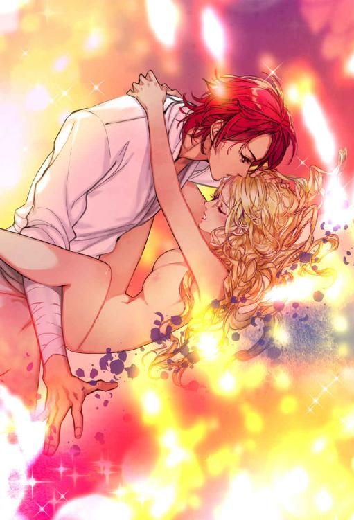
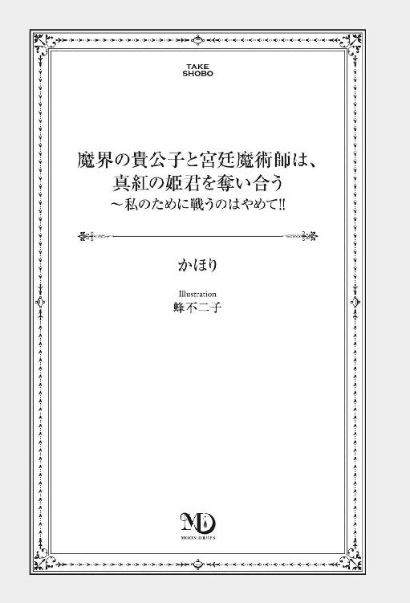
この作品は縦書きでレイアウトされています。
また、ご覧になる機種により、表示の差異が認められることがあります。
一部の漢字が簡略字で表示されていることがあります。
第一章 禁断の本
禁断の本
ヴィアーナは今日もじょうろを手に、高い塀に囲まれた美しい庭で、真紅の薔薇の世話をしていた。この庭には赤い花しか存在しない。赤はこの家を象徴する色だからだ。
今年で十八になるヴィアーナの肌はこの上なく白く滑らか。髪は純度の高いルビーが溶けて流れ出したように真紅にきらめき、優美な眉も、睫毛も、ふくよかな唇も赤なら、瞳も、身に着けているドレスも血のように深い紅だった。
ヴィアーナはふと上を見上げる。空は紫色を帯びた黄昏の色を呈していた。古い言葉で〝竜が治める国〟という意味の地底国──ヴァール・ドゥナ。ここは神話の時代に活躍した、紫色の目の、大いなる魔力を持つ竜の子孫である魔王が治めている。もともと光の射さない空間なのだが、城の有能な宮廷魔術師が魔法で刻々と色を変じ、民の目を楽しませている。光源は見当たらないというのに、不思議な空は度々明度を変え、ときに雲が流れ、星が出る。
兄はまだ帰らないのだろうか。ヴィアーナは溜息を吐きながら、空に大いなる真紅の鷹の幻影を見る。
ヴィアーナには年が五つ離れた兄がいた。ヴァール・ドゥナきっての貴族であるヴァリドゥー家の当主、ハディール。彼は真紅の鷹に姿を変じ、強大な魔力をもって地上に住む下等な生き物である人間どもを脅かし、日々彼らに、ヴィアーナたちの住む地底世界の存在を知らしめている。ハディールの不興を買った人間の村は一瞬のうちに灰燼と帰した。そんな恐ろしい存在であるが、ヴィアーナは兄ほど美しく素晴らしい青年を知らない。
（お兄様、今日はどんなお土産を持ってきてくださるのかしら。きれいな石かしら、珍しいお花かしら、それとも小鳥？）
世間の令嬢よりも過保護に育てられているヴィアーナは、滅多に外出を許されない。兄が出掛けた折に拾ってきてくれる物を、ヴィアーナはとても楽しみにしていた。
中断していた水やりをまた始めようとしたその時、ヴィアーナは視界の隅に小さな影を確認し、再び空を見上げた。兄だ。
「お兄様！」
じょうろをレンガの花壇に置き、ヴィアーナは両手を広げて飛来する真紅の鷹の方へ走り出す。鷹の広げた翼は端から端までが、手を広げたヴィアーナの倍はある。花壇の花を散らさないようにと配慮したのか、いったん塀の上に止まり、せわしく羽ばたきしながら翼を収めた。
「お帰りなさい、ハディールお兄様」
鷹は次の瞬間、金や黒の刺繡で装飾された真紅の衣服をまとった背の高い青年の姿に変じた。塀からすとんと庭先に降りた彼に、ヴィアーナは抱きついた。少々癖のある、燃えるような赤い髪、同じ色の秀麗な眉、その下の鷹のように鋭い瞳、無愛想で滅多に微笑むことのない唇。ヴィアーナは兄の全てが好きだった。
「今日は人間の住みかをいくつ消されたの？」
「答えるまでもない。ヴィアーナ、いい子にしていたか？」
「ええ、それはもう。いつものお兄様のヴィアーナよ。ところでお土産は？」
「そういつもあると思うな」
ハディールは口元に微かな笑みを浮かべて妹の額を小突いた。ヴィアーナが軽やかな笑声を上げると、ハディールは懐から何かを取り出しながら、妹に後ろを向くように促した。
「何かしら」
兄の手によりヴィアーナの首に掛けられた細い銀の鎖の先端には、精緻な彫刻が施された小さな銀板がぶらさがっていた。煌めくルビーが大小五つほど嵌め込まれ、白い胸元を飾っている。その美しさにヴィアーナは息を飲む。
「なんてきれいなの」
ルビーはヴァリドゥー家を象徴する石だった。ゆえにヴィアーナはいくつも所有していたが、これほど見事な石を目にしたのは初めてだ。
「今日滅ぼした小さな国の城を飾っていた巨石を砕いて作った物だ。この世で最もルビーが似合うのは我が家の者だけだ。さあ見せてくれ」
催促されてヴィアーナは、緊張しつつ伏し目がちに兄の方を振り向く。どうか、お兄様の期待を裏切りませんように。
「──宝石の方が霞んでしまう。美しくなったものだ」
ハディールは鋭い瞳を和ませた。良かった。ほっとヴィアーナは胸を撫で下ろす。兄が賛辞を贈るのは非常に珍しい。彼は真実しか口にしないからだ。ヴィアーナは胸を弾ませた。
兄を独占する時間が訪れた。さて、これから兄と何をしようか。チェスか、お人形遊びか、それとも芝居に連れて行ってもらおうか。兄は屋敷の外へ出ることを滅多に許可してくれないけれど、たまのお願いならいいだろう。
ヴィアーナがあれやこれや考えていたその時、ふいにハディールの指先が彼女の顎をそっと持ち上げた。彼の真摯な瞳と目が合う。
「お兄様......？」
ヴィアーナはこんな時の兄の瞳が苦手だった。どうして良いのか、わからない。いたたまれず、視線をあちらこちらにさまよわせてしまう。息が苦しくなる。
（どうして、そんな瞳を......？）
顎を持ち上げるハディールの指先が、ヴィアーナの柔らかい唇に触れた。
指先はゼリーのような唇をゆっくりとなぞる。ハディールは唇の弾力を愉しんでいるのだ。
彼の唇は次第に何かを望むように、薄く開き始めた。
唇をしきりに撫で続ける指先が唇の中に割り入り、もう限界かも知れない、と、ハディールは物憂げに呟いた。
ハディールがヴィアーナに顔を近づけていったその時。
「ヴィアーナ、どうしたの？ さっき、誰かの声がしたようだったけど」
屋敷の中から声がした。母の声だ。
「私です。ただいま帰りました、母上」
ハディールが妹を抱いたまま何事もなかったかのような口調で屋敷の奥に声を掛けると、兄妹の母、ヴィアネーラが二階の部屋の窓から顔を覗かせた。刺繡をしているようだ。
「あら、お帰りなさい、ハディール。ふたりとも、中へお入りなさい。お茶にしましょう。わたくし、刺繡に根を詰め過ぎて疲れてしまって」
「ご無理はいけません。行こう、ヴィアーナ」
ハディールは言った。元の彼に戻っていた。
ヴィアーナは戸惑いつつ小さく返答した。さっき唇が、あともう少しで触れ合いそうになった。兄はもしかしたら、自分にキスをしようとしたのではないか？
ヴィアーナは彼に問うような眼差しを投げかける。納得できる言葉が欲しい。でないと、動揺が収まらない。
そんなヴィアーナの様子に気づいたハディールが言った。
「さっきのはお前をからかっただけだ」
「お兄様!?」
ヴィアーナの顔はさっと青ざめた。
ハディールは、はじめくっくっと肩を揺らし、とうとう明るく笑い出した。
「びっくりしたわ、酷いっ」
「悪い悪い」
ハディールは宥めるように妹の肩を優しく叩き、やがて兄と妹は寄り添いながら屋敷の中へ入った。
あくる日の昼下がり。ヴァリドゥー家に来客があった。ヴァール・ドゥナきっての名門貴族、ヴァリドゥー家と比肩する家格の、ロンドデリル家の双子の姉妹だ。ふたりともヴィアーナとは旧知の間柄で、訪れたのはもちろんヴィアーナと楽しい時を過ごすのが目的であった。
ヴィアーナはふたりをガラス張りのサンルームに招き入れた。壁面には落ち着いた赤のタイルが敷き詰められ、その中央に据えられた獅子の口からは、水が流れ落ちている。陽光が射し込む窓の外にはヴィアーナの着ているドレスと同じ色の、赤い薔薇の海が広がっていた。
ヴィアーナは昨日のこの庭での出来事を思い出す。
昨日、兄がしようとしたこと。
直前で終わったが、まるで恋人同士がすることのようだった。
ヴィアーナの心は揺れる。真摯な兄の瞳。からかっただけ。どちらも本当のようだったから。
いや、兄が妹に恋心など抱くはずがない。やっぱり、ただの戯れだ。
（──お兄様ったら、酷いわ）
「ヴィアーナ、どうしたの？ 考えごと？」
「あ、いいえ」
一瞬もの想いにふけり、友人が訪れていたことを忘れていた。ヴィアーナは窓から離れてすでに友人が腰掛けるテーブルの方へ歩み寄り、向かいの椅子へ腰掛けた。
ロンドデリルの双子の姉はユラン、妹はミランと言った。ヴィアーナと同い年だ。ふたりとも、虹色の瞳に象牙色の肌、ゆるやかにうねる髪は白く輝き、七色に光る小さな貝殻でできたスパンコールが無数についた純白のドレスを着ている。双子だけあってふたりともよく似ており、親しい者でも姉と妹を間違うほどだ。
しかし、彼女達と長年付き合っているヴィアーナには独自の見分け方があり、間違えることはなかった。ふたりはいわゆる不良と言うもので、親に黙って市街地へ出かけては流行を先取りしていた。今日も双子は、それぞれ人気の絵師に描かせた象牙の扇子をわざわざ広げて、ヴィアーナに見せつけるように傍らに置いている。いつも彼女らに遅れを取り、歯がゆく思うヴィアーナであったが、双子は別に彼女に一歩先んじるつもりなどなく、遊びに誘いたいだけなのだ。しかし、兄が怖ろしくていつも断っているのはヴィアーナの方なので仕方がないと諦めている。
「今日はね、この本を貴女に薦めに来たのよ」
にやにやしながら双子が背後から差し出した本には、『甘い果実』とタイトルがついていた。表紙に向かい合う男女の絵が描かれている。
「なあにこれ」
「何って言うか......ねぇ」
双子は顔を見合わせて笑みを深める。本当に仲睦まじいふたりであった。
「とにかく凄いのよ。描写が......」
とユラン。
「描写？」
「行為の」
とミラン。
「行為の......」
ヴィアーナはよく意味が解らないままに彼女達の言葉を繰り返した。キスの描写が凄い本なのだろうか。
貴女がまだ知らない行為よ、とミランに言われ、面白くないヴィアーナは鼻を鳴らした。いつもこうだ。この双子は自分よりもいろいろな事を知っているから自分を馬鹿にする。
「接吻くらいなら知っているわよ」
ヴィアーナの意外な言葉に、ユランが愕然とした表情をして手にしていたカップを取り落としそうになった。
「──お兄様に大切にされ過ぎている貴女だから、キスなんてしたことないと思ってたわ──どこで？ 誰と？」
「どこで誰と出会ったって言うの？ 婚約者でもいるの？ 社交界に出ていない貴女がキスをするって言ったら──」
双子はテーブルに身を乗り出して、ヴィアーナに畳み掛けた。
社交界、という言葉がヴィアーナの胸を切なく締めつけた。ヴィアーナのまだ知らない世界である。
曇った表情を読み取り、ミランがはっと失言に気づく。
「ごめんなさい」
ヴィアーナは気にしないでと弱々しく首を振る。
そうなのだ。目の前の双子はもうすでに一人前の淑女と認められ、城で行われる舞踏会に顔を出したりしている。しかしヴィアーナの社交界デビューはまだだった。母や兄がそれを許さないのだ。魔法王国きっての名家であるというのに、ヴィアーナはなんと魔法が使えない。先祖が大いなる魔力を有していても、代を重ねるごとに魔法を思うように使えなくなることもあるらしい。兄のハディールはヴィアーナのことを、所作が貴族の娘としては優雅さに欠けると言うし、母の伯爵夫人は、嫁に出すには刺繡やダンスがまだまだ合格点にはほど遠いと言う。
「キスなんて、上唇と下唇を合わせれば誰だってできるじゃない。私、貴女達と違って魔法も使えないし、お行儀もまだまだだから......今デビューしたらきっとボロが出ると言われてるわ。早くお兄様やお母様の許可が降りるように、もっと頑張らなくちゃ」
駄目だ。どうしても声が沈んでしまう。自分よりも先に大人の世界に足を踏み入れたふたりに対する憧れと嫉妬、劣等感が増していく。
「くよくよせずに、元気を出して。私達の赤い薔薇」
ユランの励ましにヴィアーナは心からの微笑を浮かべた。良い友人達だ。
「お城の話を聞かせてよ」
ヴィアーナは切り出した。話題を変えるのに好都合だ。
「お城の......そうねぇ」
双子は目をくるくると動かしながら共に考える。白い睫毛にふちどられた、夢そのものが凝縮された玉のような虹色の瞳。ロンドデリル家の始祖は百色の迷夢と言われているが、その姿の詳細は公表されていない。一方、ヴァリドゥー家の始祖は炎を操る真紅の鷹であり、家紋にもなっている。
「あ、そうだ。魔法はね、国王陛下だって使えないのよ」
と、ミラン。ヴィアーナには初耳だった。
「初めて聞いたわ。そんなんで大丈夫なのかしら、この国は」
一貴族の娘である自分ならともかく、魔法王国の頂点に立つ者が。
「陛下にはモスリー卿がいるから大丈夫よ」
とユラン。
「モスリー卿？」
「この地底王国の空を魔法で素敵な色に変えている、宮廷魔術師を務められている魔導卿よ」
ユランと、それに続いて答えたミランの声には共にうっとりした響きがあった。ヴィアーナは想像する。美意識の高い双子のことだ。さぞやその魔導卿は素敵な方なのだろう。
「紫水晶の瞳をした、眩暈しそうなぐらいとても美しい殿方よ。優雅な物腰で、誰にでも平等に優しい眼差しを注いでくれるの──彼に憧れる女性は多いわ。だけど、女性にはまるで興味がないみたいで、彼女達の愛の言葉を飄々と受け流して、孤高を保って難しい書物ばかり読んでおられるのよ」
「あらユラン。他人事みたいに言うけれど、貴女も受け流されたひとりじゃないの？」
クッキーを頰張りながらミランがくぐもった声で言う。
「言わないでよ。あの時はそばに人がいたからよ──とにかく、彼は魔術の学院の卒業生で、学院始まって以来のとても優秀な方だそうよ。誰があの方の心を射止めるのか興味があるわ」
和気藹々と話す双子達の向かい側で、ヴィアーナの真紅の瞳がにわかに潤み始めた。唇がへの字になる。
やっぱり、聞くんじゃなかった。一足先に自分の知らない世界を知った双子が羨ましくてしょうがない。
その時、青い空から真紅の薔薇の花びらが降って来て、それに気づいた双子が歓声を上げた。
ふいに風が揺れて、ヴィアーナは振り返る。いつの間にやら椅子の後ろにヴァリドゥー家の当主が立っていた。
「お嬢さん方。妹を虐めないでやってくれませんか。貴女がたと違い、妹はまだいろいろと幼い部分がありまして......修行中なのです」
双子はたちまち白い頰を紅潮させ、モスリー様と甲乙つけがたいわ、とつぶやいた。
双子と兄が語らっている隙に、何となくヴィアーナは急いでそうしなければいけない気がして、双子から受け取った本を背に隠した。
ロンドデリルの双子が訪れたその夜。
調度やカーテンなど、全てにおいて赤を基調とした部屋の中、ヴィアーナは真紅のシルクの夜着の上に同じく真紅のガウンを羽織り、ベッドの上に寝そべって彼女達から借りた本を広げていた。食事と入浴を終え、あとは寝るだけのくつろぎの時間である。
『甘い果実』という題のその本は、男女の恋物語を題材とした小説であった。
親に決められた相手との結婚が間近に迫っている貴族の娘メロリアンの前に、野性味を帯びた謎の青年アドルが突然現れて彼女に迫り、主人公の心は揺れる。しかし主人公の婚約者であるダトリール男爵も情熱的な愛を彼女に注ぎ、優柔不断な主人公はふたりの男の間を行ったり来たりして頭を悩ませる。兄ハディールから社交界はおろか、屋敷の外にすらなかなか出してもらえないヴィアーナには、少し羨ましい話であった。
いつの間にかヴィアーナは、すっかりこの危険な物語にのめり込んでしまっていた。
謎の青年アドルは二ページ目にして主人公メロリアンに荒々しく接吻し、三百ページはある小説の五十ページ目にしてメロリアンの屋敷の窓から侵入し、彼女がまだ完全に納得していないのにベッドに押し倒した。
「怒濤のごとく物語が展開するわ......所々わからない単語があるわねぇ」
あとで棚から辞書を持って来て調べよう。とりあえず今は読み進めたい。ヴィアーナは運命に翻弄される主人公を案じて、ごくりと唾を飲み込んだ。しかし接吻については書いても、それ以上のことはいくら何でも詳細には書いたりすまい。
そう、たかを括って次のページを捲ったヴィアーナは驚愕した。
「こ、これは......」
彼女の目に突然飛び込んで来たのは衝撃的な挿絵だった。
ベッドの上、裸で四つん這いになったメロリアンが、同じく裸のアドルに後ろから何かされているのだ。ふたりとも苦悶の表情を浮かべている。
思わず心の中でヴィアーナは叫ぶ。そんな獣めいたはしたない体勢で、アドルに何をどうされているの!?
挿絵には、ふたりが繫がった部分はさすがにはっきりとは描かれていなかったので、ヴィアーナは余計にもやもやした。
男女の営みくらいはヴィアーナもすでに知っていた。つい最近のこと、家庭教師がヴィアーナに生物学的な知識として書物をたずさえその行為について教えたのである。しかしそれは文字による解説であり、絵などはない。だからヴィアーナの頭の中でその行為を具体的に想像することはできなかったのだ。その夜、いつものようにヴィアーナは母と兄に今日は先生からこんなことを習いましたと食卓で話した。するとヴィアーナの母は青ざめ、ハディールは無言であったが彼の目の前にあった前菜は瞬時に皿ごと燃えて消し炭となった──ヴァリドゥー家の始祖、真紅の鷹の属性は火であり、ハディールは火炎伯爵とも呼ばれる。彼は時に感情の表出が炎に置き換わるのだ──翌日、家庭教師は解雇され、二度とヴァリドゥー家を訪れることはなかった。
ヴィアーナが兄ハディールと領地の牧場を訪れた際に、たまたま馬の種付けが行われていた時などは、たちまちハディールがヴィアーナを衣の中にかくまってその光景を彼女に見せまいとしたが、少し前にロンドデリルの双子がしていた密やかな話を耳に挟んだことによって、ヴィアーナの頭の中に絵が現れ、男女の営みがより具体的な像になったのだ。おしべとめしべ、庭に訪れる鳥達の交尾を人に当てはめるくらいには。
ヴィアーナは読み進む。わからない単語が気になる。メロリアンはどうして喘いでいるのか。彼女をさんざん泣かせながら、愛の言葉を囁くアドルの言動の不一致も気になる。
（もっと詳しく書きなさいよ！ え......こんな言葉あるの？ 私、勉強が足りないのかしら）
未知の情報がいっぺんに頭の中に押し寄せて来たために、目が回りそうになりながらヴィアーナは本を伏せ、ベッドを降りてよろよろと歩いて部屋の隅にある書棚へと向かった。兄の部屋の本棚に比べると書物の量が圧倒的に少ないが、辞書くらいはある。
ヴィアーナが、新品に近い重い辞書を手に取ったその時。
「ほぅ。夜中まで辞書を出して勉強とは感心だな。我が妹殿は」
ノックもなく入って来たのはハディールだった。夜が更けていたが、彼はまだ夜着にも着替えていない。いつも深夜まで魔法の勉学にいそしんでいるのだ。
「お兄様っ」
振り向いたヴィアーナは口から心臓が飛び出そうになり、辞書を取り落とした。幸い足の上には落ちなかった。
「どうしたんだ？ そんなに驚いて」
ハディールは部屋の中へ進みながらベッドの上に伏せられていた本に目を止め、好奇心に目を輝かせる。
「ん？ 何の本を読んでいる？」
「駄目っ！ それは──嫌ぁああ」
慌ててなりふり構わずヴィアーナは兄を止めにベッドへ駆け寄ったが、ハディールの手の方が早かった。彼が本を手に取る。よりにもよって、裸の挿絵──あとで知ったが、その体勢は後背位と言うらしい──があるページを。
「──一体何の勉強をしている」
彼の表情が俄かに厳しいものとなる。ヴィアーナの顔は蒼白になった。
（どう言い訳すればいいの!?）
「そ、それは......」
この挿絵に一体どの様な注釈を付ければ兄は納得してくれるだろうか。どう考えたところで良い言い訳が見つからない。
「まさかお前が、こんな怪しげな本を読んでいたとは」
嘆かわしい、と言いたげにハディールは嘆息する。本は片手で開かれたままだ。「もう閉じて、本を閉じてよ、お兄様」とヴィアーナは心の中で叫び続ける。心臓がばくばくしていた。
「真面目な本よ。ふ、服を描くのを忘れたんじゃないかしら」
ハディールは妹の発言を一笑に付す。
「随分と杜撰な本だな。ヴァリドゥー家の者が読むような本ではなかろう。ただちに焚書する」
兄が炎の魔法を発動させる予感がし、ヴィアーナは慌てて止めにかかった。
「駄目っ！ お兄様、それは借り物なの！」
ハディールは本を持った手を掲げた。ヴィアーナはそれを取り返そうと手を伸ばし、幾度も飛び上がるが、彼女よりもはるかに背の高いハディールだ。まるで届かない。
「返してっ、お兄様お願いっ」
「これをお前に渡したのは双子だな？ 悪い友達だ。だが悪いのは彼女達だけじゃない。淑女は勧められてもこんな本を手に取るべきではないのだ。失望したぞヴィアーナ......」
厳しい顔つきで必死な様子の彼女を見下ろしていたハディールは、ふいに片方の手でヴィアーナを真紅のシルクが光沢の波を作るベッドへと押し倒した。ヴィアーナは小さな悲鳴を上げる。
「何するのお兄様っ」
両の手首をハディールに押さえつけられ、覆いかぶさって来た彼が作る影の中でヴィアーナは喚く。
「お前もこの本に書かれているようなことをされたいのか......？」
弄うような口ぶりでハディールは妹に問う。低く、しかし、どこまでも優しい声で。
「え......っ」
蒼白だったヴィアーナの頰が瞬時に朱に染まった。
文字を読むのが異常なほど早い兄だ。挿絵だけでなく、すでに文章も数十行は読んでいるだろう。ヴィアーナは動揺を隠せない。どうすれば良いかと、思考を巡らせる。
兄から目を反らしてまずはその鋭い瞳から逃れ、ひと呼吸。
「読めない単語が多くて......服を描き忘れた挿絵のあるこの本に出てくる彼らが何をしているのか、よく理解できなかったわ」
これで大丈夫だろうか。視界の隅で兄の視線を確認する。だが依然として鋭い。
「どんどん私の知っているお前じゃなくなっていくな」
ハディールはさもがっかりしたように、端正な口元に淋しげな微笑を薄く浮かべた。
兄を裏切ってしまったようで、ヴィアーナの胸が切なくなる。
「よ、読めるものもあったけど、意味は解らなかったわ」
「ふうん？」
信じていない様子のハディールは、片方の手でヴィアーナの白い額に触れると真紅の髪の中へと指を沈み込ませ、そのままゆるやかに毛先までを優しく梳く。ヴィアーナはうっとりと目を閉じた。兄からこうされるのは、好きだ。
説明しながらハディールはヴィアーナに唇を近づける。その寸前、ヴィアーナは気配に気づき目を開けた。
ヴィアーナは反射的に兄の胸を両手で押しのけた。こういうことは、恋人とするものなのだ。いくら兄のことが好きでもしてはいけない。
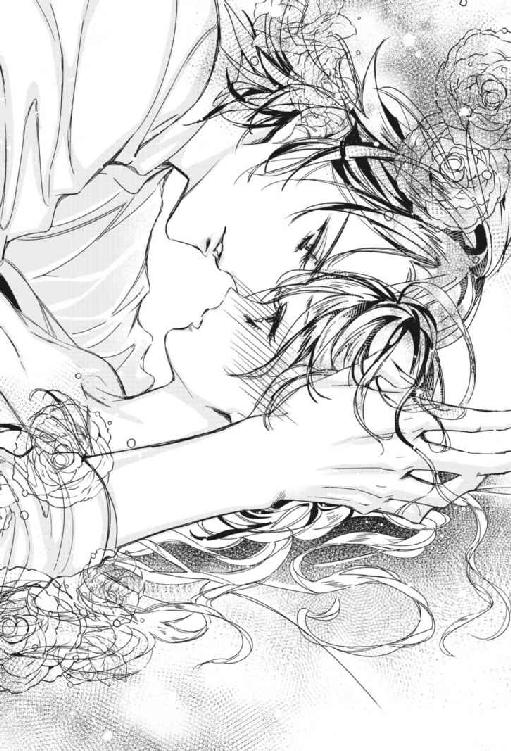
「悪ふざけはやめてよねっ、恋人じゃあるまいし」
ハディールは不意打ちを食らったように目を見開いた。
兄の様子に一瞬怯んだヴィアーナは勢いづく。
「──それにっ、ノックもしないで淑女の部屋に入って来るのは失礼よっ」
立て続けに兄に訴えるヴィアーナの目に涙が滲んだ。自分はもう子供ではないのだ。
しかし、そんな妹の訴えをよそに、ハディールの視線が別のところに集中していることにヴィアーナは気づかなかった。兄を近づけまいと両腕を身体の前に突き出しているために、ヴィアーナの小さなふたつの胸は中心に寄せられ、その頂の色ついた部分は薄い夜着に透けている。
そこに釘づけになったハディールの唇がわずかに開く。
「済まなかったな」
ハディールはそこから視線を無理やり引き剝がすようにして身体を起こすと、本を取り返そうとヴィアーナが手を伸ばすのを阻止しつつベッドから降りた。
「淑女としての自覚が芽生えつつあるのは良いことだ。そろそろお前への接し方を改めなければいけないな」
「扇子を買ってくれたら、許してあげるわよ」
ヴィアーナは勢い良く起き上がって兄の背に言い放った。ついでだからねだってみよう。自分も双子が持っていたような扇子が欲しい。
「悪書を読みふけって、まるで反省の色がないな。却下」
「そんな！」
ヴィアーナの唇がへの字になったその時。
まるで悲鳴のような声が聴こえた。ヴィアーナ、ヴィアーナ、私の娘、どこにいるの？ と、屋敷中に響く声で。
「母上か」
言いながら、ハディールは部屋の扉へ向かい、廊下の方向に耳を澄ました。
「またうなされているようだ。早く行ってやれ」
ヴィアーナは兄にうなずいてベッドから飛び降りた。母は時々、夜にうなされることがあった。そのような時、ヴィアーナは母の側へ行き、一緒に眠るのがこの家の決まりである。
「行ってきます」
ヴィアーナが駆け足で部屋の外へ出る際、扉を開けていたハディールは自分の脇を通り過ぎる妹の髪を愛おしげにそっと撫でた。
第二章漆黒の青年
翌朝。朝食前にヴィアーナは母の臥所から抜け出し、夜着の上にガウンを羽織り、庭に出て薔薇の世話をしていた。空は薄い紅に染まっていた。
ヴィアーナの母、ヴァリドゥー夫人は、就寝中に時々うなされる理由を一切話さなかった。昨晩もそうだったのだが、娘が来て手を握ると安心して寝息を立てた。
ヴィアーナがうずくまって薔薇の花の間引きをしていたその時、視界の隅を人影がよぎった。そちらの方を振り仰ぐ。兄だ。
葡萄酒が溢れる、ルビーでできた噴水の前に類稀なる美貌の青年、真紅の貴公子ことヴァリドゥー家の当主、ハディールが佇んでいた。燃える様な赤い髪に血の様に赤いマントを身に纏い、空を仰いでいる。地上へ出立する時刻だ。
ヴィアーナはしばし兄の姿に見惚れた。こんな夢のように美しい青年が自分の兄だなんて。
「お兄様......」
ぽつりとヴィアーナが呟くと、気づいてハディールは声の方を向いた。炎の気性を宿す彼の真紅の瞳は妹を認識するとたちまち和む。
「もうご出立？」
朝食もまだなのに。ヴィアーナが間引きを止めて立ち上がろうとしたその時、指先に鋭い痛みが走った。
「あっ」
棘が刺さったのだ。
「大丈夫か？」
案じながらハディールが歩み寄って来た。ヴィアーナはうなずきながら立ち上がる。しかし思いのほか深く刺してしまったようだ。
ハディールは負傷した手を胸に抱いて俯いたヴィアーナの傷ついた手を摑むと、自身の唇に押し当て、やがて咥えた。
ヴィアーナは兄の唇と舌の感触に身体をびくりと震わせた。居たたまれずに指を兄の唇から引き離そうとするが、ハディールは全く解放してくれない。
ヴィアーナが抗議しようとしたその時、指先がようやく自由になった。
力強くヴィアーナを見つめるハディールの目は、様々な想いを宿しているようだった。
ハディールは赤レンガの塀に向かった。塀の前まで来て地面を蹴った直後、彼は巨大な真紅の鷹に変身し、大きく翼を広げてそのまま空へと飛び立った。
※ ※ ※
さて。兄に没収された借り物の本を何とかしなければなるまい。
朝食を終えたヴィアーナは自室に戻って真紅のドレスに着替え、あれこれと思考をめぐらせた。本来は勉強に当てられる時間であるが、家庭教師が兄に突然解雇されたために、ヴィアーナは気ままな時間を過ごしていた。
双子から借りた例の小説は、まだ五十ページほどしか読んでいなかった。あと数百ページが未読だ。小説の主人公メロリアンと謎の青年アドル、そして主人公の婚約者ダトリール男爵はどうなるのか。最終的にメロリアンは誰を選ぶのか。何としても続きが読みたい。
しかしハディールの部屋には鍵が掛けられている。魔法の研究などに使う薬品があり、好奇心でよく侵入していた幼い妹の身を、彼が案じたためである。
「うーん......」
使用人に書店へあの本を買いに行かせるのはどうだろう。いや、書店くらいなら自分でも行けるのではないか？ 屋敷からそれほど離れていないはずだ。
（この自由な時間も、次の家庭教師が来れば終わってしまうわ）
ロンドデリルの双子のような真似はできないが、ひとりで近所の書店へ行くくらいなら。
「決めた！ 書店へ行くわ。そしてあの本を買って続きを読むの」
名案を思いついて心が躍り、ヴィアーナは勢いよく立ち上がった。馬車を出すのには母か兄の許可が必要だから徒歩で行くしかない。まずは外歩きに不向きなこのドレスを脱がなければ。
ドレスを脱いでクローゼットの扉を開く。しかし中にはドレスしかない。出鼻をくじかれ、ヴィアーナは吐息を漏らす。そして姿見を見て再び嘆息する。
この髪と目。服を替えても、ヴァリドゥー家の人間の特徴は拭い去れない。この姿で道を歩くのは、ヴァリドゥー家の人間ですと言って回るようなものだ。
「そうだわ。誰か魔法が使える者がいたはずよ......馬丁のキールだわ」
私のお小遣いを彼に渡して服と髪と目の色を変えてもらおう。ヴィアーナはクローゼットの中から比較的裾の広がっていない、装飾の地味なものを選んでそれを着た。
※ ※ ※
ヴィアーナは母との昼食を終え、嫌がる馬丁のキールに無理やり口止め料兼手間賃を渡し、髪の色を憧れの金色に、瞳を緑色に、そしてドレスを地味なこげ茶色に変えてもらうと、まんまと屋敷の外へ出た。レースの白い日傘──宮廷魔術師が闇一色であった空の色を変えるようになって、婦人達の間で流行り始めたのだ──を差してエメラルドの街路樹の路を歩いた。
開放的な気分になってヴィアーナの足取りは軽くなる。私は今、貴族の娘でも何でもない、ヴァール・ドゥナのごく普通の娘。馬丁にかけられたこの魔法はそれほど持たないということなので、書店で本を購入したらすぐに屋敷に帰らなければならないが、それでも楽しい。
馬車が行き交う大通りに出たヴィアーナは、辺りの建築物を見回しながら歩く。書店は市街地の大通り沿いにあったはずだ。確か百貨店の並び。いつもはヴァリドゥー家の炎の鬣を持った馬が引く馬車を止める、あの場所の近くだ。
「あっ、見つけた」
開いた書物の形をした大きな看板が目に入る。ヴィアーナはその白い壁に蔦や葉の浮彫の施された重厚な建物──ヴァール・ドゥナで一番大きな書店、『リントス』──の前に立った。そして、日傘を畳むと入り口から中に入り、まずは整然と並んだ書架の群れを見渡した。立ち読み客も多い。
（あの本は一体どこに......）
緑色のお仕着せを着た男性店員が通りかかったので、ヴィアーナは彼を呼び止めた。
「本を探してくださる？」
「どういった本でございましょう。題名、または作者名などはご存知ですか？」
「『甘い果実』と言う題名の小説よ」
静かな店内に響いてしまったヴィアーナの声に、近くにいた立ち読み客が本から顔を上げる。その視線にヴィアーナは頰を染め口元を覆った。本の清算が済んだら即刻退散だ。
買った本の入った袋をたずさえ、ヴィアーナは帰路を急いだ。しかし、屋敷はそれほど遠くないはずなのに、一向にたどり着かない。ヴィアーナの心に不安が押し寄せる。まさか道に迷ってしまったのでは。
雲行きが怪しくなり、ほどなくして空からぽつりぽつりと雨が降って来た。傘を叩く雨音に、ヴィアーナは空を見上げる。
「何てことなの」
次第に雨足はひどくなり、気づけば水に浸された街路の上で水がはね踊るほどになった。
本が濡れてしまうのは時間の問題だ。急いでどこかで雨宿りをしなければ。ヴィアーナは辺りを見渡し、目に入ったパン屋の軒下へと走った。本は雨を避けるため胸に抱えているものの、ドレスはもはやびしょ濡れだ。
「雨なんて要らないわよ、いい迷惑だわ、宮廷魔術師さん！」
空へ向かってヴィアーナが怒声を発したその時。
「砂埃の街路や建物の屋根はきれいになりますよ」
背後から実に吞気な声がして、ヴィアーナは振り返る。
あまりの美貌に悲鳴を上げそうになった。
いつからそこにいたのか、ヴィアーナのすぐ後ろに、髪も身に纏うマントも漆黒の、街角に場違いなほど高雅な顔立ちの美青年が立っていた。ヴィアーナと同じく雨をしのいでいるようだ。
「乗り合い馬車がここへ来ますので、良かったら家で雨宿りして行きませんか？ すぐ近くなのですよ」
「ええ、是非」
ヴィアーナは青年の誘いに一も二もなく飛びついた。良かった。これで本が濡れなくて済む。
青年はヴィアーナに向かって柔らかく微笑した。彼女の兄と同じくらいに丈高いその白皙の青年の、黒く長い睫毛の下に輝く瞳は、アメジストのようであった。
乗り合い馬車に乗っている時間はほんのわずかだった。馬車から降りたヴィアーナは、雨の中、街で出会った謎の青年の漆黒のマントに庇われて、彼に誘導されるまま街路を駆けた。
ヴィアーナは購入した本を抱き締めて走りつつ、青年のマントの中から薄暗くなった街路を見渡す。ここはどこだろう。
道路は様々な色のタイルで整地され、しっかりとした門構えの屋敷が並んでいるのを見ると、市街地の中心に展開する高級住宅地らしいが、あまり外に出たことがないので土地勘がない。
ふと青年を見上げると、彼は本を頭上にかざし、雨を除けていた。ひょっとすると、買ったばかりの本なのではないのだろうか。自分だったらマントの中に入れて濡れるのを防ぐけれど。
「本が濡れてしまいま──」
「読めれば問題ありませんので」
青年はヴィアーナの質問をさえぎって答えた。兄に似ている、とヴィアーナは思った。年も兄と同じくらいのようだ。
「もうすぐ着きます──あのぼろ家です」
青年が指差したのは立派な門扉の豪壮な屋敷だった。
（うちより立派じゃない）
ヴィアーナは思った。しかし、屋敷に近づくにつれ、胸に不安が芽生え始めた。一見、豪壮に見える屋敷は、近くで見るとかなり古びていた。
塀には大きなひびが幾つも入っており、門には無数の蔦が絡んでいて長い間手入れがされておらず、一見無人の屋敷だ。
「さあ、中へ」
青年がヴィアーナを促しつつ門番のいない黒い錬鉄の門を開けると、女の悲鳴のような不気味な音がした。長い間、蝶番に油が差されていないようだ。
扉が開くと、屋敷の敷地から風に乗って鮮やかな青い色の花びらが街路に舞い落ちて広がり、ヴィアーナの濡れた足元にも張りついた。薔薇の花びらだった。屋敷の敷地には一面にビロードのような深く青い薔薇の花びらが敷き詰められていた。
「青い薔薇......」
ヴィアーナは思わず呟いた。青がこんなにも深遠な色だったとは。
いつしか雨は止んでいた。しかし雲はまだ重く暗い。灰色の空の下、青年のあとに続きヴィアーナは敷地の中へ入った。青い絨毯を踏みしめて奥へと進むと、目に入る何もかもが古色蒼然としていた。庭のそこかしこに薔薇の蔦の這った円柱や石膏像の裸婦が佇み、ひび割れた噴水はヴィアーナが通りかかると客人を歓迎するように水を噴き上げた。
「それにしても荒れ放題のお庭ね」
残念だ。手入れすればもっと素敵になるだろうに。
「ここには私ひとりしかいないもので、庭にまでなかなか手が回らないのです」
青年は笑いながら言った。
「ひとり？ こんな広いお屋敷に？」
「ええそうです。ここには滅多に帰りませんが──ちょっと荷物を取りに帰ったところで貴女と会ったのです」
「別宅があるということなのね」
「ええ、まあ、そうです」
青年は曖昧に答えつつ、蔦の葉に覆われた建物の方へ向かう。ヴィアーナは駆け足で青年に追いついた。青年は普通の速度で歩いているのだが、歩幅が違うのですぐに引き離されてしまうのだ。
「別宅があるのに庭や屋敷の手入れをする者を雇えないの？」
矛盾を感じてそれを指摘し、ヴィアーナは青年をよく観察しようと見上げた。そこにあった横顔にヴィアーナは思わず恍惚となった。まるで美の化身。雨に濡れてその額に張りついた黒髪が彼の凄絶な美貌を一層引き立てている。
「参りましたね。もうその辺で勘弁してください、お嬢さん」
青年は肩を竦めて弱った声で哀願した。
少々怪しく思われても構わない。しばらく美貌を鑑賞していたい。ヴィアーナは思った。
「ヴィアーナですわ」
ヴィアーナは名を告げた。名前だけなら良いだろう。今は魔法で髪の色と瞳の色を変えてもらっているし、姓さえ名乗らなければヴァリドゥー伯爵家の娘だとばれることはないはずだ。
「貴方は？」
「これは失礼しました。モスリーと申します」
彼もまた姓ではなく名だけ告げた。
「モスリー様......」
どこかで聞いたことのある名前だ、とヴィアーナは記憶の糸をたぐるが、思い出せない。彼が社交の世界の人なら──デビュー前の身ではあるが──失礼のないようにしなければいけない。
この屋敷のどこかに家紋が掲げてあったかもしれない。確認すれば良かった。青い薔薇の美しさに気を取られていた。
（モスリー、モスリー......気のせいね。思い出せないわ）
昨日と今日で、未知の情報が頭の中に一気に押し寄せてきたせいで、混乱しているのだろう。
※ ※ ※
モスリーの屋敷の応接間に通されたヴィアーナは、彼に待っているように言われ、埃まみれのソファに腰掛けた。広い部屋の中を見渡してみる。漆喰の天井には美しい薔薇の彫刻が施されている。壁には青薔薇の意匠を用いた壁紙が貼られ、重厚な腰壁に囲まれた格調高い部屋であった。しかし庭やソファと同様、大理石の暖炉も棚もテーブルも埃が堆積していて、長い間、手入れがされていないことがわかる。
ヴィアーナは暖炉の上に、小さな四角い金の額縁に収められた肖像画が飾られているのを見つけた。黒髪の若い女性が描かれている。モスリーにどことなく面影が似ていた。
彼の姉か妹だろうか。ヴィアーナがぼんやりと思った時、モスリーが扉を開けて入って来た。漆黒のマントは脱いでいたが、やはり総身黒ずくめである。彼の手には紫色の女性ものの衣類がある。
「母のドレスがありましたんで、良かったら着替えてください。濡れていて気持ち悪いでしょう？」
「えっ!?」
善意を前面に押し出したようなにこやかな表情で差し出されたドレスを、ヴィアーナは躊躇しつつもソファから立ち上がり受け取った。まさか、着替えを覗くようなことはするまい。
ヴィアーナがドレスを抱いてモスリーがどうするかじっと見ていると、彼は華麗に踵を返した。ヴィアーナが少し胸の部分が余る紫色のドレスに着替え終えた頃、再びノックの音がしてモスリーが部屋へ入って来た。彼が手にした盆の上には銀製の茶器があり、紅茶の葉がちょうど開く頃合であった。
「ところでヴィアーナ、それは何の本なんですか？」
ヴィアーナの向かい、テーブルを挟んだソファに腰掛けたモスリーは、茶をすすりながら彼女の脇に置かれた本に目をやる。
「えっ......あっ......その」
ふいに問われてヴィアーナはティーカップを落としそうになった。
ええい、言ってもわかるまい、と思い、ヴィアーナは口を開く。
「『甘い果実』......という小説ですわ」
澄まして答える。
「ああ、聞いたことがあります。今話題の女性向けのきわどい本でしょう？」
気まずい沈黙が流れた。
話題の本の存在を知っていた。モスリーは返答に窮するヴィアーナに助け船を出すでもなく茶をすする。
まるで空気を読まない不親切な彼を憎らしく思いつつ、ヴィアーナは動揺を悟られまいとした。
「ロロロロマンスを理解しない方の言いようですわ。それにしても、良い香りのお茶ですわねぇ」
「ここには久しぶりに来たのですが、茶葉は湿気っていないようだったので使いました。香りも飛んでいなかったようですね。良かった」
「どれくらい、いらしてなかったの？」
「さて......もう半年以上になりますかねぇ。前回も本を取りに来ただけでしたが」
「そんな古いお茶を私に!?」
私はヴァール・ドゥナきっての名門、ヴァリドゥー家の令嬢よ、と切り口上的な台詞が口を突いて出そうになる。だが、彼がいなければ本も服も濡れて、家にも帰れずに街中をさまよって風邪をひいていたかもしれない。
モスリーは申し訳なさそうに頭を搔いた。ヴィアーナは衝撃を受ける。彼の手はとても繊細で、家事をしたことなどなさそうだった。給仕させたことが申し訳なく思えてくる。たとえ古いお茶だったとしても、彼にしては最高のもてなしだったのかもしれない。
「ごめんなさい。飲めれば問題ないわ」
ヴィアーナは再び紅茶を味わった。モスリーの代わりに自分が淹れればよかった。
モスリーは天井を仰ぎ、楽団の指揮者のように手を振りかざした。
するとシャンデリアの光が赤青黄色と変化し、さらには天井から青い薔薇の雨が降った。
指先を軽くふって元の状態に戻すと、モスリーはヴィアーナに向けて微笑を浮かべた。
ヴィアーナも思わず微笑んだ。どこか得体の知れないその微笑に彼の謎は深まる一方だ。
「いいわね、魔法が使える人って。私、魔法が使えないんです」
「ん？ 貴女には魔法がかかっているようですが......それは自分でかけたものではなかったのですね」
ヴィアーナの頭を見ながらモスリーは言う。ヴィアーナは思わず頭を押さえた。そうだ。この髪、そして目。馬丁のキールに色を変えてもらったけれど、キールの魔法はそれほど持たない。まさか切れかかっている？
キールに金色に変えてもらったヴィアーナの髪は、モスリーと時を過ごしている間に薄く赤色を滲ませるようになっていた。緑色だった瞳に至ってはもはや真紅だ。
「『どちら』が本当の貴女なんでしょうね」
さして驚いた風もなく、モスリーは言う。
「──赤が本当なら、警戒しますけど」
のんびりとした声のにこやかなモスリーの様子とは裏腹に、部屋に不穏な空気が満ちた。
ヴィアーナはひやりとした。人心が複雑に絡み合う社交界の長い歴史の中で名を馳せるヴァリドゥー家に、敵意を持つ者がいないとは言えない。
「き、金色、金色よ！ 目は緑なの！」
ああ、私に魔法が使えたら！ このまま髪と目が真紅に戻ればモスリーの警戒は敵意になるかもしれず、そうなれば自分の身が危うい。頭を覆い目を閉じたヴィアーナの手に、ふいに何かが触れた。氷のように冷たい。
ヴィアーナが目を開けると、間近にテーブルから身を乗り出したモスリーの顔があった。彼の神秘的な紫色の瞳に、ヴィアーナの魂は吸い込まれそうになった。彼女の手に重ねられたのは、大きな彼の手だった。
「何も聞きません。わかりました、髪は金色ですね」
ゆっくりと、モスリーの手がヴィアーナの髪の上を滑る。赤に変じようとしていた髪はたちまち金色になった。
「目を閉じて」
そう促され、ヴィアーナは目を閉じる。瞼の上に彼の指がそっと載せられた。本当に、冷たい手だ。
「瞳は緑色ですね──さあ、開けてください」
ヴィアーナが再び目を開けると、キールから魔法をかけてもらった時の、鮮やかな緑色の瞳が戻っていた。
「馬車の中でもずっと思っていたのですが、貴女は私の子供の頃の初恋の人に、とてもよく似ている」
ヴィアーナの片頰に触れ、懐かしむようにモスリーは言った。
「さわ......らない......で」
私に触れてもいいのはお兄様だけ。ヴィアーナは手を撥ね退けた。
けれど、心の中の思いとは裏腹に身が竦む。なぜか無礼を働いたような気持ちになる。
「これは失礼」
モスリーはさっと身を引いた。
モスリーとすぐに視線を合わせることもできず、何だか居たたまれなくなって、ヴィアーナは窓の方に目をやった。いつの間にか空は晴れ、夕べの色に染まろうとしていた。
「大変！ もう帰らなくちゃ」
モスリーの屋敷の応接間で、ヴィアーナは暮れつつある窓の外を見て叫んだ。兄が帰る前に家に戻らなければ、大変なことになる。
「では、馬車を手配しましょう」
モスリーが椅子から立ち上がった時、窓の外で鳥の鳴き声がした。
ふたりが外を見ると、庭に一羽のカラスが舞い降りた。
ヴィアーナは鳥の正体がカラスだとわかってほっと胸を撫で下ろした。一瞬兄かと思ったのだ。いや、兄が変化するのは鷹だった。
「ちょうど良いところへ」
モスリーは庭先に停まっているカラスの方へ歩み寄り、窓を開けた。カラスはモスリーが歩み出るより早く羽をはためかせて、彼の肩に飛び移った。
「ご主人様がなかなか戻らないので心配になって様子を見に来たんです」
カラスはモスリーに女の子のような愛らしい声で語りかけた。
「来客がありまして」
モスリーがカラスに答える。
（カラスが喋ってる）
ヴィアーナは部屋の中からモスリーと会話するカラスを見て、兄のように、人が変化しているのだろうかと思った。
強大な魔力を持つ真紅の鷹を始祖とするヴァリドゥー家だが、他の魔法王国ヴァール・ドゥナの民と同様、代を経るごとに文明社会に適合した姿、つまり人の形に変容していった。魔力を駆使する時など、効率が良い時だけ、変化して始祖の姿を取るようになったのだ。
「エリン、このお嬢さんをお送りしなければなりませんので馬車の手配を」
命じられたカラスはモスリーの肩の上で小さく跳ねて、ヴィアーナの方に向きを変えた。『エリン』というのはカラスの名前らしい。ヴィアーナは思った。不思議な響きだ。ここヴァール・ドゥナでは珍しい。
「エリン、エリン、ガァア」
カラスは騒ぎ出し、羽をはためかせると突如天井に舞い上がった。
突然のことに驚き、ヴィアーナは後ろへよろけそうになった。カラスはヴィアーナの真上を旋回した。
「お、落し物しないでね。あ、貴女は一体何なの」
ヴィアーナは頭を庇い、揺れるシャンデリアの真下から少し離れた。しかしカラスは上空で円を描きつつヴィアーナを追って来る。
「やだっ、モスリー様、助けてっ」
「エリン、やめなさい。お嬢さんがびっくりしていますよ」
主人の制止を聞かず、カラスはなおもヴィアーナを脅す。
「だってだって初恋のエリンじゃない！ ご主人様、もう私のことなんかどうでもいいんでしょうね、いいんでしょうね」
「何を言っているんです。別人です。それよりも早くなさい。私の命令が聞けないのですか？」
あくまでも柔らかい口調だが、冷徹さを滲ませて、モスリーはカラスに言う。
「めめめ滅相もないです、手配して参ります、まま参ります」
カラスは慌てて窓から飛び出して行った。
「──うちの使い魔がお騒がせしました」
モスリーはヴィアーナの方へ歩み寄った。ヴィアーナは騒動によって乱れた髪を整えつつ安堵の吐息を漏らした。
「あのカラスは人が変化したものではないの？ 言葉がえらく流暢だったけど」
「ただのカラスです。私の世話をしてくれています」
カラスを飼育するなんて珍しい。ヴィアーナは目の前の青年のことが何となくわかってきた。廃屋のようなこの屋敷もそうだが、ずいぶん風変わりな人のようだ。
「カラスに初恋の人の名をつけたのね」
「いやはや、お恥ずかしい。これ以上の詮索はご勘弁を」
モスリーは頭を搔いたが、ヴィアーナには彼がいたって落ち着き払っているように見えた。それに比べて自分は......。カラスのことであんなにうろたえるんじゃなかった。彼は何かに動揺したり、顔色を変えることなどあるのだろうか。恋をしたことがあるというのが不思議だ。
「モスリー様」
「様は不要です。私も貴女のことをヴィアーナと呼びたいのです」
風変わり、柔和な微笑の鉄面皮、そして少しずうずうしい男だ、と内心ヴィアーナは苦笑した。
だが、今の自分はその辺にいる普通の娘なのだ。彼はヴィアーナの正体がヴァール・ドゥナきっての名門貴族、ヴァリドゥー家の令嬢であることを知らない。
「モスリー、今日は本当にありがとう。本も濡れずにすんだし、服を貸してくれたお陰で風邪をひかずに済んだわ」
「私の方こそ、貴女のようなお嬢さんとお話できて良かった。雨がもたらしてくれた福禄とでも言いましょうか」
ヴィアーナはうなずいた。
「このドレスは洗濯してきっとお返しするわね」
つい、とモスリーはさらに前に歩み出てヴィアーナの手を取った。触れるなと言ったのに、この男は。
モスリーはじっとヴィアーナを見つめた。
「ご迷惑でなければそのまま貴女のものにしてください。服もきっとその方がいいでしょうから」
「でも、これはモスリーのお母様のものなんじゃ」
「母は私が子供の頃に他界しました」
「え......そうだったの？ 可哀想に......っ」
ヴィアーナが同情を寄せると、モスリーはにわかに哀愁を帯び始めた。
「可哀想な私にキスを許してくださいます？」
突然の申し出にヴィアーナは拒絶すべく身を引こうとしたが、手を握られていて逃げるに逃げられず、顔を紅潮させ、ぎゅっと目を閉じた。身体が震える。
しかし、いつまで経ってもヴィアーナの唇に彼のそれが触れることはなかった。やがて、ふふ、と彼の笑う声が聞こえた。
「可愛いですね、貴女。特にその唇」
ヴィアーナが目を開けると、美貌のモスリーの満足げな顔がそこにあった。目を閉じていた間、ずっと怯えた顔を眺められていたのだ。
からかって面白がっていたのだ。ヴィアーナは悔しさに鼻を鳴らした。
モスリーの慢心したような微笑はほんの少しだけ、心の奥からの感情を滲ませているようだ。
「またいつかお会いできるといい──いえ、きっとそうなるでしょう」
モスリーはヴィアーナの手を解放すると、窓の方を振り向いた。
「エリンが帰って来ました。馬車が着いたようです」
※ ※ ※
外は夕闇に沈んでいた。荷物を手にしたヴィアーナと漆黒のマントを羽織ったモスリー、そしてカラスのエリンが青薔薇の屋敷を出ると、薄闇の中、門の前に豪華な黒塗りの箱馬車が停まっていた。二頭立てで黒馬が引き、馬車の扉部分や車輪は金で装飾されている。
「美しい馬車......」
こんな見事な造りの馬車はヴァリドゥー家にもない。本当に彼は一体何者なのだろう。
モスリーは肩の上のカラスを軽く睨む。
「貸し馬車です。もっと地味なのはなかったんですか？」
「これしかなかったんですぅ」
エリンが羽をばたつかせて言い訳する間、紫色のお仕着せを着た御者が馬車から降りて来てドアを開き、緋色の絨毯の敷かれた折り畳み式の階段を引き出した。
ヴィアーナは馬車の方へ歩みながら、ふと足を止め、何気なく門の方を振り返った。そう言えばこの家の紋章を確認していなかった。
屋敷の門にささやかに掲げられた盾形の紋章には、無数の蛇とともに一輪の青薔薇が描かれていた。貴族の娘の教養として名家の家紋は憶えておかなければならなかったが、ヴィアーナは勉強が苦手だった。
「さあ、ヴィアーナ」
モスリーに促されてヴィアーナは馬車の中へ進んだ。
やがてふたりと一羽が馬車に乗り込むと、おもむろに扉が閉められた。
「行き先は？」
「ええっと──」
ヴィアーナは考える。ヴァリドゥー家の前で馬車を止めては、モスリーに自分の身元がばれてしまう。それに、兄がもし帰っていれば、親切にしてくれたモスリーに迷惑がかかるかもしれない。
「七番街の......レアン公園まで」
レアン公園はヴァリドゥー家の近所で、屋敷まで歩いて数分の距離だ。走って帰れば危ないことはない。
「わかりました。レアン公園までお願いします」
モスリーが御者に行き先を伝えると、やがて馬車は走り出した。
馬車の中、スプリングの効いた緋色のビロード張りの椅子に腰掛けたヴィアーナは、向かいの席に腰掛けるモスリーの美しさから視線を逸らすためにカーテンを開けて窓の外を見た。
馬車や人が行き交う薄暗い街路を、突如、オレンジ色に光り輝く馬が横切った。炎の鬣を持った馬だ。赤い毛色のその馬の乗り手は赤のお仕着せを着て、片手に松明を持っていた。それから何頭もあとに続いてゆく。
「一目瞭然、あの馬はヴァリドゥー家のものですね、ご主人様。物々しい様子ですけど、何があったんでしょうねっねっ」
モスリーの肩からカラスも窓の外を覗き見て騒ぎ立てる。
ヴィアーナはといえば、窓の外を見たまま、硬直していた。
（......お兄様だわ。もう帰っていらっしゃったんだわ）
恐怖のあまり、ヴィアーナは蒼白になった。あの馬の群れは自分の搜索隊に違いない。相応の覚悟をして帰宅しなければなるまい。
「どうしました？ ヴィアーナ」
面白がるような紫の瞳と目が合う。
「いい、え、何でも」
「公園、もうすぐ着きますよ」
公園の入口に馬車を停めてもらうと、ヴィアーナは荷物を手に馬車から降りた。空にはすでに明るい星が出ている。
「今日は本当にありがとう」
ヴィアーナは振り返り、馬車を降りたモスリーに再び礼を述べた。
「ゆっくり挨拶などしている場合ですか？ 早く帰らないと、門限はとっくに過ぎているのでは？」
「え、ええ、もう......過ぎちゃってるわ。うち、厳しいから......」
ヴィアーナがぎこちなく答えると、モスリーは一歩前に進み出た。先刻のこともあり、ヴィアーナは思わず身構えた。
モスリーは手の平でさっとヴィアーナの目の前の空間を撫でた。指先まで神経の行き渡った、華麗な仕草だった。
「護身に妖魔をつけておきました。家に入れば効力は消えます」
「あ、ありがとう」
モスリーは身を翻し、馬車に乗り込むと、愛想良く手を振った。
「それでは可愛いヴィアーナ、お元気で。また近いうちに」
扉は閉まり、馬車は再び走り出した。
馬車が角を曲がるまで手を振って見送った後、ヴィアーナは淑女にあるまじき駆け足でひと目散に我が家へ向かった。
数分後、ヴィアーナは家にたどり着いた。
髪と目の色が違っているので、門番から搜索中の令嬢だと認められるのにまた数分を要した。
屋敷の中に入るまでにヴィアーナは、母が行方不明となった娘を心配するあまり倒れてしまったこと、そして兄ハディールが黙って家を抜け出た妹に対し烈火のごとく怒っていることを知らされた。
第三章怒れる真紅の鷹
屋敷の中へ入ったヴィアーナは、執事に濡れた服や購入した本を自分の部屋に届けるよう命じた。
手際の悪い執事に当たり散らしてみたが、そんなことをしても肝心の母と兄との面会が遅れるだけだと悟り、焦燥に駆られたヴィアーナは、まずは母がいる居間に向かった。
兄ハディールはきっと、鬼のような形相をしているに違いない。そんな兄との対面の前にはひと呼吸置きたい。
ヴィアーナの足取りは重かった。
「お母様！ ただいま戻りました」
ヴィアーナが居間へ入ると、そこにはひとり掛けの椅子の背もたれに、ほとんど仰向けの状態で脱力したように座る母ヴィアネーラの姿があった。ヴィアーナと同様に赤い髪と瞳をしていて、真紅のドレスをまとった貴婦人だ。弓なりの眉と吊り上がり気味の目尻の、少々きつめで高雅な顔立ちは、兄ハディールが受け継いでいる。見た目の年齢は、ヴィアーナの姉で通るほど若く美しい。ヴィアネーラはメイドが運んで来た水を、手だけ差し伸ばして受け取っているところだった。
「ヴィアーナ......？」
か細い声とともに、ヴィアネーラは青ざめた顔を入り口の方へ向ける。そこに立つ娘の姿を確認すると、彼女は真紅の瞳をこれ以上ないほどに見開いた。
「ヴィアーナ！ どこへ行っていたの!?」
コップをメイドの持つ盆に置いて、ヴィアネーラは娘に向けて両手を広げた。ヴィアーナは母の元へまっしぐらに駆け寄ると、その腕に飛び込んだ。
「ごめんなさい、お母様！」
ヴィアネーラは力の限り娘を抱き締めた。
ヴィアーナの胸の中で次第に罪悪感が膨れ上がった。ちょっとした思いつきの行動が、これほど母を憔悴させることになるとは。
「──わたくしがどれほど心配したか分かっているの!?」
「本当にごめんなさい。ひとりで街へ出てみたかったの。まさかこんな騒ぎになるなんて」
「当たり前です。お前はヴァリドゥー家の大切な娘なんですから。もしいなくなったら家の者総出で街中を探し回るに決まっています。あと一時間、探しても見つからなければ魔法警察の出動を要請するところでした」
「そんな......大変なことに......？」
ヴィアーナは身体が小さく震えるのを感じた。
「さあ、顔をよく見せてわたくしをもっと安心させておくれ、ヴィアーナ」
言われるまま、ヴィアーナは母の腕の中で顔を上げた。ヴィアーナの瞳に涙が浮かんだ。ヴィアネーラはもう娘を責めることはせず、慈愛の眼差しを注ぎながらその頰に触れた。
「なんて髪をしているの？ ああ、キールに魔法で色を変えてもらったのね」
キール、と聞いてヴィアーナははっとする。ヴィアーナが街へ出る際に髪と目の色を魔法で変えてくれた少年。彼の姿をまだ見ていない。
（まさか、私のことでお兄様から酷い折檻を受けているんじゃ......）
「キールはどうしたか知らない？ お母様」
青ざめた顔でヴィアーナが問うと、彼女の髪を撫でていたヴィアネーラの手が止まった。
「さ、さあ......」
気まずそうに視線を反らす母に、ヴィアーナは不吉な予感がした。
「あの子、ハディールに酷く怒られていたわね。貴女の外出を阻止すべきなのに、手助けをしたのだから、当然と言ったら当然なのでしょうけど......」
ヴィアネーラの語尾が小さくなる。ヴィアネーラは屋敷の運営は息子のハディールにすっかり任せてきりで、使用人の動静など細かいことまで把握はしてなかった。
気性の激しい兄のことだ、キールがただで済むはずがない。
怒られるのも、折檻を受けるのも私だけでいい。髪と目の色を変えるのもキールに無理やり頼み込んだのだ。彼に罪はない。
「お兄様はどちらに？」
「執務部屋にいるわ──わたくしのことはもういいから、ハディールのところへ行ってあげて」
「わかったわ、お母様。それじゃあ夕飯の時にまた」
ヴィアーナは立ち上がる。
「わたくしはもう休みます。貴女の顔を見たから安心して──もう眠るだけの気力しか残っていません」
元来身体の弱い母である。ヴィアーナは弱々しく微笑する彼女に自責の念が増した。
けれど兄のお説教は長時間にわたるかもしれない。添い寝の提案はするまい。
「おやすみなさい、お母様」
ヴィアーナは母の頰に就寝前のキスをして、部屋をあとにした。
さて、恐怖の執務部屋へ向かわねば。
※ ※ ※
怖ろしくて足が竦む。
ヴィアーナは執務室の重々しい扉の前でしばらくためらっていた。手は扉をノックする直前で止まっている。
（私の帰宅はもう耳に入っているんだろうけど、お兄様にちゃんと帰ったと報告しないことには騒動は終息しないから......）
ヴァリドゥー家の人騒がせな炎の馬の搜索部隊は、まだ市街地を駆け回っているはずだ。
心を決めて、ヴィアーナは扉をノックした。ややあって、入れ、とぶっきらぼうなハディールの返事があった。声の感じからしても兄は相当怒っているようだ。
「ただいま帰りました、お兄様......」
声を震わせて言いながらヴィアーナが扉を開くと、部屋の奥の書類やインク瓶などが置かれた重厚な執務用の机で、ハディールが手に顎を載せて厳めしい顔つきで待ち構えていた。
視線を合わせるのが怖くて、ヴィアーナは床に目を落として部屋の奥へ進んだ。
途中、黒こげになった大きな物体が床に落ちているのが目に入り、ヴィアーナは足を止める。
「こ、これ......」
「お前の不良行為の手助けをした馬丁だ」
驚愕のあまり、ヴィアーナは絶叫した。現実を受け止めきれず、一度では収まらず三度絶叫した。
「キール!!」
ヴィアーナは黒こげの物体の前にうずくまった。それは、よく見ると年の頃十四、五の少年だった。衣服からして、キールに間違いない。
「酷いわ、お兄様!! あんまりよ!!」
涙を零しながらヴィアーナはハディールを強く睨みつけた。地上世界の人間どもならともかく、兄がまさか、自分の屋敷に仕える人間にこんな残酷なことをするなんて。
しかしハディールは、ヴィアーナの非難に少しも動じなかった。尊大かつ冷徹な、屋敷の当主としての表情で妹を真っ直ぐに見据え続ける。
「キールは令嬢の外出の手助けをした。つまり、危険に晒したのだ。当然の報いだ」
「そんな──そんなぁあ!!」
ヴィアーナはキールの亡骸にすがってわあわあと泣いた。
「キールは優しい子だったわ！ うちの馬だって懐いてた......魔法がちっとも使えない私をなぐさめてくれたわ！ キールは何も悪くないのよ。私が無理やり頼んだから断れなかったのよ──それなのにそれなのに、お兄様ったらこんな酷い目に遭わせるなんて！ 鬼畜の所業よ！ 人でなし！ キールの代わりに恨んでやる！ 可哀想なキール！」
「ったく鼻水垂らして汚いったらありゃせん。自分のしたことをすっかり棚に上げてお前は」
ハディールが苦笑しながら言う。
「謝るわよ！ ごめんなさい、お兄様！ どうも済みませんでした!! だから、返してよ！ キールをっ！」
無残なキールの遺体から身体を離し、ヴィアーナが涙の瞳で改めてキールを見つめると、その胸の辺りが微かに上下したような気がした。
ハディールが舌打ちした次の瞬間、耐え忍ぶように引き結ばれていたキールの口元が歪んだかと思うと、目の端から涙が一筋、零れ落ちた。
「──もう駄目です、旦那様。息を止めるのも苦しいし、これ以上お優しいお嬢様を騙し続けるのは無理です......俺なんかのためにこんなに泣いてくださって......俺は、俺はっ」
黒こげの遺体が嗚咽を始めたではないか。ヴィアーナは状況を飲み込めず、立ち尽くした。
「騙して済みません、お嬢様」、と一気に大声で叫びながらキールは上体を起こし、ヴィアーナに思考する暇すら与えず、あっという間に退場した。
室内に微妙な空気が流れた。
やっと状況を理解したヴィアーナは再び兄を睨む。今度はハディールが目を反らす番だ。
「お兄様......悪戯にしては、タチが悪すぎるわ」
努めて表情を険しくしたヴィアーナは机を回り込んで兄の元へ歩み寄った。
ハディールは真横に立ったヴィアーナの方に身体を向けた。真紅の瞳は炎を宿したように相変わらず怒っている。
「お前が悪いんだ。軽はずみなことをするから。あの程度では足りない。それ相応の罰を与えないとな」
罰、と聞いてヴィアーナは思わず身を竦めた。兄の魔力が凄まじいことは知っている。人間の住む地上世界の街のひとつやふたつ、簡単に破壊できる。
ハディールは妹の前に金の指輪が嵌められた手をかざした。
ヴィアーナは怖ろしくてぎゅっと目を閉じた。
「しばらくこの姿でいろっ」
空から降って来た大音響に驚いてヴィアーナが目を開けると、目の前に巨大な靴があった。
「な、何？ 私一体どうしちゃったの？」
ふいに背を何かに摘みあげられ、ヴィアーナの身体は宙に浮いた。
「きゃ、きゃぁあああっ、助けてーっ！」
どんどん高度が上がっていき、ヴィアーナは慌てふためいて足をばたつかせた。
高度はやがて机の上が一望できるほどになった。しかしその何もかもが大きい。つまりヴィアーナの身体は小さくされてしまったのだ。
ヴィアーナの身体はハディールの厳しい顔の前で停止した。背を摘んでいるのは彼の指だった。
ハディールは妹の身体を指先で揺らしながら、口の端を吊り上げて悪辣な笑みを浮かべる。
「や、やめて、揺らさないでっ！ 怖いっ！ 落ちたら死んじゃう！ もう勝手なことはしないから、早く元に戻してよ！」
「反省の色がないぞ。お前が本当に反省するまで、元に戻す気はない。ここで頭を冷やせ」
ハディールは机の引き出しを開けると、そこにヴィアーナを放り込み、無情にも引き出しを閉めた。
「ああっ、痛い......乱暴にするから転んじゃったじゃないのっ、嫌っ、暗いのは嫌よ！ 出してっ！」
突然暗闇の中に閉じ込められたヴィアーナは喚きながらそこら中を叩いた。
「真っ暗だわ。ランプもない。まるで谷底のような底の深い引き出し......あるのは硬くて冷たい床と物言わぬ文具達だけ。こんな所にいたら身体どころか心まで冷え切って病気になるわ」
「文句が多い」
すかさず返ってきた兄の声に、ヴィアーナは仕方なく足元に腰を下ろして兄の怒りが解けるのを待つことにした。
「せめてパンとお水をちょうだい。おなかが空いたの。晩御飯をまだ食べていないから」
ヴィアーナが外に向けて声を張り上げると、外で瓶の蓋が開く音や食器の音がした。しばらくして引き出しがわずかに開き、厚手のハンカチと蜜のかかったクッキーがひとつ投げ込まれ、小さくなったカップに入った紅茶がインク瓶の蓋の上に置かれた。
「ご厚意ありがとう、看守さん。ハンカチはひざ掛けに使わせていただくわ」
しおらしい声で礼を言う。ヴィアーナは兄の怒りの解き方を知っている。怒った兄には話をするのが一番なのだ。
引き出しの間に隙間ができたので暗闇ではなくなり、ヴィアーナは次第に落ち着きを取り戻した。
「ところで何してるのお兄様──あ、この紅茶冷めてる......」
不満を漏らしつつヴィアーナは紅茶を口にし、先ほど引き出しの中に転がってきた菓子を両手で抱えて齧りつきながら訊く。
「お前の搜索を打ち切るための知らせを書いているんだ──まったく、人騒がせな妹だ。お前たち、この書状を第一部隊から第五部隊へ」
ハディールの命令と共に窓が開いて、翼がはためく音がした。街に散らばって今も令嬢を探している搜索隊への撤収命令を、家の象徴である赤い鷹の使い魔に委ねて飛ばしたのだろう。
「厄介者なのね私......」
ハディールがことさらに忙しそうな音を立てるので、引き出しの中のヴィアーナの気持ちは沈んでいった。
魔法も使えない、ダンスも、歌も刺繡も、何ひとつ合格点が出ない。このまま社交界に出られなければ、自分はヴァリドゥー家にとってお荷物の人間だ。
「わかってはいるようだな」
兄の言葉はヴィアーナの心にぐさりと突き刺さった。クッキーを齧る勢いが急激に失せた。本音だろうか。てっきり否定してくれると思っていたのに。
ヴィアーナは抱えていた大きなクッキーを置いて立ち上がり、引き出しの中をさまよい歩いた。引き出しの中にはインク瓶、切手の入った箱、赤の封蠟や持ち手が金でできた印璽がある。全てハディールがヴァリドゥー家の当主としての執務に用いるものだ。彼の仕事は、地上世界に地底の魔法世界の存在を知らしめることだけではない。ヴァリドゥー家は他の貴族と同じで、街中の上屋敷だけでなく、田舎にも広大な領地と屋敷を所有している。ヴァール・ドゥナの国王から与えられた始祖の真紅の鷹が封ぜられた領地である。ゆえにハディールは歴代の当主がそうしたように、領民の統治や巨大農場の運営なども行っていた。家族の愛に包まれてのうのうと暮らしているだけのヴィアーナとは、その身にのしかかる重圧も忙しさも桁違いなのだ。ヴィアーナはヴァリドゥー家の役にも立たず、それどころか迷惑をかけて兄の足を引っ張ってしまう自分に嫌気が差してきた。
ヴィアーナは引き出しの隙間からの光が当たり、先端を輝かせたペン先の前で足を止めた。
「迷惑をかけてごめんなさい。後先考えずに勝手に出歩いて......」
「反省しているなら許してやってもいいが......今度また同じことをしたらお前に見切りをつける。そのつもりで──」
淡々と述べられる兄の冷たい言葉。
兄にとって面倒でしかない妹なのだ。自分は。
ヴィアーナはペンを持ち上げた。鋭いペン先を胸の前に持ってくる。この胸を突いて死ねば、厄介者の自分がいなくなって、誰もがきっと諸手を上げて大喜びすることだろう。
「不肖の妹ヴィアーナは、これ以上みんなに迷惑をかけないよう、ペンで胸を突いて死にます」
数瞬の後、引き出しの外から返答があった。
「ふ、悲劇の主人公気取りか。例の悪書の影響か？ 食い意地を張った直後によくそんな風に気持ちを切り替えられるものだ。そんな脅しには乗らん」
兄の罵声を聞き、ヴィアーナは心の中で嘆く。兄はなんて冷酷で非情なのだろうか。妹がこれから死ぬと言っているのに──じゃあ本当に自分が死んだら兄はどんな態度を示すのか。
「さようなら、お兄様」
別れの言葉を告げて、ヴィアーナはぱたりとその場に倒れて死んだふりをしてみた。
数秒の後。
「まさか本当に!?」
ハディールの手により、勢いよく引き出しが開けられた。
「ヴィアーナ!!」
ハディールの叫びが書斎に響いた。引き出しの中、鋭く光るペン先の傍らでうつ伏せに倒れた妹を見て、すぐさまハディールは彼女を摘み上げ、片方の手の平の上に載せる。
「冗談はよせっ、起きろコラ!!」
しかしハディールの広い手の平の上、金色の髪を散り広げて仰向けに寝かされた小さなヴィアーナはぴくりとも動かなかった。
「う、噓だろう？ なんて馬鹿なことを......」
息を止めて死んだふりをしたヴィアーナは、しめしめと思いつつ薄目を開けて密かに兄の表情を窺った。驚愕の面持ちのハディールは、信じられない、とかぶりを振っている。ヴィアーナが横たわっている兄の手も、彼女を振り落としそうなほど震えている。
兄はやはり私を愛してくれているのだ。
（やり過ぎたかしら）
そしてハディールがようやく惨劇を受け止め、わずかに開かれた彼の唇からとうとう絶叫が響き渡るかと思われたその時。
突如としてハディールは、表情を老獪なそれに豹変させた。絶叫の代わりにくっくっくっと彼の魔的な笑い声が部屋に響く。ヴィアーナはその不気味さに思わずびくりと身体を反応させた。しまった。
「まんまとひっかかる兄と思ったか？ 実にくだらん」
ばれていたのか。ヴィアーナは落胆しつつ、空気をうんと吸い込んで肺に取り込んだ。
「酷いわ、お兄様。必死に息を止めて我慢してたのが馬鹿みたいじゃない！」
ヴィアーナはハディールの手の上で飛び起きると頰を紅潮させながら兄を睨みつけた。
「やれやれ、いつも自分のしたことは棚の上だな、お前は」
ハディールは妹の視線を受け止めて肩を竦める。
「何のことかしら。息を止めてるのはとても辛かったでしょうね、キール」
「仕返しというわけか」
「そ。タチの悪いイタズラに対する、ね」
ヴィアーナは口をへの字にしつつ、立ち上がって衣服や髪の乱れを直した。本当は愛情を確かめたかっただけだけど。
「お前というやつは......」
ふいに殺気を感じてヴィアーナが見上げると、兄の顔は再び怒りの表情を呈していた。
「きゃっ！ 驚かさないでよ！ 怖い顔！ あっち行って」
ヴィアーナが驚いて彼の手の平の上で尻餅をついたその時、ハディールは手をぎゅっと握り締め、彼女が身動きが取れないように拘束した。
「きゃああ、苦しいっ、お兄様、放して、放してよーっ」
「苦しむがいい、ヴィアーナ。少しは私の気持ちを思い知れ！ この不良娘！」
ハディールはヴィアーナを握る手に力を込める。ヴィアーナは悲鳴を上げた。まさか、本当に握り潰す気か。
「ちょっとっ！ 死ぬぅう、死んじゃう」
ヴィアーナの必死の叫びに、ふっと彼の手の力が緩んだ。今だ、とヴィアーナが兄の手の中から髪を振り乱しながらなんとか両手を引き出し、その力で今度は上半身を引っ張り出していると、ハディールの指先がヴィアーナの胸元につんつんと触れた。
「仕立て直せ。谷間が見えすぎだ」
溜息混じりにハディールは指摘した。
「こ、これは──の」
言いかけてやめた。今あの青年のことを兄に話したら、いつまでこの小さな姿のままでいさせられるか、わかったものではない。
「や、やめて、お兄様、あんっ」
胸を触れられ続けているうち、ヴィアーナはつい妙な声を出してしまった。
兄の指先がぴたりと止まる。彼の頰に微かに朱が差した。
「──変な趣味はない」
咳払いをしてハディールはヴィアーナを机の上に下ろすと、ペンを取りインクを吸い込ませて書き物を始めた。
「お兄様、怒ってる？」
着地してすぐそばにあった書類の束の上に腰を下ろし、ヴィアーナは訊く。
「怒りを通り越して呆れた」
紙の上にペンを走らせるハディールは、いつもの冷静な彼だった。取りつく島のない雰囲気だ。
つまらなくなり、ヴィアーナは机の上を見回した。書類の束の間に飛び出したリボンに目を止める。ヴィアーナは立ち上がり、近づいてみた。
書き物を続けるハディールの前を、視界の隅で気にしつつ横切った。ブーツが机の上でコツコツと硬質な足音を立てるが、ハディールはそしらぬふりだ。
ヴィアーナは、机の上に見知らぬ包みがあるのに気づいた。ヴァリドゥー家が懇意にしている百貨店の意匠がプリントされた包装紙に、太めのリボンがかけられていた。誰かへの贈り物だろうか。
「これなあに？」
兄はつんとして答えない。
「無視なのね。誰かへの贈り物かしら」
兄に恋人がいるなんて、そんな悲しくなるようなことは考えたくない。もしそうだとしたら、即刻引き裂いてやる。
「確認させてもらうわ。リボン解いちゃうわよ」
ヴィアーナは兄の返答を待たずにリボンの端を持って後ろに退がった。書類を踏みながらどんどん後ろへ退がっていくと、するするとリボンが解けていった。
リボンを解くと今度は包装紙を開く。中から茶色の木箱が現れた。
「何かしら......」
箱の蓋を両手で持ち上げて中を覗く。そこには黒絹の詰め物の中に象牙でできた赤い扇子が収められていた。縁や象牙の部分は金で装飾されている。
「扇子じゃない！」
ヴィアーナは蓋を渾身の力でずらして、灯りの下で確認した。扇子を取り出して少し開いてみる。絹製の布地には流行の絵師のサインが入った貴婦人や赤い薔薇、そしてヴァリドゥー家の象徴である真紅の鷹がそれぞれ濃淡を変えて描かれていた。
「わぁああ」
自分に宛てられた物に違いない。ヴィアーナは目を輝かせて兄を振り仰いだ。
先に社交界にデビューしたロンドデリルの双子が屋敷に訪れた時、妹を不憫に思ったのだろう。
（お兄様はいつだって私のことを考えてくれているんだわ）
「悪い子だ」
それは仕事を終えたあとのような伸びやかな口調だった。ハディールはペンを置くとヴィアーナを摘み上げ、机を蹴って椅子を少し後退させたあと、指を鳴らして彼女を元の姿に戻すと自身の膝の上に横座りさせた。ヴィアーナは背に回された兄の腕にもたれる。ハディールの膝の上はヴィアーナだけに許された特等席だった。
「お前の喜ぶ顔が見たかったから早く帰ったというのに。一体どこで何をしていたんだ？ 髪も目の色も変えて......キールの魔法にしてはよく保っているな」
低く、この上なく優しい声で訊きながらハディールは膝の上に座らせたヴィアーナの髪に触れた。彼の手が撫でつけると、髪はたちまち本来の真紅に変わった。ルビーを溶かしたような、ヴァリドゥー家の者が持つ真紅の髪に。
次にハディールは指先でそっと妹の閉じた瞼に触れる。ヴィアーナが目を開けると、緑色であった彼女の瞳は髪と同じ色に変わっていた。
「街へ行ったの。ひとりでいろいろ見てみたかったから......そうしたら道に迷ってしまって......それで帰るのが遅くなったの」
言いながら、ヴィアーナの胸は痛んだ。心から愛する兄に言えないことなど、今まであっただろうか。兄に没収された本を買うために変装して家を出て、道に迷った末に謎の青年と出会った。そして会ったばかりのその青年の屋敷に招かれ、彼とふたりだけの時間を共にした。このドレスは彼の母の物だ。
「外出の際は必ず供をつけるようにしろ。ひとりで出歩くなんてもってのほかだ」
「......はい」
「......何か隠し事でもしているんじゃないだろうな......もしかして男と......それもあり得ない話じゃない......」
「いいえっ」
至近距離で見下ろす勘の良い兄の視線に、ヴィアーナは怯えた。
兄の腕から逃れようとするが、力強く抱き締められていて逃れられない。
そうしているうちに彼の唇がヴィアーナの白い首筋を這い始めた。
どうして良いのか判らずヴィアーナは小さく震えた。兄の唇が、舌と共に首筋をゆっくりと滑り下りていく。
「え......あっ」
ハディールの唇はヴィアーナの鎖骨の辺りで止まった。彼の手はヴィアーナのドレスの胸の部分をずらし、谷間を露わにした。
ヴィアーナは大いに動揺した。兄は一体、何をするつもりなのか。胸の下半分と胴を覆っているコルセットを、あともう少しでも下にずらされたら胸が零れ出てしまう。
怯えながらヴィアーナは兄に瞳で問い掛けた。
ハディールは苦い表情をしていた。
「私のヴィアーナ......本当のお仕置きはこれからだ」
次の瞬間、ハディールは眉根をきっと寄せ、ヴィアーナの下着を少し下へとずらした。小さな胸の片方の頂、薄く色ついた部分が露わになった。
ハディールは零れ出た乳房を手の平で優しく包み込み、親指の腹でそっとそこに触れた。
ぴくん、とヴィアーナの背がしなる。
「あ、う」
ハディールがその場所に愛撫を続けると、ヴィアーナの胸先は次第に隆起し、弾力を帯びていった。
「や、やだ......お兄......様っ」
遅ればせながら羞恥を覚えたヴィアーナは、兄に愛撫されて固く尖ってくる胸先から目を背けた。
ハディールが胸先に唇を近づける。兄の息遣いを敏感になったそこに感じ、ヴィアーナは息を荒くした。
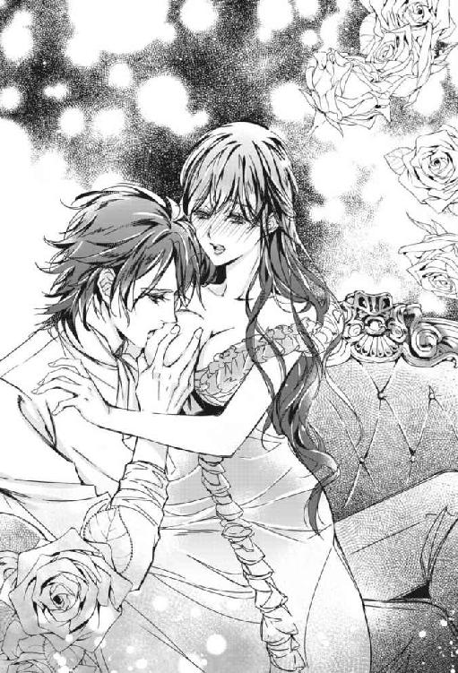
（今度は何をするの......お兄様......）
ちらり、とヴィアーナは兄の次の行動を確認した。彼の舌が尖った胸先に触れようとしている。
「あっ、ひぁあっ」
舌先が敏感な胸先を幾度も掠め、ヴィアーナの身体は再び反応した。
ハディールの愛撫は徐々に濃厚になり、やがて胸先は口に含まれた。
温かい感触と、胸先を転がす舌の動き。いまだかつて感じたことのない強烈な刺激にヴィアーナは、泣きながら兄の頭を押し返して抵抗した。
「あ、あぁあ、いやッ、ひぁあん......おに...さま......も、許して」
ハディールは胸先から唇を離したが、依然として舌は接触したまま、濡れた胸先を弄び続けている。淫らな光景。
「う、ふ......っ、うぅ、もう、やぁあッ」
ヴィアーナは頰を紅潮させ、泣きじゃくった。
「──さあ、お仕置きは終わりだ。寝室へ連れて行ってやる」
ハディールは憂鬱な声で言うと、興奮で息も絶え絶えとなった妹の衣服を正し、髪のほつれを直して抱き上げた。
ヴィアーナの行方不明騒動があった翌日の午後。
いつものように真紅のドレスをまとったヴィアーナは、昼食を終えると、新しい家庭教師を出迎えるために屋敷の前に出た。兄ハディールは朝早くに地上を脅かしに出掛けたので、今はいない。
前日の事件で家中を騒がせたヴィアーナは、当分は外出はすまい、勉学にいそしもうと胸に誓ったのだった。
「大魔導師ってどんな方なんでしょうね、お嬢様。俺、どきどきしてきました」
そうヴィアーナに語りかけたのは、彼女の隣に立つ馬丁の少年、キールだった。昨晩、身体中に塗り付けていた靴墨はすっかりきれいに落とされている。黒髪黒い瞳、愛嬌のある顔立ちに、赤のお仕着せを着ていた。家の人間が使用する気性の荒い炎の馬がこの少年には懐くので、数年前、奉公に来た初日から彼は仲間の使用人達に重宝がられていた。
「昨日のこと、まだ許したわけじゃないわよ、キール」
じっ、とヴィアーナはキールを横目で睨む。昨日、ヴィアーナは彼が書斎で兄に手打ちにされたと信じ込み、大泣きしてしまったのだ。それが死んだふりだったなんて。
「あれは旦那様に命令されて──」
「知らない」
つん、とヴィアーナはそっぽを向く。キールは弱り顔になった。
だが、本心から怒っているのではない。気の優しいキールはヴィアーナがつまらなそうにしていれば、許してもらおうと何か面白いことをしてくれる。最近ではヴィアーナがぼうっと外を眺めている窓辺で突然、愉快な人形劇が催されたこともあった。ヴィアーナはそれを期待した。
キールが哀しそうに溜息を吐くのを聞いてヴィアーナは内心しめしめ、と思った。そしてまだ客が訪れない屋敷の門を眺める。
（私も気になるわ。大魔導師がどんな方なのか......）
不安やら緊張やらで、ヴィアーナは落ち着いて待っていられず、そこら中を歩き回った。
新しい家庭教師、大魔導師ハリアドルは、兄ハディールが少年時代に学んだ寄宿学校、魔法学院の創設者であり、魔法王国ヴァール・ドゥナに古来より伝わる数多の魔術を研究し、数々の独自の魔術を編み出したという稀代の天才らしい。歳はまだ若いという。ハリアドル以降、世間の者が日常生活において用いる呪文は以前と比べて格段に短くなった。
（そんな凄い方が私の家庭教師になってくださるだなんて──私も少しは魔法が使えるようになるかも......）
淡い期待を胸に、ヴィアーナは家庭教師の到着を待った。
しばらくして、ヴァリドゥー家の門扉が開き、立派な黒塗りの二頭立ての馬車が敷地内へ入って来た。
「いらっしゃったわ！」
ヴィアーナとキール、そして使用人達が固唾を飲んで見守る中、馬車は屋敷の前に停まった。
御者が開けた扉から最初ににょっきりと出て来たのは、驚くほど高く結い上げられた髪だった。
次にその髪を天井にぶつけないように屈んでゆっくりと馬車の中から降りて来たその人物は、背丈も骨格も少々大柄なものの、非常に美しい貴婦人だった。三十代の半ばくらいだろうか。光の加減できらきらと輝く銀髪は、ピンク色のリボンや白い花で飾り付けられていた。内張りが入って膨らんだドレスは、髪のリボンと同じ襞の多いピンク色の生地に白いフリルや銀のレースで過度に装飾されていた。まるで舞踏会に赴くような出で立ちである。
（大魔導師ハリアドル様は女性だったのね！ 若くてお美しくて魔法の才能にも恵まれていらっしゃるなんて素敵......）
夢のように美しい銀色の貴婦人の登場に、一同はほうっと溜息を漏らした。
貴婦人は白絹にピンクの花柄模様をあしらい、銀のレースの縁飾りのついた扇を開いて口元を隠した。扇の上に覗いた貴婦人の、高飛車な眉と目尻が下がった目を縁取る長い睫毛は髪と同様、銀色であった。睫毛に隠れた瞳は紫色だ。
「お出迎えありがとう、皆さん」
貴婦人は少々低めの艶っぽい声で礼を述べると、スカートを摘んでいた方の手を離し、人差し指を立てて中空で軽く振りかざした。
突如、上空でぱんぱん、と音がしてヴィアーナが空を見上げると、青空に花火が打ち上がった。続いて色とりどりの花や紙吹雪が舞い降りて来る。目を凝らすと、それは上空で花籠を抱いた半透明の妖精達が舞い踊りながら撒いているものだった。
「お嬢様、す、凄いですね、大魔導師様って！ 今度里帰りした時の土産話になります！」
興奮したキールの声をヴィアーナは上の空で聞いた。
紙吹雪の中、銀色の貴婦人ハリアドルが、あっけに取られているヴィアーナの傍に歩み寄る。
「君がヴィアーナ嬢だね」
「あ、は、はい。先生、初めまして、ヴィアーナと申します」
ヴィアーナは貴婦人に慌ててお辞儀をした。
「ハディールから聞いているよ。彼の言っていた通り、可愛いお嬢さんだ」
ハリアドルはにっこりとしてよろしく、と手を差し出して握手を促す。
兄は外で自分のことを人に話しているのか。それも可愛い妹だと。握手しながらヴィアーナの心は弾んだ。
「母も兄の恩師である先生を表へ出てお出迎えしたいと申していましたが、身体が弱くて屋敷の外へ出ることができないのです。どうかお許しください」
ヴィアーナの母ヴィアネーラは話し方も健康な者と変わりなく、屋敷の中では自由に動き回るが、屋敷の外へは庭であろうとも一切出ることはなかった。ハディールによるとヴィアネーラは心の病らしい。
夜中に彼女がどんなにうなされていても、添い寝してあげることくらいしかできない自分を、やるせなく思うヴィアーナだった。
「そう──それは大変だね」
ハリアドルの瞳が微かに光った。一瞬の煌めきに膨大な知識と知性を垣間見て、ヴィアーナはたじろいだ。
貴婦人の神秘的な瞳を見てヴィアーナはふと思う。この瞳をどこかで見たような気がする。そう、モスリー。
（モスリーの瞳と同じだわ）
「母上のことは気にしないで、今日は君の家庭教師として来ているのだから。ところでハディールは？」
「兄はもうじき帰ると思います。さあ、中へお入りください」
ヴィアーナはハリアドルを屋敷に招き入れた。
屋敷の入口は、幸いにしてハリアドルが屈まずとも、高く結い上げた髪がつかえることなく入ることができた。
※ ※ ※
中で待っていたヴィアーナの母がハリアドルに挨拶し、早速ヴィアーナの部屋にてハリアドルの授業が開始されることとなった。
赤を基調としたヴィアーナの部屋は、壁にリボンや薔薇などが描かれた、大きな出窓のある明るい空間だ。
美声のハリアドルから古代語の授業を受けながらも、隣の寝室の書棚に置かれた『甘い果実』が、ヴィアーナは気になった。昨日は兄の手によって寝室に運ばれると、夜着に着替えてそのままぐっすり眠ってしまい、本は未読なのだ。幸い、兄はブックカバーで覆われた本の中身に気づかないまま、妹を運び終えると早々に部屋を去った。
（メロリアン、謎の青年アドル、そしてダトリール男爵はどうなったのかしら......）
そして、ヴィアーナは今まで頭の隅に追いやっていた昨日の兄との出来事を思い出す。
兄の唇がヴィアーナの首筋を這い、そして、胸に触れた。その生々しい感触を、ヴィアーナははっきりと憶えている。
兄の行為の行き着く先が知りたい。
（今度はいつ、お仕置きしてくださるの、お兄様......）
「ヴィアーナ、聞いてる？」
ハリアドルの声ではっとなり、ヴィアーナは手にしていたペンを取り落とした。先端に大きなピンクのファーがついているお気に入りの物だ。勉強に集中し過ぎるとファーが取れるのでほどほどにしなければならない。
「上の空だね。赤くなったり、青ざめたり──面白い子だ」
机に向かうヴィアーナの隣に座ったハリアドルは教科書を片手に嘆息した。別段、怒ってはいないようだ。彼女は再び本に目を落とす。
「うーん、何だっけこの単語......忘れちゃった」
どうやらハリアドルは単語の意味をヴィアーナに尋ねていたらしい。大魔導師でも魔法の呪文に使用する言葉を忘れたりすることがあるのか、とヴィアーナは意外に思った。
「古代語の辞書はあるかな？」
「隣の部屋に......持ってきますわ」
「いいから、君は次の詩を書き写していて。僕が持って来る」
立ち上がろうとしたヴィアーナを手で制しながらハリアドルは席を立った。広がったドレスを器用にさばきながら移動する。
ヴィアーナはハリアドルの言うことに少し引っ掛かりを覚えた。
（先生、ご自分のことを僕、っておっしゃった......？）
そういえば、女性にしては声が低く、結構響き渡る。背も女性にしては驚くほど高い。兄のハディール並みだ。踵の高い靴を履いているのかも知れないが、それにしても。
（もしかして......）
辞書を見つけたらしいハリアドルが戻って来る足音が聞こえた。
ヴィアーナが疑問をぶつけようとしたその時。
「これなあんだ」
にやにやしながらハリアドルが掲げたのは、昨日買った書店のブックカバーに覆われた『甘い果実』だった。
「そそ、それは！」
ヴィアーナは動揺して、椅子から転げ落ちそうになった。書棚の辞書類と版型が異なるから目立ったのか。
「僕もこれ、読んだよ」
「え、先生もですか？」
頰を染め、慌てふためいたヴィアーナの動きがぴたりと止まる。
「いいよねいいよね。かつてない過激描写がいいよね。僕はアドル派かな」
ハリアドルは再び席に着き、同士を見つけたとばかりにうきうきした様子で話し出した。
「続きは言わないでください！ まだ最初の方しか読んでいなくて......っ。あと、どうかこのことは母や兄には秘密に......っ！」
ヴィアーナは必死に懇願した。折角苦労して手に入れた本なのだ。
「言わないよ。厳しそうなお家だものね」
ほっと安心したヴィアーナだったが、ハリアドルの低い声に、再び先ほどの疑問が湧き起こる。
「あ、あの──こんなことを聞いてもいいのかどうか──間違いだったら大変失礼かもしれませんが......もしかして、先生はその......」
「僕？ れっきとした男だよ。それがどうかしたの？」
こんなにあっさりと肯定されるとは予想外だった。さらに追い討ちをかけるような、『彼』の切り返しに、ヴィアーナはもう、何が何だかわからなくなった。
「いえ......」
ならばなぜ女性の格好を、というさらなる疑問を彼にぶつける気はもうなくなった。
「男の方でもお読みになられるんですね、こういう本」
「露骨に※○％とか＄☆＃とか書かれていないのがいいんだ。僕の感性がそれらの卑猥な言葉を受けつけなくてね......読むのなら女性向けがいい」
「......はい？」
幾つかの単語がヴィアーナの耳を素通りした。異界の言葉が含まれていたようだ。
「失礼。今の発言は気にしないでくれ。ちなみに僕は両刀だ。これはハディールには秘密にしておいて欲しい」
膨らんだ胸を反らして言ったハリアドルの声は、威厳に満ちた男性のものだった。
「りょう......とう...？」
ハリアドルは辞書と『甘い果実』を机に置き、許容量を越えてうなだれたヴィアーナの顎をそっと捕らえて上を向かせて彼女の顔を覗きこんだ。
「女性も男性も等しく愛せるってこと──理解できるかな。時には愛されることもあるけど」
つまりは自由なのさ、と艶やかな声で囁かれ、ヴィアーナはその紫の瞳に吸い込まれそうになった。赤と青の間で妖しく揺れる炎のような色。不思議な魅力に満ちている。彼が男の格好をしていたら、おそらく平静ではいられない。
「可愛いね、真紅のお姫様。だけど手は出さないよ。ハディールは潔癖だからね。朝の鍛錬のあとの引き締まったあの子の身体......眩しかった......」
ハリアドルは机の上の辞書を引きながら、ふ、と遠い目をした。ヴィアーナは彼の発言の中に不穏当なものが含まれていることに気づかなかった。
「──お兄様は学院ではどんな生徒だったんですか？」
「優等生で、手に負えない問題児だったよ。彼と、私の甥のモスリーにはほとほと手を焼いた」
「モスリー？」
謎の青年の名が、意外な人物の口から発せられたので、ヴィアーナは耳を疑った。
「あ、知らない？ 『黒の魔導卿』って呼ばれてる、地底の魔法王国ヴァール・ドゥナに『空』を造り出した、今をときめく宮廷魔術師のこと。僕の姉の子なんだよね」
そうだ。ロンドデリルの双子が言っていた宮廷魔術師も、モスリーといった。もしかして青薔薇の屋敷のモスリーと宮廷魔術師のモスリーは同一人物なのだろうか。
「最近友達から聞きましたわ。空を造り出すなんて、凄いですわね」
ロンドデリルの双子は宮廷魔術師のモスリーのことを何と言っていただろうか。
「最初の頃はモスリーが手動で空の色を変化させていたらしいけど、今は自動幻灯機を作ってそれに魔力を抽入しているみたいだね。我が甥ながら本当に才能のある子だよ。君の兄上もだ。ヴァール・ドゥナの建国に貢献した大いなる真紅の鷹の後裔、生まれながらにして強大な魔力を持ったヴァリドゥー伯爵家の跡継ぎなのだから当然かもしれないけれどね。少年だった君の兄上と我が甥は、事あるごとに張り合っていた」
「お兄様が......宮廷魔術師様と張り合う？」
「大喧嘩したことも、ある」
「喧嘩を？」
いつも妹を叱る側である兄だが、ヴィアーナは思い出した。屋敷の執事が語るには、寄宿制の魔法学院に通う少年時代のハディールは、手のつけられない不良で、魔術の学院の貴公子達と徒党を組んでは街中を炎の馬で暴走していたというのだ。
その時、扉を叩く音がした。
「先生、その本隠してっ」
ヴィアーナが小声で叫ぶと、ハリアドルは素早く分厚い辞書に『甘い果実』を挟み込んだ。
「先生、遅くなりました」
扉を開けて現れたのはハディールだった。彼の清々しい顔が、ハリアドルの派手な装いを見て俄かに曇る。
ハリアドルは心持ち顎を上げ、澄まして椅子から立ち上がり、扉の前に佇む弟子の元へ歩み寄った。
「ご機嫌よう、どうだい、今日の僕は。花のようだろう？」
ハリアドルはハディールの前でくるりとあざとく回る。
「まさか、ありのままのお姿でお越しになられるとは......信じた私が愚かでした。妹が悪い影響を受けなければいいのですが」
「相変わらず偏見に満ちた弟子だ。この僕がじきじきに教えに来るなんて、あり得ないことなのに」
家庭教師を引き受ける代わりにお姫様抱っこしてくれる約束はどうなってる、と息継ぎなしにどすを効かせてハリアドルは弟子に迫った。
「妹の授業が終わりましたら、お約束通りにいたしましょう」
やった、と飛び跳ねるハリアドルとは対照的に、苦々しい面持ちでハディールは扉を閉めて去って行った。
ヴィアーナの授業が終わり、午後のお茶の時間になった。サンルームでヴィアネーラのお手製のフルーツケーキを食べながらヴィアーナとヴィアネーラ、ハディールとハリアドルの計四人が和やかな時間を過ごしていた。
甘い物は苦手なハディールであったが、母のケーキだけは口にするのだ。
「仕事に追われて、ゆったりとした時間を忘れていました。美味しいケーキをごちそうさまでした」
紅茶の入ったカップを手に、ハリアドルがテーブルを挟んだ向かい側にいるヴィアネーラに話しかける。息子が通った魔法学院の院長だが、全てを執事に任せていたので、ハリアドルについて詳細を知らないヴィアネーラだった。彼女はハリアドルが実は男性だと聞いても大して驚きはしなかった。
ヴィアーナの母は社交界を離れて長くなるが、ハディールの話によると、今なお真紅の貴婦人はお元気だろうかと、噂が人々の口に上るらしい。例の双子からもそんな話を聞いたヴィアーナは、美しい母に、少なからず劣等感を抱いていた。
（私が社交界に出た時、これがあのレディーの娘か、とがっかりされたら嫌だわ）
昨今、憂いの多いヴィアーナだった。
大輪の薔薇の横で自信を失っていく小さな赤い薔薇の感情を読み取ったのか、ハリアドルの隣でハディールは苦笑した。
「奥方が意外とお元気そうで良かった。ヴィアーナから心配なことを聞いていたものですから」
ハリアドルの発言に、ハディールが説明しようと口を開く。が、ヴィアネーラが遮った。
「ご心配をおかけしましたわね。平素は何ともないのですけれども、この屋敷から一歩出ようとするとわたくし、なぜだか胸が苦しくなってしまうんですの。なので、外には出ないようにしているんです」
「ほう、それは......不思議なご病気だ」
「屋敷から出さえしなければこの通り元気なので、あまり気にしておりません」
ヴィアネーラの声は明るかった。娘にはわかる。それは努めて明るく装ったものではない。屋敷の中にいれば、彼女は本当に元気なのだ。
「深刻な病でないのなら、良いのですが」
言ってハリアドルは視線を窓の方に向けた。窓の外には広大な真紅の庭が見える。改良された地面を覆う薔薇も、アーチに這わせた薔薇も赤なら、ルビーでできた水盤から湧き出る泉水も芳醇な香りを放つ赤いワインだった。
「空が明るくなったので、庭作りも面白くなりましたわ。何でも、宮廷魔術師様のお陰らしいですわね。前に新聞で読みました」
屋敷の外には出ないものの、造園はヴィアネーラが指揮していた。
「そうです。この空は魔法の空なのです、奥方。ヴァール・ドゥナが一日中闇の中にあった頃を忘れそうですね」
「本当に。暗闇に包まれていた頃は一日中、庭の木にランタンをたくさん吊るして、少しでも赤が美しく見えるように工夫していました。懐かしいですわ」
「──私も、昼にカンテラを持って恋人とピクニックしていたのが懐かしいです、奥方」
ハリアドルがにこやかに言ったその時、ヴィアネーラが手に取って受け皿から少し浮かせていたカップを取り落とした。和やかな空気を、けたたましい陶器の音が切り裂く。ヴィアネーラの顔は青ざめ、手は震えていた。
「どうかしましたか、奥方」
「ああ──いいえ」
ハディールが口を微かに動かして何かを唱えるのを、ハリアドルがちらりと横目で見やる。
青ざめたヴィアネーラの顔は、たちまち元の血色を取り戻した。
（お兄様、何か魔法を使ったのかしら）
しかし魔法が一切使えないヴィアーナには、ハディールの口の動きから何の呪文かを読み解くことはできない。
「あら、わたくし、どうしたのかしら」
ヴィアネーラは周りを見回しながら、手持ちぶさたな手で自身の赤い髪を撫でつけた。
「そういえば、宮廷魔術師様というのは、もしかして、うちの子と昔大喧嘩した子じゃありませんかしら？」
「──おっしゃる通りです、奥方。我が甥のモスリーです」
ハリアドルはうなずいた。
「まあ、先生の甥ご様でしたか。引きこもっていますので、なにぶん世情にうとくて──そうですの。お会いしたことはありませんが、宮廷魔術師になられたんですのね──ふたりがやんちゃを起こして決闘だとかで街の時計塔を壊してしまった時は、それはもうびっくりしましたわ、わたくし」
ハディールは会話を制止しようと身を乗り出す。妹には聞かれたくないようだ。
「私もびっくりしましたよ。時計塔が吹き飛んでしまって」
とハリアドル。
「そんなことが？」
ヴィアーナは驚きを隠せなかった。街の時計塔というと、中央街にあるあの壮麗な時計塔か。街の象徴だ。
「ヴィアーナ、あなたはまだ小さかったから」
ヴィアネーラはうっかり話してしまったとばかりに、口元に手を添えた。
（お兄様ったら、不良どころじゃないわ）
いやあ、懐かしい、とハリアドルは笑い、ハディールは渋い顔をした。
やがて楽しい時間は過ぎ、銀色の貴婦人は真紅の屋敷をあとにした。
※ ※ ※
ヴィアーナはその日学んだことの復習を終えると、夕食と入浴を済ませ夜着に着替えた。さあ、これからが自由な時間だ。
ヴィアーナは自分の部屋に戻り、入浴後の少し濡れた髪のまま、辞書に挟み込んだ例の本とクッキーの入った瓶を持って寝室へ行き、ベッドに寝そべって本を開いた。とうとうあの続きが読める。
主人公メロリアンはどちらの男を選ぶのか。
メロリアンは毎夜のごとくバルコニーから忍び込んで来るアドルをなし崩し的に受け入れているうちに、やがて彼への気持ちが募っていく。一方、政略結婚ではあるものの、誠実な愛を捧げてくれる婚約者、ダトリール男爵にも心を動かされる。
メロリアンとアドルの濡れ場にさしかかる度に、ヴィアーナは扉の外に誰かいないか気が気ではなかった。
きわどい挿絵に昨晩の兄とのことが重なった。
あの続きを、知りたい。
兄にまたお仕置きをしてください、などと言うのは変だ。けれど、うまい口実が見つからない。
考えあぐねているうちに、ヴィアーナの欲求は増し、頰は火照り、少し息が荒くなっていた。まるで身体の中で火が燃えているようだ。
（──お兄様の部屋へたどり着くまでに考えればいいわ）
えい、とヴィアーナはベッドから降りると、スリッパは履いたものの、ガウンも羽織らずに薄い夜着のまま部屋を出た。
家の者に悟られないようにそっと扉を閉め、薄暗い廊下に出たヴィアーナは、板張りの上に敷かれた赤い絨毯の上を、兄の寝室へ向かって歩き出した。少し肌寒い。廊下の途中、明かり取りの小窓から見上げた空には月が出ていた。
階段を上がると、ヴィアーナはやがて鷹の彫刻が施された重厚な扉の前にたどり着いた。ハディールの居室兼寝室である。
たどり着くまでにうまい口実が浮かばなかった。仕方がない。
扉をノックしようとして、ヴィアーナは躊躇する。引き返そうか。
「おに...さま......」
ヴィアーナはごく小さな声で呟いた。扉の向こうに届くはずなどないような声で。が、直後。
扉が開いた。中から出て来たハディールが妹の姿に目を見開く。
「ヴィアーナ？ どうした、そんな格好で」
ハディールはヴィアーナを招き入れた。
夜なので明かりを最小限にした、薄暗く温かいハディールの部屋では、大理石の暖炉の中で薪が燃えていた。生活に必要な調度の他は、壁中を覆っている棚しかない。棚の中には書物や薬品の瓶が並べられていた。ハディールが主に魔法の勉強をする部屋だ。続きに寝室がある。
「一体どうした、そんな格好で。ガウンくらい羽織れ。風邪をひくぞ」
ハディールは動揺しつつソファに腰掛けた。机の上に本と眼鏡が置かれているところを見ると、どうやら読書中であったらしい。彼は赤系統の厚手の落ち着いた色味のガウンを羽織っている。はだけた夜着から垣間見える兄の逞しい胸元に、ヴィアーナはどきりとした。
「まあ、そこに座れ」
向かいの席を勧められるが、ヴィアーナは自身の身体を抱き締めて首を横に振った。
「どうしたんだヴィアーナ。何か悩み事でもあるのか？」
案ずるような彼の声に、ヴィアーナの中で甘えた気持ちが頭をもたげる。兄はいつも私のことを心配してくれている。私の言うことならきっと聞いてくれるはずだ。
「もう小遣いがなくなったのか？」
あまり外出を許可されないヴィアーナは欲しい物があると、よくキールに買いにやらせていた。そして小遣いが底を突く度に、神妙な面持ちで兄の元を訪れるのが常だった。
兄は勘違いしている。いつものヴィアーナではないことくらい、見て判るだろうに。
「......を、して」
「何？ 声が小さいぞ」
ハディールは席を立ち、再びヴィアーナに近づく。ヴィアーナは彼から目を反らすために俯いた。兄の顔を直視すると、くじけそうだから。
「お兄様......お仕置き、して」
ぴたりとハディールが足を止める。数秒の沈黙の後、
「──お前は今日、ちゃんと勉強して、良い子だったじゃないか。どうして懲らしめる必要がある」
ハディールは笑いながら席へ戻ろうとした。しかしその動作は固い。
ヴィアーナはハディールのガウンを摑んで引き止めた。待ってお兄様。
「じゃあ......か、可愛がって。ヴィアーナを可愛がって」
咄嗟に出た言葉を兄の背にぶつける。
「え!?」
ハディールが素っ頓狂な声を上げて振り向いた。妹の発言が俄かには信じられないようだ。彼は自分の視線のはるか下にある妹の肩に手を置き、少し腰を屈めて覗き込んだ。
「眠れないの。身体が──変で」
泣きそうな声で兄に身体の異変を訴えた。ヴィアーナは自分を抱き締める手に力を込める。身体が熱い。
ヴィアーナの様子を見てやっと事態が飲み込めたのか、彼女の肩に置かれたハディールの手は微かに震えた。
ハディールはヴィアーナを抱き締めて彼女の髪をそっと撫でた。
「......まだ湿っているじゃないか」
兄の愛撫によってヴィアーナの真紅の髪は乾いていく。その間ヴィアーナはうっとりと兄の逞しく厚い胸に頰を預けていた。この場所は自分に絶対の安心をくれる。
次にハディールはヴィアーナの頰を両手で摑むと顔を上げさせた。彼女の無垢さを感じさせる柔和な眉の下、真紅の瞳は情欲に潤んでいる。白い歯を覗かせた、ふっくりとした半開きの唇は、まるでキスを求めているようだ。
妹の天性の魔性に触れて、ハディールは一瞬、数十年来の宿敵に出会ったような鬼気迫る表情になった。
ひっ、とヴィアーナは思わず声を上げる。
「お、お兄様......？」
何て怖ろしい顔をするのだろう。迷惑なのだろうか。それともヴィアーナのことが嫌いになったのだろうか。
可愛くなり過ぎだ、ハディールは呟いた後、ヴィアーナを再び強く抱き締めた。
「私のせいだ。昨日のお前から外の匂いがしたから、不安になって、つい......。兄として最後の一線を越えることはできないが、お前の身体の火照りを鎮めてやる」
そう言うと、ハディールは妹にキスをし、夜着を脱がせにかかった。ヴィアーナは夜着の下には薄い生地のドロワーズを履いているだけだ。ハディールが彼女を抱き寄せたまま、薄い夜着のボタンを片手で器用に外していくと、夜着はすとん、と彼女の腰のあたりまで落ちた。薄闇の中、先のつんと尖った丸いふたつの胸が露になる。
ハディールはヴィアーナの胸を両手で揉みながら、親指で胸先を刺激した。ヴィアーナの息が俄かに荒くなる。胸先が兄の手によって弾かれるたびに、痺れるような刺激を感じてヴィアーナは身体をびくんびくんとしならせた。その刺激から逃れたいという意思に反して、身体はもっと強い刺激を求めるように胸を突き上げる。ヴィアーナは己を恥ずかしく思った。
「あっ、あっ」
突き上げられた胸先にハディールは身を屈ませてキスすると、ここから先はベッドで、とヴィアーナの耳元に囁いた。彼もまた欲情していた。
ハディールは妹を抱き上げて続きの寝室へと運んだ。
照明は月明かりのみの寝室の中、ベッドの上でヴィアーナは兄の脚の間に座らされた。
胸先への愛撫が繰り返されると、次第にヴィアーナの声は蕩けていった。鼻にかかったような、甘ったれたような声。
ベッドのカーテンは柱に束ねられていた。少し離れたベッドの正面に据えつけられた姿見に映った自分の姿に、ヴィアーナは驚愕した。
夜着は腰のあたりまで落ちていて、兄がはだけた胸に触れ続けている。そしてそれを蕩けそうな表情で黙って受け入れている自分に、ヴィアーナは引き返せないところに来てしまったような気がした。
ひとしきり胸へ愛撫を施したあと、ハディールは妹の夜着の裾を捲り上げた。膝のあたりにフリルがあしらわれたドロワーズが現れる。
ハディールはドロワーズを下へとずらす。ヴィアーナは危機を感じて暴れた。
「駄目よっ、おなかが冷えるから」
ヴィアーナは兄の腕から逃れようとするが、欲情したハディールは妹を離さない。脚をじたばたさせる妹に舌打ちしつつ、下着の上から彼女の柔らかな部分に触れ、ぎゅっと力を込める。
何かが溢れ出るような感触に、ヴィアーナは激しい羞恥を覚えて暴れるのを止めた。
ハディールは嗜虐的な笑みを浮かべながら、次第に脱力する妹の下着を引き下ろした。秘所とそれを最低限隠すだけの柔らかな毛があらわになった。
「お月様に見せないで──お月様に──宮廷魔術師様に見られているみたい」
「それはいかんな」
しかし『様』は要らん、とハディールは不快げに指を鳴らして窓のカーテンを閉ざし、部屋の照明を調節した。
やがてヴィアーナの脚が広げられ、秘裂が開いた。ヴィアーナは、もはや鏡に映った自分の姿を見ることができなかった。
ハディールの指先がヴィアーナのそこに触れる。
「ひ、ぃあ」
誰にも触れさせたことのない場所に、今、兄が触れている。それだけでヴィアーナは気が遠くなりそうだった。
「こんなに感じて......何ていけない子なんだ、ヴィアーナ」
耳元で囁かれ、ヴィアーナの太腿がわなないた。触れられている箇所がますます敏感になる。
「あ、ああ......ごめな...さい...兄様」
「......ここはどうだ？」
さらにハディールの指が、芯となる部分を探り当てた瞬間、ヴィアーナの足先が跳ね上がった。
「あぁうッ」
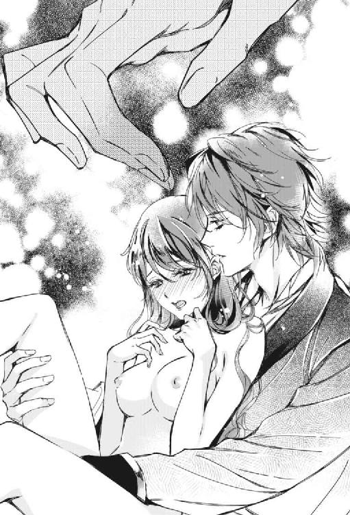
じゅん、と再び身体の奥処から恥ずかしいものが溢れる。ヴィアーナは身体を固くした。もう、これ以上の刺激には耐えられない。ヴィアーナの秘所は未知の刺激に蠢いた。
ヴィアーナは目に涙を溜めて訴えるように兄を仰ぎ見る。
「だ、駄目、このままじゃ、きっとお兄様のベッドを濡らしてしまう......っ」
ハディールは秀麗な眉を顰めながら、顔を歪ませてしゃくり上げ始めた妹を鎮めるように、彼女の頰に優しく口接けた。
「たくさん濡れていいんだ。私はお前が全身で感じて鳴く声が聞きたい。ただし声は静かにな」
ハディールは妹の花芯から下の方へと指を滑らせ、たどり着くとそこに指先を潜らせた。
「くふぅっ」
引き結ばれたヴィアーナの唇から苦しげな声が漏れる。ハディールの指はそれ以上奥へ進むことをやめ、ヴィアーナの奥処を小刻みに攻めると同時に最も敏感な部分を刺激した。強烈な刺激の嵐に、ヴィアーナは脚をばたつかせてもがきながら嬌声を上げた。シーツの上に蜜が撒き散らされる。
「あ、ぁああ、ふぁああっふッ」
突如、頭の中が白く弾けた。ヴィアーナは兄の腕の中で大きく背を仰け反らせた直後、意識を手放した。
ハディールはぐったりとしたヴィアーナをシーツの上に仰向けに寝かせると、彼女の乱れた夜着を直さずにしばらくその痴態を眺めた。
枕の上に豊かに散り広がる真紅の髪。汗の滲む白い額。眉根が切なげに寄せられ、閉じた目の端には涙の跡。嬌声を放った唇は微かに開いて舌を覗かせている。
「──こんなに美しく成長するなんてな......誰かに取られる前に本当は貫きたい、中射ししたい......だが、私はお前の兄......くそ、勃起が鎮まらん」
ハディールは体操座りをしてうなだれた。苦悶の後、彼はヴィアーナの夜着の胸のボタンを留めて、身だしなみを整えてやった。
第四章百色の迷夢
翌日。
ヴィアーナは、ロンドデリルの双子の家に遊びに行く予定だった。茶会を兼ねた面白い催しがあるからと、招待されているのだ。件の宮廷魔術師も同席する予定だという。
今朝のハディールは冷たく、取りつく島がなかった。無理な頼み事をしたので、しょうがない。
約束の時間までヴィアーナは部屋で『甘い果実』の続きを読むことにした。
机に向かって本を開けば、一見勉強している風に見えるだろう。突然母が訪れたとしても平気だ。
さて、『甘い果実』の主人公、メロリアンはダトリール男爵からとうとうプロポーズされ、数日以内に返事をしなければならないという局面に立たされた。
それを人づてに聞き及んだ謎の青年アドルは、ダトリール男爵の屋敷を訪れる。ふたりの初めての対面だ。緊迫した場面に、ヴィアーナは固唾を飲んだ。
アドルはメロリアンへの気持ちをダトリールに告げる。そしてもう、彼女とは身体の関係があるということも。
それを聞いたダトリール男爵は烈火の如く怒った。
（ちょ、ちょっと、それはまずいわよアドル。当たり前じゃない、だってダトリールはプロポーズの返事を待っている状態とはいえ、政略結婚なんだから、メロリアンは婚約者に決まっているも同然だもの）
ダトリール男爵は手袋をアドルに投げて決闘を申し込んだ。世間体のためではなく、男爵はメロリアンを本気で愛していたのだ。
やがて弁護士が呼ばれ、正式にふたりの男の決闘の日取りが取り決められたのだった。
ふたりが決闘するという話を聞いたメロリアンは苦悩した。いつの間にかメロリアンは、アドルだけでなく、男爵にも憐れみに近い愛情を抱くようになっていたのだ。
（ふたりの男を同時に愛する......）
ヴィアーナはぼんやりと思った。自分だって他家に嫁いでも、兄を引き続き愛し続けるだろう。しかしそれが、メロリアンの気持ちと同じものかどうかはわからない。
そして決闘の日。森の中で、魔法の杖を持ったふたりが対峙した。
いよいよふたりの男の間に立つ弁護士が決闘開始の合図をしたその時だった。
メロリアンが髪を振り乱して走って来た。ふたりとも、私のために戦うのはやめて、と叫びながら。
「『ふたりとも、私のために戦うのはやめて』......」
ヴィアーナは本に書いてある台詞を呟きながら鼻息を荒くした。何て羨ましい。自分もこんな台詞を一度でいいから言ってみたいものだ。
メロリアンは次に、ふたりの男の目の前で懐からナイフを取り出して自分の喉元に突きつけた。ふたりが殺しあうのなら、争いの元である私が死にます、と。
ここでヴィアーナは一昨日の夜の出来事を思い出した。書斎の引き出しの中で、ヴィアーナはペンを胸に突きつけて死ぬと言い、兄を脅した。もちろん冗談だが。
その時兄ハディールが引き出しの外で言っていた言葉。
──例の悪書の影響か？ 脅しには乗らん！
（お兄様......ひょっとして、この本を読んだのかしら......最後まで......）
兄ならこの程度の厚さの本は一時間もかからずに読めるはずだ。兄は本を読みながら何を思ったのか。
それよりも続きだ。メロリアンとふたりはどうなる。
呆然と立ち尽くすアドルとダトリール。が、しかし、一足先に我に返ったダトリールが隙を狙って魔法の杖から殺傷力のある光線を発射してアドルの心臓を狙い討つ。
（危ない、アドル！）
しかし、メロリアンが飛び出てアドルを庇い、メロリアンは背にダトリールの一撃を受けた。
（メロリアン......！）
驚くふたりの男の間で、メロリアンは致命傷を受けて倒れた。
これでいいの、これで。とメロリアンはふたりの男に告げて、息絶えたのだった。そして物語は幕を閉じる。
（噓......噓でしょう...？）
本を閉じながらヴィアーナは涙していた。
（悲劇だったわ......果実が甘かった代償かしら。でもメロリアン、貴女はきっとふたりの男の思い出の中で永遠に輝き続けると思うわ）
涙を拭いながらヴィアーナがふと窓の外を見ると、
『お嬢様そろそろお時間ですよ』
と書かれた色とりどりの風船が浮かんでいた。その中に『許してください』という短いメッセージが紛れている。涙にくれた顔の風船もある。
（もう、わかったわよ、キールったら）
ヴィアーナは肩を揺らしつつ、気持ちを切り替えて出かける仕度を始めた。
※ ※ ※
ロンドデリル邸はヴィアーナの屋敷の近くにあるが、ヴィアーナは今まで訪れたことがなかった。これまでは奔放で腰の軽い双子が一方的に遊びに来る形だったのだ。ちなみにハディールはロンドデリル男爵と公の場で交流がある。
ロンドデリル家の始祖は『百色の迷夢』と言われ、その詳細な姿や能力については一切公表されていない。他人を屋敷に招くことも滅多にないという、謎めいた名家だった。
双子の手紙にあった面白い催しとはどんなものだろう。ヴィアーナは期待に胸を膨らませつつ、真紅のドレスに兄から贈られたルビーのペンダントをつけ、手には同じく兄から贈られた扇子を持って馬車に乗り込んだ。
ヴィアーナは炎の馬が引くヴァリドゥー家の真紅の馬車の窓から、徐々に近づくロンドデリルの屋敷を見た。屋敷は全体が白くきらきらと輝き、波に洗われたように滑らかで、螺旋を描いている。
「不思議な形のお屋敷......渦巻の貝殻みたい」
門番に言って取り次いでもらうと、門が開かれた。門柱には白い板にロンドデリルの紋章、渦巻きに波線の螺鈿細工が虹色に輝いていた。
ヴィアーナの馬車が白く細かい砂の上に貝殻の散らばる敷地の中に入ると、正面玄関に停車している馬車がすでにあり、中から人が降りてくるのが見えた。
漆黒のマントを羽織り、すらりと背の高い黒髪の紳士の後姿に、ヴィアーナは見覚えがあった。じっと見ていると、紳士がヴィアーナの視線に気づいたように少し振り返る。
ぞっとするほど完璧な美しさを持つ青年。
「モスリー！」
ヴィアーナはつい声に出して叫んでいた。こんな偶然があるのか。
馬車から降りたヴィアーナは、玄関に迎えに出ていたユランとミランの歓待を受けた。目敏い彼女らはヴィアーナが手にした扇子に気づいて口々に褒めそやした。
だが、ヴィアーナは双子の挨拶よりも何よりも、先ほどから視界の端で微笑を浮かべて黙って紹介を待つ全身黒ずくめの青年、モスリーのことが気になり、胸の鼓動が高まるのを感じていた。
宮廷魔術師と、青薔薇の屋敷の謎の青年は同一人物だった。それだけでも衝撃だが、魔術の学院長ハリアドルの甥・モスリーは、兄ハディールと共に魔術の学院で学び、仲の良し悪しは別として、旧知の間柄だということになる。
「ヴィアーナ、紹介するわね。この方が宮廷魔術師を務められている、『黒の魔導卿』ことモスリー様よ。普段はお城の書庫からあまりお出にならないけれど、無理にお願いして来ていただいたの」
双子の姉ユランがいつもと違う淑やかな口調でヴィアーナにモスリーを紹介した。絹糸の長い巻き毛に負けぬ、透き通るような白い頰が紅潮しているのはやはり、モスリーの美貌ゆえだろう。
モスリーはヴィアーナに歩み寄った。
「滅多に公開しない珍しいお宝を公開されるというので、興味を持ちまして......初めまして、ヴィアーナ嬢」
モスリーは優雅な所作でヴィアーナの手を取り甲にキスした。ヴィアーナは紅い唇を微かに開く。
彼の手は、唇は、氷のように冷たかった。
「お兄様のことは魔術の学院時代から、よく存じ上げておりますよ」
当たり障りのないモスリーの挨拶に、ヴィアーナは少し落胆した。彼は目の前にいるのが先日会った彼女だと気がつかないようだ。名前も同じで、髪と目の色と少しばかり服装が違うだけだというのに。もしかして彼は目が悪いのだろうか。
「あとはロアーン子爵が来られるわ。あの方、空の色が明るくなってから、日中は猛烈な眠気に襲われているらしいから、少し遅れるかもって」
ミランが背伸びして門に馬車の気配がないのを見て言った。
ロアーン子爵とは蜂蜜色の髪と虹彩に猫の瞳の性質を持つことで有名な人物だ。
「猫目子爵の眠気は私のせいですね」
モスリーが申し訳なさそうに呟く。
やがてヴィアーナとモスリーは双子に誘われて屋敷の中へ入っていった。
※ ※ ※
ふたりが通されたのは、七色の紫陽花が咲き乱れる庭に面した部屋だった。ロンドデリル男爵夫人が使用人達を采配してお茶の用意をしているところだ。ロアーン子爵も遅れて到着し、ヴィアーナは彼らふたりとも挨拶を済ませた。双子の父親の男爵は不在だ。
「それでは改めまして、ようこそおいでくださいました、皆さん」
ロンドデリル夫人は一同が集まったところで、改めて挨拶をした。夫人はミランとユランがそのまま成熟したような、虹色の瞳に波打つ白い髪をした美しい貴婦人であった。豊満な身体を包む白いドレスには、虹色の貝殻のスパンコールが無数の煌めきを放ち、裾から銀糸のモールがたくさん伸びていた。
夫人はマントを脱ぎ今は白ブラウスに黒いベスト姿のモスリーに、熟女ならではの危険な流し目をくれたが、彼は朴念仁なのかまったくの無反応だった。ロアーン子爵は美形の同性をちらりと見て、面白くなさそうに鼻を鳴らした。
「お茶の葉が開くまでの間、皆様方に我が家の家宝をお見せしようと思います」
こちらへ、と夫人に誘われ、一行は部屋をあとにして屋敷の一階、吹き抜けのロビーに出る。漆喰の壁には様々な色の貝殻や海藻の化石が装飾的に埋め込まれていた。
「こちらのお屋敷は元は海の中だったのですか？」
開いているのかいないのか判らないほどの細い目で壁を見ていたロアーンが、夫人に冗談で尋ねる。
「ええ。海水に浸っていました。今はすっかり干上がってしまいましたけど」
やがて一行がたどり着いたのは、渦巻き模様が余すところなく彫刻された、少しばかり不気味な木製の扉の前だった。
「ここにお宝があるんですか、夫人」
ロアーン子爵がここへ来て興味を示したように縦長の瞳の目を見開く。
「ええ。我が家が『百色の迷夢』と呼ばれる所以はこの家宝にあります。皆さん、心の準備はできまして？」
夫人が畳んだ扇子を手の平でぴしりと鳴らすと、白いお仕着せを着た家の使用人達が人数分のカンテラを持って現れた。
「照明が必要とはどういうことです？ 扉の向こうは暗い森にでもなっているのですか？」
カンテラを受け取りながらモスリーが軽い口調で言うと、夫人が艶然と笑う。夫人は確実に彼に気がある、とヴィアーナは直感した。
「当たらずとも遠からず、ですわ、モスリー卿。この中は迷路になっておりますの。我が家の大いなる始祖が横たわった『遺骸』で作った物で、古くはこの屋敷全体に迷路が広がっておりました」
「ほう」
そこでモスリーの瞳が興味を示したように煌いた。それを見たロンドデリル夫人がほぅっと溜息を漏らす。
「魔導卿の瞳は紫の炎が燃えているようですわね、まるで──」
「あとで庭の花でも届けさせますよ。夫婦生活のスパイスになるといいのですが」
「んまっ、わたくしが欲求不満だとでもおっしゃるの？」
「下世話な勘繰りでもないでしょう」
「優しい方。さて皆さん、迷路には我が家の始祖が海の底で見た数十億年の夢が詰まっており、魔法の領域であるため道順が複雑になっております。かつて、我が屋敷に無断で入った者でこの迷路に迷い込み、正気のままで出て来られた者はひとりとしていなかったそうです。今は規模を縮小していますが、まだ魔法の領域は存在しております。何が待ち受けているかはお楽しみ」
じゃあ私達が、とミランとユランが先頭切って扉を開ける。中には暗がりが広がっていた。
「足元にはくれぐれもお気をつけあそばして」
夫人は扉を開け放って一行を促した。
それではお先に、と双子に続いてロアーン、次にヴィアーナ、モスリーの順で中へ入っていった。
「では皆さん、お茶の用意をしてお待ちしておりますわね。無事に帰ってらして」
全員が中へ入ると、夫人は扉を閉めた。
暗がりの中、優しいオレンジ色の光を放つカンテラを手に、ヴィアーナは迷路を進んだ。
ユランとミランの姿は早々に見えなくなってしまった。数歩先を行く猫目子爵の蜂蜜色の髪が辛うじて見えている。ふいに彼は立ち止まって丸い背をしゃきっと伸ばすと、カンテラの明かりを消した。
「ロアーン様、どうされました？ それじゃ見えないのじゃありませんか？」
ヴィアーナが声を掛けると、ロアーンは振り向いた。
「暗くても見えるので大丈夫です。何だか急に元気になってきました。今まで寝ていたみたいです」
お前のせいだぞ宮廷魔術師、とロアーンはヴィアーナの後ろを歩くモスリーに恨み言を言った。
「夜行性の方には大変申し訳なく思っています。当初、一定期間だけ行うつもりでいたのですが、陛下が変化する空をいたくお気に召され、継続せよと仰せられまして」
「それなら仕方あるまい」
淀みのない言い訳に、ロアーンは肩を落として再びヴィアーナ達の先を歩き出した。
「今は機械で空の色を変えていると聞きましたけど？」
ヴィアーナは昨日ハリアドルから聞いた言葉を思い出してモスリーに訊いた。
「ええ、面倒なので幻灯機を作りまして。それに私の魔力を抽入しているんです」
モスリーはやや声を低めて言いながら、ヴィアーナの真横に並んだ。ロアーンの姿はもう見えなくなっていた。
「モスリー様......」
ヴィアーナはモスリーの横顔に目を向ける。やはり、気づかないのだろうか。こんなに素敵な紳士にまた会えるのだと知っていたら、最初から私はヴァリドゥー家のヴィアーナですと自己紹介すれば良かった。そうすれば、初めて会った娘として一から会話を始める必要もなかったのに。
ヴィアーナが意気消沈した矢先。
「様をつけるのはよして欲しいですね。私もヴィアーナと呼びたいと言ったはずです」
囁くようなモスリーの声に、ヴィアーナの顔は、ぱっと輝いた。
「やっぱり、気づいていたのね」
「目と髪の色が変わっただけで別人と認識するような特異な目は持っていません。会いたかったですよ、また会える予感はしていましたけど、こんなにすぐ機会が訪れるとは思いませんでした」
闇に溶けるようなしっとりとした声だった。
モスリーはヴィアーナの目線のはるか上から優しい眼差しを注いだ。
暗闇の中、ヴィアーナとモスリーが辺りに注意を払いながら歩いていたその時、ふいにユランとミランのはしゃぐ声がして、ヴィアーナは声のする方にカンテラをかざし、注意を向ける。すると双子が見えない階段を駆け上がっていくのが見えた。
「双子のお嬢さん方、ガラスの階段で下着が丸見えですよ」
モスリーがカンテラを掲げて指摘するが、彼女らには聞こえていない様子である。双子の姿はすぐに消えた。
「──おや、漆喰の壁がここでガラスに切り替わっている。鏡面だ」
見ると、壁にはそこに触れるモスリーの白く繊細な手が映し出されていた。
「通路も狭くなってるわ」
人がひとりがやっと入れるほどの幅の通路は、壁も天井も鏡でできていた。壁同士が合わせ鏡となり、空間がまるで無限に続いているような錯覚を起こさせる。カンテラを手にしたヴィアーナとモスリーが鏡と同じ数だけいた。
「まあ、面白い」
ヴィアーナが片方の鏡を見ていると、突如、鏡の奥から何かが飛び出して来た。
「きゃっ！」
突然飛び出して来たものに驚いて、ヴィアーナは危うく尻餅をつきそうになった。咄嗟にモスリーが腕を伸ばし支える。
それは真紅の長い髪をした幼い少女だった。こんなに暗いのにカンテラも持っていない。髪と同じ色のドレスを身につけた少女は、目の前に立つふたりの存在に気づくことなく駆け足で通路を横切ると、出てきた側とは反対の鏡の向こうに駆け去って行った。
あっと言う間の出来事で、しかも手元の照明だけが頼りの暗がりだ。ヴィアーナは少女の顔もよく確認できなかった。
「だ、誰だったの？」
「もう『百色の迷夢』といわれる魔の領域の中にいるということなのでしょう」
淡々と言うモスリーの側の鏡の中で、ぶくぶく、と水の泡が浮き上がった。
ヴィアーナが目を向けると、いつの間にか鏡が水槽の窓ガラスになって、吸盤のついた蛸の足らしきものが張りついていた。大きい。一本の幅は人の腕ほどはある。
「い......いったい？」
恐怖を感じてヴィアーナは壁からふらふらと離れた。こんな物が壁から飛び出して来てはたまらない。
その時だった。再びヴィアーナの目の前を大きな影が横切った。口を大きく開けて、牙を剝き出しにしたとかげが、完全に捕食の体勢を取っている。
「きゃぁああっ！」
悲鳴を上げながら、ヴィアーナはモスリーの懐へ飛び込んだ。彼は躊躇なく彼女を抱きとめた。
（何が面白い催しよっ、騙したわね双子っ！）
震えながら心の中で毒づいていると、モスリーの大人びた香水の香りが鼻腔を突いた。
「さっきのは......海に住むとかげですね。何かの天敵だったような......とりあえず先に進みましょう」
「でも、また変なのが出て来たら」
これ以上の怖ろしい展開には耐えられない。もうすでに足が竦んでいる。ヴィアーナは、この空間を早く出たくてたまらなくなっていた。
「その時は私が何とかしますから」
そう。今、ヴィアーナの目の前にいるのは、宮廷に仕える魔術師なのだ。魔法王国ヴァール・ドゥナの国王が認めた超一流の魔術師ということだ。王を守れるほどの確かな魔力を持っているはずだ。
「貴方と一緒でよかったわ」
ヴィアーナが彼の腕の中で安堵の吐息を漏らすと、モスリーは笑みを深くしながら、ヴィアーナの髪にそっと触れてきた。
ヴィアーナは慌ててモスリーの懐から飛び退く。どさくさに紛れて、ヴァリドゥー家の令嬢に何をするのだ、この男は。
モスリーは残念そうな面持ちで、所在のなくなった手を引っ込めた。しかし、この場にふたりだけだからなのか、少しも怯んだ態度は見せない。
「触らないで。私に触っていいのは、お兄様だけよ」
肩をいからせたヴィアーナの頑なな台詞に、モスリーは一瞬ぽかんとした顔をし、やがて肩を竦めた。
「お兄様ですか......」
ヴィアーナは飛び退った隙に乱れた髪を整えた。モスリーは見れば見るほど素敵な殿方ではあるが、唐突な展開を受け入れる心の準備ができていない。
ふたりは一定の距離を保ちつつ、さらに迷路の奥へと進んだ。
「ねえ貴方、お兄様と一緒に魔法学院で学んだのよね？」
ヴィアーナは昨日、魔導師ハリアドルを交えてお茶をしていた時に話題に上った兄とモスリーの学生時代のことを思い出しながら言った。
「ええ。学院内で、家柄と存在感において右に出る者なしの『真紅の貴公子』として君臨されていた兄君と比べたら、私ははるかに地味でしたから、親しくすることはありませんでしたけど」
大喧嘩したと聞いたヴィアーナには、モスリーの言葉がそらぞらしく聞こえた。
兄の性格は知悉しているヴィアーナだ。モスリーが本当におとなしく、何もかもぱっとしない地味な人物であれば、その存在にすら気づかないだろう。才能に溢れ、絶世の美貌のモスリーは、兄が意識するに足りうる人物だ。
歩いているうちに、ヴィアーナは前方に、そこだけ明るくなっている少し開けた場所を発見した。葡萄棚とベンチが用意されている。
驚きつつもヴィアーナは駆け足でそこへ向かった。ドレス姿の女性三人がやっと座れるくらいの小さな土地に緑の芝生が生えている。青々とした葉に紛れて、たわわに実をつけた葡萄が幾つも垂れ下がっていた。
ヴィアーナはベンチに腰掛け、横にカンテラと扇子を置いた。追いついたモスリーもその隣へ座る。
ヴィアーナが見上げると、葡萄の蔓や葉の隙間から青空が見えた。白いふわふわした雲が流れている。
「窓もないのに貴方が造ったのと同じ空が見えるわ。そういえばモスリーは、どうして魔法の空を造ろうと思ったの？」
「子供の頃、事情があって地上で暮らしていた時期がありまして。その頃に見た空の色彩が素晴らしかったものですから、暗闇の国であるヴァール・ドゥナで再現してみたいと思ったのです」
「地上で......地上って、人間達のいるところよね？」
ヴィアーナはまだ地上へは行ったことがなかった。兄ハディールは魔法王国ヴァール・ドゥナの存在を知らしめるため、日々地上へ出ては人間達の住む街や村への破壊行為を繰り返している。その凄まじい破壊ぶりに国王から先日、勲章を授与されたほどであるが、ヴァール・ドゥナの大多数の民は地上へ出ることはできない。地上をあまねく照らす太陽の光が強烈過ぎて、魔力が弱い者がその光を浴びようものなら、一瞬にしてその身が溶けてしまうからだ。
そのような怖ろしい光源のある地上世界で暮らしていたというモスリーは、やはり尋常ではない魔力の持ち主なのだろう。紫の瞳は強大な魔力を持つ証だという。しかも、あの強い力の持ち主ハリアドルは彼の叔父だ。
「ええ。かつて母は不義の子を身籠ってしまい、身の置き所がなくなって、家を出て地上へ逃れたものですから」
不義の子、と聞いて、ヴィアーナの身体に緊張が走った。よくそんなことを知り合ったばかりの者に話せるものだ。
「......不義の子って......」
「かく言う私です」
モスリーの口調はあくまで淡々としていて変わらず、柔らかな微笑を浮かべている。
「もしかして......ハリアドル様。あの人は......？」
「ああ、貴女の家庭教師ではありません。奇抜な人ですので、会った時はびっくりしませんでしたか？」
「素敵な方だわ。まだ一度しか授業を受けていないけれども。あの、今のこと、誰にも言わないわ」
微妙な空気を払拭するために、ヴィアーナはベンチから立ち上がり、ぶら下がっている葡萄をひと房手に取ろうとした。しかし、あと少しのところで葡萄に手が届かない。
ふいにヴィアーナの背後で気配がした。モスリーが代わりに葡萄をもいでくれている。モスリーに後ろから包まれているような体勢に、ヴィアーナはどきりとした。
モスリーから手渡された葡萄はとてもみずみずしかった。
「ありがとう」
ひと粒、口に含む。嚙み締めると甘い果汁が口の中いっぱいに広がった。
「とっても甘いわ」
「昔はふたりとも手が届かなくて、悔し紛れにどうせあれは酸っぱいのだと言い合いましたっけ」
「そうだったわね。貴方はとても背の高い子だったけど、それでも......」
そこでヴィアーナは笑いながら自分が言った言葉にはっとする。
「──私、今、何か言った？」
モスリーは沈黙したまま、ヴィアーナをじっと見つめた。やがて、口を開く。
「──やはり貴女はエリンだ」
「それは、貴方のカラスの名でしょ？ 初恋の人の名前みたいだったけど」
「憶えていないのですか？」
「何を言っているの？ 私、貴方と会ったのは一昨日が初めてよ」
「哀しいですね。やっと再び会えたというのに、何もかも忘れられているとは」
モスリーは少し切なそうな顔をした。表情に乏しい彼なので、わずかな変化ではあったが。
モスリーはヴィアーナの背を軽く押して正面を見るように促した。いつの間にか鏡の壁が出現していて、そこにはふたりの姿が映し出されていた。
しかし、鏡の中のヴィアーナの髪は真紅ではなく金色をしていた。瞳も緑で、キールに魔法をかけてもらった時の姿だ。
「これが本当の貴女だ」
「いいえ、違うわ」
ヴィアーナはモスリーの方に向き直ってきっと彼を睨む。
「──貴方の魔法ね？ 私はヴァリドゥー家のヴィアーナよ。からかうのはよして！」
ヴィアーナは強い口調で言い放った。赤い髪を勝手に変えられるのには我慢がならない。
「心配は無用です。鏡に映ったのは幻影。貴女の髪は先ほどから変わらずにヴァリドゥーの真紅だ」
モスリーはまだ怒りの収まらない様子のヴィアーナの、胸元で光るルビーのペンダントに目をとめて言う。
「きれいな首飾りですね」
「お兄様からいただいたの」
ヴィアーナはつんとして答えた。
「さっきからお兄様、お兄様。少々不快になってきました」
眉間を寄せ、不機嫌そうにモスリーは言った。直後。
モスリーはヴィアーナを抱き寄せて髪をひき摑むと、顔を上げさせてその唇を強引に奪った。
「あっ」
ヴィアーナは驚きに目を瞠る。その口づけは口の中へ舌が入り込んで来る、深いものだった。
「あぁ......うっ」
（お兄様っ、ハディールお兄様っ！）
心の中でヴィアーナは兄に助けを求める。が、兄は今ここにいない。どうすれば。ヴィアーナは咄嗟に思いついて口の中に侵入する彼の舌を思い切り嚙んだ。
微かな呻き声と共にモスリーの唇が離れる。
「可愛い唇から、甘い葡萄と血の味がしました」
モスリーは口の端を指先で拭いつつ、ヴィアーナを睨みつけ、少々恨みがましい口調で言った。
「お兄様に、言いつけてやる......」
ヴィアーナの息はまだ荒かった。手の早い男だ。いや、最初に会った時から、危険な香りはしていた。
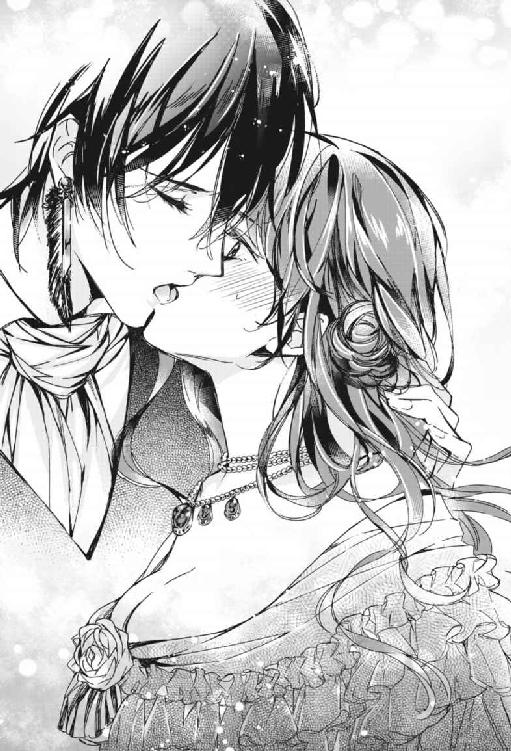
「どうぞお好きに。ですが、いい年をしてまだ兄離れできない甘ったれなのですか？ 貴女は」
ヴィアーナを腕の中に捕らえたままモスリーは言った。彼に冷たく厳しい眼差しを注がれ続けた温室育ちのヴィアーナの瞳は、じわりじわりと潤んで揺れ始めた。あと少しでも意地悪な言葉を吐かれようものなら、悔しいがたちまち涙の海が決壊してしまいそうだ。
「言い過ぎました」
モスリーは謝って、ヴィアーナを解放した。
「けれど、ついでなのでひとつだけ。家族に無断で勝手に出歩くのはおやめなさい。見ず知らずの者に誘われて屋敷に入るような世間知らずの貴女だ。危険過ぎます」
「そんなこと......貴女に言われなくても......うぅっ」
とうとうヴィアーナの瞳から、ぽろり、と涙が零れ落ちた。悔しいけれど、反論できない。断りもなく唇を奪ったくせに。
モスリーは、顔をくしゃっと歪め本格的に泣き始めたヴィアーナから目を背けて懐からハンカチを取り出して手渡す。が、彼女はぴしっとそれを払い除けた。
「そうでした。貴女、意外に癇癪持ちでしたよね。折角作った花輪も打ち捨てられた記憶があります」
モスリーは、溜息を吐きながら芝生の上に落ちたハンカチを拾い上げた。
「違うって言ってるでしょ！ 私は貴方の恋人なんかじゃないわ」
次から次へと零れる涙をヴィアーナは手で拭う。化粧が崩れるかもしれない。意地を張らずにハンカチを受け取ればよかった。
「迷路を出るまでに泣き止まないと、みっともないですよ」
「わかってるわよ。ふぇ、え」
ヴィアーナは泣きながらベンチの上に置いた扇子とカンテラを手にした。
「まあその葡萄でも食べて、落ち着いてください。と言っても、扇子にカンテラに葡萄と手がいっぱいですね......私が持ちましょう」
「結構よ！」
「紳士ですから」
モスリーはヴィアーナからカンテラを奪い、ふたりは再び歩き始めた。
途中、きらきらと光る石が敷き詰められた場所や、壁や天井の模様が万華鏡のように回転する場所、色とりどりの風船がいっぱいの場所を通り、ヴィアーナはその辺りでようやく泣き止んだ。
「この家の始祖の正体がわかりました」
モスリーは弾んだ声で言った。
迷路の出口である別の扉から全員が抜け出ると、一同が迷路へ入る前に淹れられた紅茶の葉がようやく開いたところだった。
第五章禁断の呪法
モスリーはロンドデリルの屋敷をあとにすると、王城に向かって馬車を走らせた。
夕暮れ時に城に着くと敷地の隅に立つ高い塔の階段を上がり、幾層もある塔の最上階にたどり着いたモスリーは、重い扉を開けた。そこには草原と青空がどこまでも広がっていた。
モスリーはさらに青い草の上を、行く手のずっと先にぽつんと佇む小屋へ向けて進む。ここは国王から下賜された彼だけの場所だった。屋敷はひとりでは広すぎるので、普段はここで寝泊りをしている、ほとんど家のようなものだった。
草原は、ところどころ赤茶色の地面が剝き出しになっている。モスリーが魔法陣の研究で、魔法陣からヴァール・ドゥナよりももっと深い場所、深淵の魔物を召喚しては、戦って封じ込めた跡だ。
小屋の側にはレンズのついた箱型の機械が置かれ、その機械から放射線状に光が拡がって空に模様を映し出していた。モスリーが造った、魔法を用いた幻灯機の試作品だ。ヴァール・ドゥナ全体の空の色を彩る大掛かりな幻灯機は、この塔の屋上に設置されている。
モスリーは簡素な小屋の中へ入る。内部は彼専用の書斎となっていた。小屋の中は外から見るよりも広く、重々しい雰囲気が漂っている。すべての壁は天井に至るまで書棚で覆われ、書物で埋め尽くされていた。中二階があり、中央には飴色に輝く品の良いライティングデスクが置かれていた。
モスリーは椅子を引いてどかっと腰掛ける。
「お帰りなさいませ、ご主人様」
モスリーの使い魔であるカラスのエリンが、どこからともなく飛んで来て主人の肩の上に止まる。
「疲れました。滅多に外出などしないものですから」
モスリーはエリンが乗っていない方の肩を回しながら、中空から日記帳を出現させて机の上で開くと、机に置いてあったペンを取った。
モスリーは日記に今日の出来事を書き記す。ロンドデリル男爵夫人の茶会に招かれたこと、奇妙な外観をした屋敷の中で見た、魔法の迷路の詳細。
迷路の中で海とかげの怖ろしげな幻影を見たこと。かの家の始祖が海の底で見た恐怖の記憶ではないだろうか、と好奇心に満ちた推測も書き添えた。
モスリーは驚異的な速さでペンを進める。モスリーの字は達筆すぎて、他人にはほとんど読めない。ヴィアーナのことを書こうとして、しかし彼女の名の綴りを間違えてしまったので、書き損じた文字を宙に浮かせて吹き飛ばす。
ヴィアーナ──ヴァリドゥー家の真紅の姫君。彼女は幼き日の私の初恋の少女、エリンに違いない。
モスリーはペンを置き、背伸びをした。
塔の最上階の幻灯機を点検しに行こうか。それとも、もう眠るべきか。
そんな思いをカラスの声がかき乱す。
「ヴィアーナって、数日前に来たあの娘ですか？ ヴァリドゥー家ってどういうこと？」
主人の肩の上でカラスのエリンが騒ぎ立てる。
モスリーは秀麗な眉を寄せ、気難しい顔で机に頰杖をついた。城を彩る黄金や宝石も、全て色褪せるほどの美貌だった。これまでに城に仕える女官から舞踏会に訪れた貴族の夫人や令嬢まで、いったいどれだけの人が彼の美貌に魅せられたのか、勉学に勤しむ彼は知る由もない。
モスリーは茶会で再会した娘の姿を頭に思い描く。
ちょっと睨んだだけで真紅の瞳をすぐに潤ませるくせに、気だけは強い娘だった。小さな唇がお兄様、お兄様と愛らしく動く。
ふん、と不快げにモスリーは鼻を鳴らした。
（少年時代に地上で暮らしていた頃、一緒に遊んでいたエリンに違いないというのに、私のことはすっかり忘れて......）
ヴィアーナは記憶喪失なのか、やはり別人、他人の空似なのか。
いや、彼女がエリンとは別人ならば、迷路で共有した葡萄棚での思い出はどうなる。
やはり彼女はエリンだ。間違いない。どういった経緯で今はヴァリドゥー家の令嬢となっているのか知らないが。
（いや、ひょっとすると、彼女はもともとヴァール・ドゥナの住人だったのかもしれない。私のように何か事情があって地上へ来ていたとも考えられる。できることなら、私のことを思い出させたいものだ。何といっても彼女は初恋の人なのだから......）
初恋以来、女性には全く興味を失っていたモスリーだった。過去、執拗に迫られて仕方なく女を抱いたことは幾度もあるので童貞ではない。モスリーは技巧など何ひとつ用いず、生理現象のみでも女を抱いたこともある。世間には、仰向けになっていれば上に乗ってきて勝手に踊り出す女もいるのだ。
（私が真実の愛を捧げる者はこの世にひとりでいい......エリンだけで......）
ヴィアーナがエリン。ならばヴィアーナは、愛。
しかし彼女がヴァール・ドゥナの名門中の名門貴族、ヴァリドゥー伯爵家の娘にして、魔法学院でその名を轟かせた真紅の貴公子ハディールの妹とあっては、一介の宮廷魔術師でしかないモスリーにとっては高嶺の花。彼女を得るのは容易ではない。
（しまった。あんな妹がいると知っていたら、奴とはもう少し友好的に接しておくべきだった）
モスリーは指を鳴らして日記帳とペンを消失させ、椅子から立ち上がった。
「どちらへ？ ご主人様」
「今日は屋敷に帰ります。馬車の用意を」
「えっ、お帰りになられるんですか？ めっずらしい」
カラスの問いに答えず、モスリーは書斎をあとにした。
※ ※ ※
モスリーは街中に所有する自身の屋敷の前に到着した。夜は更けていた。
青薔薇の紋章が掲げられた門を、モスリーは指を鳴らして開け、馬車を中へ進めさせる。門番はいない。
馬車は、石像や古代遺跡の柱のようなオブジェが点在する前庭を通過していく。途中、仕掛け噴水の出迎えがあった。モスリーは窓越しに何の感慨もなくそれを見つめる。
やがて馬車は建物の前へ到着し、モスリーは馬車から降りた。肩にはカラスのエリンが乗っている。
ふとモスリーは前庭を振り返る。
「オブジェが増えていたような」
モスリーは近くにある苦悶の表情を浮かべた男の石像に目をやる。数日前にはこのような石像などなかった。
「侵入者とは珍しいことだ。エリン、招かれざる客には相応のもてなしを」
「了解。くちばしで粉々に砕いちゃいましょうねっ」
肩に乗っていたエリンが羽をはためかせて飛び立つと、モスリーはマントを翻して屋敷の中へと入っていった。
黒いマントを脱いだモスリーは、ふとベストに貼りついた一筋の長い髪に気づき、それを摘み上げた。ヴィアーナのものだ。彼女を抱き締めた時に貼りついたのだろう。
髪の毛は照明に透かしても赤かった。
（やはり魔法の匂いがする......）
最初にヴィアーナと出会った時、モスリーは彼女にふたつの魔法がかけられていることにすぐに気づいた。素人がかけたような魔法で変わった金色の髪の下に、逆に強力な魔法が施された赤い髪、赤の下に......本当の色がある、と。
ひとつは宮廷魔術師の彼にとっては話にならないほどお粗末なものだったが、もうひとつはモスリーでも気を抜いていたら看破できないくらい強力なものだった。
「この魔法を解くと初恋のエリンの金色の髪が現れるのか......魔法を解くのは、私でも時間がかかりそうだ」
とりあえずモスリーはヴィアーナの髪を丁寧に洗面台の上に置いてから衣服を脱いだ。
壁のタイルがあちこちひび割れた浴室の浴槽で、モスリーは長い脚を伸ばし、冷水のシャワーを浴びながら天井を見上げた。
真紅の貴公子、ヴァリドゥー伯爵家のハディール。文武両道で学院を我が物顔で闊歩していた派手な男。とある事件がきかっけで、今でも社交の場では衝突を回避するために、互いに極力顔を合わせないようにしている相手。
ヴィアーナは彼の妹......。
しかし彼女は、初恋のエリンに違いない。
エリン。残酷な思い出と共にある、永遠に色褪せない初恋の少女。
かつて、魔法王国国王の隠し子であったモスリーは、少年時代を人間の棲む地上の森の中で母親とふたりきりで暮らしていた。
モスリーはある日、森に迷い込んだ人間の少女と出会った。それがエリンだった。陽の光に優しく照り輝く、長く淡い金髪に、芝生と同じ緑色の瞳の少女だった。ふたりはすぐに仲良くなった。
エリンが笑えばモスリーの心は弾み、冷たくされれば切なくなった。
（私が素直な心で人と触れ合ったのは、あの少女が最初で最後だ......）
エリンと仲良く遊ぶうち、モスリーは森の外の世界へ興味を抱き始めた。森の外には人間たちがいる。そこにはエリンの住む村があるのだ。
モスリーは好奇心を抑えきれず、エリンへの手土産にと母からもらった青い薔薇をたずさえて森の外へ出てしまった。
妖しいものをたずさえている少年は、村人たちから魔物だと怪しまれ、モスリー親子は人間から襲撃を受けることになった。
あの日以来、モスリーの心は凍ってしまった。森から出さえしなければ、母とエリンとのささやかな幸せはずっと続いていたのかもしれない。
その時まで魔界の住人でありながら魔法を行使できないでいたモスリーだったが、人間の襲撃によって自分の血に目覚めた。
それをきっかけに、モスリーの体の中に眠る大いなる魔力が発動したのだ。
村はおろか村人は全て、石となった。暴走した魔力はモスリーの母までも石に変えてしまった。
その後エリンの姿を探したが見当たらなかった。全てを石にしてしまったので、モスリーはエリンも石化してしまったに違いないと哀しみにくれた。
魔法王国ヴァール・ドゥナへ通じる門を呼び寄せ、モスリーは魔術の学院の学院長を務める叔父、ハリアドルに出会い、魔術の学院でひたすら勉学に励み、宮廷魔術師に就任した。
宮廷魔術師として名声を得ても、どこか空しさを感じていたモスリーだったが、エリンかもしれない彼女、ヴィアーナとの再会に活力を得た。
ヴィアーナという名のエリン。彼女に自分のことを思い出させたい。手に入れたい。結婚をするなら彼女だ。
ふいに、先ほど前庭で見た石膏像がモスリーの脳裏をよぎる。
モスリーは上機嫌で浴槽から上がった。
※ ※ ※
浴室から出てガウンを羽織ったモスリーは、濡れた髪もそのままに、カラスのエリンに石膏の粉末と水の入った器、そして台座を用意するように指示した。
命じた物が用意されると、モスリーはカラスのエリンを追い出し、先日ヴィアーナを招き入れた大理石の暖炉のある絢爛な応接室で作業に取りかかった。
ヴィアーナの体型は今日、迷路の中で彼女を抱き締めた時に触れたのではっきりと記憶している。
シャンデリアの薄明かりの下、モスリーは石膏で床を汚しながら愛しいヴィアーナの顔を、ごくゆるやかな波のように流れる髪を、首筋を、肩を正確に形作っていった。魔法は使わず、真心を込めて。石膏の中には彼女の一筋の髪の毛が練り込まれている。
赤い髪の毛の魔法を解くと、金髪になった。モスリーはヴィアーナがエリンだと確信した。
丸い額、少々低めだが愛嬌のある鼻梁、瞼、大きな目、ふくよかな耳朶を持つ耳。ふっくらとした頰。そして甘やかな唇。
「今日奪った可愛らしい唇も......はっきりと憶えていますよ」
モスリーは指先で撫でるように彼女の唇を形作る。血の味の接吻をくれた、憎らしい唇。もはやそれさえも愛しくてならない。
「──また奪いたくなりましたが、全てを作り終えるまで我慢します」
小ぶりだが、乙女の夢がたくさん詰まっているような丸い胸。きっと胸先は上を向いている。すんなりと伸びた可憐な腕、深窓の令嬢らしい繊細な指先、コルセットに包まれた腰の線も完璧に憶えている。一応締め上げられて美しいラインになってはいたが、甘やかされているのか、レディーが行う過激なダイエットをまだ開始していないようだった。それを計算に入れる。
製作している間、モスリーの顔は終始無表情だったが、彼女の尻や秘所を形作る時、さすがにその表情は強張り、額に緊張の汗が滲み、眼差しはいつになく真剣になった。
彼女の脚を製作しながら、モスリーはもしかしたら自分は狂気に囚われているのではないかと思った。しかしもう引き返せない。石膏像はもうすぐ完成だ。
床に座ったまま、モスリーはできあがった石膏像を見上げた。頭脳明晰なモスリーが知力の限りを尽くし、見えない箇所は見える箇所を基に計測して造り上げた、実物大のヴィアーナ像がそこにあった。
「ヴィアーナ......」
モスリーの胸はときめいた。よもや、自分にこんな才能があったとは。
「その格好では寒いでしょう。明日は仕立て屋を呼んで、貴女にぴったりの服を作ってもらいましょうね」
モスリーは立ち上がると魔力を用いて手についた石膏を完全に払いつつ、暖炉の上に置かれた小さな肖像画に目をやる。母の肖像画だ。
「母上。私が今、胸を焦がしているのは、先日家に来ましたこの令嬢です。ヴァリドゥー伯爵家のヴィアーナ嬢......この娘はきっと、私が地上にいた頃に恋した初恋の少女、エリンなのです」
肖像画のそばの置時計の針は真上を向いて重なり合っていた。もう彼女は眠っている頃だろう。
モスリーは石膏像にそっと手を触れた。
「夢の中で私を感じてください......ヴィアーナ」
ヴィアーナの髪の毛が入っている石膏像にモスリーは手を滑らせていく。自分の手の感触を覚えさせるように。余すところなく。
やがてモスリーはヴィアーナ像を抱き締めると、その唇に、首筋に、唇を這わせていった。
ふと我に返ったモスリーは抱擁を止め、石膏像から離れて暖炉の方へ歩むと母の肖像画を後ろに向けた。
「母上、私も男です」
モスリーは再び戻り石膏像に愛撫を始める。欲望が止まらない。
身体の奥処に眠っていた官能が目覚めさせられる。今までに自分を通り過ぎた女とは、単なる生理現象として行為に及んでいただけだったが、今は自ら欲して熱く猛っている。
モスリーが両手で石膏像の胸先に触れていると、それは徐々に肉の感触を伴ってきた。
石膏像の原型、ヴァリドゥー邸の寝室のベッドの上で寝息を立てているであろう彼女が反応しているということだ。モスリーはほくそ笑んだ。
モスリーは身を屈ませて石膏像の尖った胸先を口に含んだ。すると石膏像の全身が微かにわなないた。
舌で胸先への刺激をしばらく続けた後、モスリーが唇を離すと、石膏像のそこは薄紅に色付き、やがて全体に生々しい女性の肌の色を浮き上がらせた。
人肌の弾力を帯びた太腿に差し込んだモスリーの指先に湿ったものが触れた。その時、像の喉元から微かな苦鳴のようなものが上がる。
モスリーが顔を上げると、唇がわずかに開かれていた。目は閉じられたままだが、睫毛は微かに震えている。胸元は悩ましく上下していた。
「ヴィアーナ......っ」
モスリーは感動に打ち震え、もはや彼女そのものとなったヴィアーナ像に、ソファに掛けておいたマントを着せると、台座から持ち上げた。
台座から離れたヴィアーナ像は、四肢の関節が動くようにまでなっていた。眠ったままゆるく抵抗する身体をモスリーは横抱きにする。彼の青白い頰は微かに紅潮していた。
「急いでベッドに行きましょう！ 貴女ってば、子うさぎみたいに軽いですね......可愛い、大切にしたい」
これは一種の呪い。
対象となる者の一部を入れた塑像を造り上げ、魔力によって実物と連動させる。
造り上げた像をモスリーが一晩中愛し抜けば、ヴァリドゥー邸で眠る本体のヴィアーナの夢の中にモスリーの存在が刷り込まれ、意識するようになる。
「夜明けまで、充分時間はあります。貴女はもう、私のもの」
モスリーは寝室へ向かう階段を上る。塵の積もった階段の踊り場の窓から、月明かりの下で長い間手入れしていない荒れた庭が目に入った。
「荒れ放題だ。庭師を呼ばなければ。花嫁を迎える屋敷ではありませんね」
モスリーは寝室の扉を蹴り開けると、ヴィアーナの分身を埃まみれのベッドに運び上げ、彼女に着せていたマントを脱がせて、自身もベッドの上に乗り上げた。
薄闇の中、ベッドに横たえられた分身はモスリーを蕩けさせた。
分身のまとう色は現在眠っているヴィアーナの色だ。白い裸身に真紅の髪をまとわりつかせて、あどけない顔で眠っている。
「その身体に私の記憶を刷り込んで、お兄様のことをきれいさっぱり忘れさせてあげます」
モスリーはヴィアーナの分身に唇を落としていく。
「......あっ」
唇が肌に触れる度、分身は小さな甘い声を上げた。
モスリーは分身の首筋に口接けながらその胸を片手で揉み込む。胸先を指の腹で刺激すると、彼女の身体がむずがるような動きをみせた。
「ん......あ、あ......お兄様......ぁっ」
「やれやれ、こんな時にもお兄様ですか？ 兄離れしていないにもほどがありますね」
苛立ったモスリーが分身の白い太腿をぐい、と持ち上げると、そこはたっぷりと蜜を湛えていた。
「貴女という人は......ちょっと触れられたくらいで節操のないっ」
叱り飛ばしたあと、モスリーはそこへ顔を埋めた。
潜り込んで来た舌に、分身の太腿は震えた。
「だ、め、やぁ、あ......ぁっ、ゆる...し......っ」
ヴィアーナの分身は、悶えながらうわ言のように訴えた。
「許しませんっ、昼間私につれなくした罰を与えます」
情欲の宿る酷薄な声で言うと、モスリーは引き続き彼女の柔らかい場所から溢れるものを味わう。
小さな声と共に、びくん、びくん、と分身の身体がしなった。
ロンドデリルの屋敷を訪れたその夜、床に入ったヴィアーナは夢を見ていた。
空は青く澄み、綿菓子のような白い雲がゆっくりと流れ、花々が咲き乱れている草原。優しい風が吹く懐かしいようなその場所に、ヴィアーナは佇んでいる。
どこだろう、ここは。
ヴィアーナの目の前、草の上にひとりの少年とひとりの少女が向かい合って座っていた。黒髪の美しい少年の方は俯いて難しい顔でせっせと花冠を編んでいるが、金色の長い髪の少女は無言のままじっと、そんな彼を意地悪そうな目つきで見つめている。
少年の繊細な指先は、側に咲く花を無造作に摘み取っては、ぎこちない動きで輪の中に編み込んでいる。苦手な作業なのだろう。ヴィアーナは気の毒に思った。
象牙色の肌、濡れたようにしっとりとした黒髪に、菫と同じ色の瞳をしたその少年は、和やかなこの場所に不釣り合いなほど、美しかった。
ヴィアーナは少年が誰かに似ているような気がした。
「できた。これで機嫌を直して」
少年はそう言って少女に不格好な花冠を差し出す。花は編む途中で潰れてしまってよれよれだった。
「もっときれいに作ってよ！ こんなんじゃ青い薔薇の代わりにはならないわ！」
少女は怒鳴りながら、差し出された花冠を奪い取ると、草の上にぴしゃっと叩きつけた。
（ちょっと、それはないんじゃない？ 男の子が折角作ってくれたのに）
少年は打ち捨てられた花冠を見て、傷ついたような顔をした。見ているこちらが切なくなる。精一杯時間をかけて作ったのに。
「明日はきっと、母上に頼んで青い薔薇を持ってくるから」
落胆した様子で少年は言う。
「本当？ 約束ね。絶対に持ってきてね」
ヴィアーナは再び思う。何てわがままな子。少年も可哀想に。
「約束するから。僕のこと、嫌いにならないで、エリン」
エリン。
「エリンですって？」
思わず発したヴィアーナの声に、少女が今初めて気づいたかのように、顔をこちらへ向ける。
ヴィアーナを見上げる少女の双眸は、草原の色と同じ、緑色だった。
そしてその顔は。
（私に、似てる──）
夢はそこで途切れた。
──ヴィアーナ。
暗闇の中、誰かに名を呼ばれた。
（誰？）
体が、動かない。目を開けようにも瞼が重い。
突如、肌の上に感じた感触に、ヴィアーナの身体はびくりと震えた。
人の手の感触。
繊細な指先。それがヴィアーナの皮膚の上をゆっくりと滑っていく。続いて包み込むような手の平が、ヴィアーナの身体の輪郭を撫でていく。
（誰......なの......お兄様......？）
──私を感じてください、夢の中で。
低く、甘く耳元に響く男の囁き声は、聞き覚えがある。
（貴方は......モスリー？）
声は昼間に再会した魔術師モスリーのものだ。
やがて、ヴィアーナの身体に官能の火が点される。
（あっ......）
ふいに、首筋や胸元に微かな痛みを感じた。唇で食まれているのか。荒い息遣いが聞こえる。
その手や指の細やかな動きに、ヴィアーナはつい声を上げてしまった。触れられて、自身の胸先が反応するのを感じる。
「や......ぁあっ、あ」
敏感になった胸先を執拗に攻められたかと思うと、今度は触れるか触れぬかの刺激を加えられる。
ふいに、ヴィアーナの膝が持ち上げられた。脚を大きく開かされる。
金縛りにあったかのように体が重い。逃れたいのに、逃れられない。
（お願い......見ないで...っ）
何もない暗い空間なので、状況が解らずに不安がいや増す。脚を広げる彼の手から逃れられずにいると、ヴィアーナの秘裂に、得体の知れないものが潜り込んで来た。
（ひ、あ......っ!?）
ヴィアーナは驚愕した。舌だ。信じられないことに、彼の舌が潜り込んでいる。
それはヴィアーナの最も敏感な部分を刺激し、その他の場所を細やかに動き回った。
「だ、め、やぁ、あ......ぁっ、ゆる...し......っ」
ヴィアーナは必死に声を振り絞る。強烈な刺激に、頭がおかしくなりそうだ。
（いや、いや、お兄様、お兄様助けて......っ！）
──許しません。昼間私につれなくした罰です。
「......や、嫌ああぁ......っ」
魔術師の舌が溢れ出るものを味わう音が聞こえる。羞恥のあまり吹き零れた涙がヴィアーナの頰を伝った。
「やめ......めて......よ......っ」
（お願い、モスリー、もうやめて......っ）
すすり泣きながらヴィアーナは懇願する。しかし自分の意思とは裏腹に、蜜は溢れ出た。
「......あ、ああぁっ」
──愛してますよ、ヴィアーナ。貴女が望むのなら、我が家の青薔薇を全て赤く染め上げましょう。だからどうか、私のものになってください。ただひとりの存在に向ける眼差しで私を見てください。あの日以来、死んだように生きている私に再び命の火を点してください......。
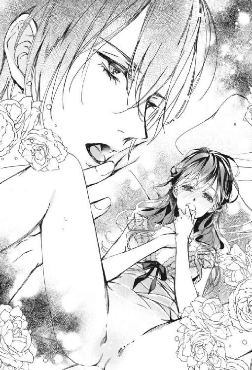
（あの日......）
あの日とは？ 昔の記憶の扉にはなぜか錠がかかっているものがあるのだ。
「人違いよ......私...は...貴方が想っている初恋の人じゃないわ......っ」
──あの日々を忘れた貴女が許せない。近々、貴女に忘れ得ぬ痛みを差し上げます。そうすればもう完全に私のものだ。
舌の感触が、また。
そこに舌が触れたかと思うと、次の瞬間、それは強度を持ちヴィアーナのそこを貫いた。
「嫌ぁあああッ！」
ヴィアーナは泣きじゃくりながら一際高い声を放った。拒絶の声が、悲鳴になる。捕らえられた脚が宙を搔く。
彼の舌は内部で動かず、しばらくして離れた。同時に脚も解放される。
──早く貴女の中に入りたい......私を痛いほど締めつけて欲しい......ですが今はまだ奪いません。大切な人ですから。早く実現できるように、私は毎晩貴女の夢に現れ、愛を囁き続けるでしょう。
彼の声を聞きながら、ヴィアーナは心の中で悲鳴を上げた。もはや声に出す気力がない。
──ヴィアーナ。男の事情が迫ってきました。
荒い息遣い。衣擦れの音。微かな呻き。ややあって、何か、温かい雨のようなものがヴィアーナの身体に降って来た。
※ ※ ※
「ん......」
カーテンを透かす朝の光の中、ヴィアーナは目を覚ました。寝乱れて夜着はめくれ上がっている。
ヴィアーナは昨晩の夢の余韻に悶えた。
「私ったらなんていやらしい夢を......」
夢の内容も内容だ。架空の人物ならまだいい。よりにもよって、昨日会った宮廷魔術師モスリーに淫らにいたぶられる夢だなんて。
（どうしてモスリーが......突然唇を奪われたからって...よくもあんな発想できたわね......恥ずかしすぎて、しばらく会えないわ──いえ、あんな手の早い男、もう二度と会おうとは思わないけどっ）
嫌悪しつつも、彼の存在が心の中で大きくなり始めていることに気づく。宮廷魔術師モスリー、黒の魔導卿。
モスリーがあんな男だと知っていたら、間違っても彼の屋敷に入ることなどしなかったろう。まるで『甘い果実』のアドルのように危険な男だ。
ヴィアーナは身を起こして棚の上の時計を見た。朝食の時刻をとっくに過ぎている。誰も起こしに来なかったのは、眠りこけていたヴィアーナへの配慮だろう。
「この時間だとお兄様はもう発たれたあとね。あと三時間で先生が来られるじゃないの。ちゃんと支度しなきゃ」
ヴィアーナは泣きそうな顔でベッドを降り、クローゼットに向かった。夜着を脱ぐために胸のボタンを開け始めたその時。
「や、やだ、なに」
鏡台の鏡にたまたま映った自分の姿にヴィアーナは目を止めた。よく確認しようと鏡の元へ歩み寄る。胸元に何かの跡がある。虫にでも刺されたのか。
鏡に近づいて確認すると、それは打ち身のような内出血だった。胸元に幾つも、花びらのように散っている。
「嫌だわ。白粉で隠れるかしら」
ヴィアーナは憂鬱な溜息を吐いた。
夕暮れ時。自宅の応接室にて、魔術師モスリーは暖炉の側に立つヴァリドゥー家の令嬢にうりふたつの青いドレスを着た石膏像の前に佇み、恍惚とした表情でそれを見つめていた。
窓から射し込む夕陽が、二体の生気を感じさせぬ青白い肌を照らしている。部屋を包み込む静寂を、ときおり屋敷の各所で行われている改修工事の音が破る。
「本当に、どこもかしこも痛んだぼろ屋敷で......今の今までどうでもいいと放っておいたのですが、こうなったのは......貴女のお陰ですよ」
やはり、花嫁を迎える屋敷はきれいにしておかねばなるまい。
常に黒い装束に身を包んでいるがゆえに、城では『黒の魔導卿』と言われるモスリーの出で立ちは今、白ブラウスに臙脂のネクタイ。それにチェックのベストとズボンという、ごく普通の紳士のものだった。ただし美貌と気品においては、ヴァール・ドゥナのどの貴公子よりも別格といえるほどに抜きん出ているが。
モスリーが昨晩台座から引き離したヴィアーナ像は、再び同じ台座に据えられていた。夜にはヴィアーナの分身として生命を宿し、モスリーの愛撫に反応を示したが、朝になると再び石膏像に戻り、モスリーが応接間に置いた台座に据えると、何事もなかったようにぴたりとそこに収まったのだった。
「ヴィアーナ......そのドレス、とても良く似合っていますよ。もちろん、赤い生地でも作らせていますからね」
ヴィアーナ像が今身につけているドレスは、モスリーが早朝から王室御用達の仕立て屋を呼んで急ぎ作らせたものだった。石膏像の採寸に訪れた仕立て屋は怪しんでいたが、モスリーは全く気にしない。
（裸のままでは寒いでしょうし、それより何より、近い将来、私の花嫁となる人に恥をかかせるのは耐えられないのです）
「それとヴィアーナ。ガウンやスリッパ、私達の夜のための可愛いナイティや流行のレースをふんだんに使ったランジェリーも多数注文しています。私の趣味ですが、貴女も気に入ると思いますよ。もうすぐ届くはずです──喜んで、と言っても、昼の貴女は常に同じ顔、か......」
モスリーはヴィアーナ像に歩み寄り、指先まで神経の行き届いた美しい手で硬い石膏の髪に触れ、軽く嘆息する。
昨晩、モスリーは生身に変化したヴィアーナ像の美しさに興奮するあまり、ベッドの上で息も絶え絶えの彼女の分身に情熱を放ってしまった。その白い肌に散った己の飛沫に、モスリーは満足して分身の隣で眠りに就いたのだった。
翌朝、元の石膏像に戻っていた彼女を見た時は少し寂しい気がしたものの、また夜はやって来る。
「夜が待ち遠しいですよ」
そうすれば、また彼女と存分に触れ合えるのだから、昼間の辛抱くらい何でもない。
「昔の記憶があろうとなかろうと、ヴィアーナはもう、間違いなく私を意識し始めているはずです。この胸の想いを夜の間中、囁き続けましたから」
そう。この魔法は、いずれ本物の彼女を手に入れるための仕込みなのだ。次にヴィアーナと会った時、彼女はどんな顔をするのか。真紅の瞳に確かな恋慕の情を宿してモスリーを見つめるのか。それともその頰を薔薇色に染めて恥じらう様子を見せるのか。
「どちらの貴女も見たい......」
モスリーはヴィアーナ像を抱き締めると、その唇に自分の唇を重ねた。そんな時だった。
唐突に応接間の扉が開く。
「勝手に入らせてもらったよ」
声とともに現れたのはモスリーの叔父、大魔導師ハリアドルだった。彼は流れる銀髪をそのままに、手には脱いだマント、白ブラウスにベスト、ネクタイにズボンと、モスリーと変わらぬ出で立ちをしている。女装が多い彼には珍しいことだ。
モスリーはヴィアーナ像から顔を上げると、邪魔が入ったと言わんばかりに細く優美な眉を寄せて叔父の方を向いた。
「何かご用ですか？ 叔父上」
「やっぱり。まったく、お前という子は──」
ハリアドルは大股で石膏像の元へ歩み、モスリーをその迫力で退避させた。
「ヴィアーナ嬢じゃないか。お前は自分が何をしているのかわかっているのか？ これは非常に質の悪い呪法だぞ！」
ハリアドルは甥を振り返って厳しく言い放った。
「知りませんでした。少女がよくやる他愛ない恋のまじない程度の魔法だとばかり......先日会った令嬢にひと目惚れしまして......深く考えずに......。いささか自分を情けなくは思いましたが」
モスリーはとぼけたような口調で叔父に説明する。
「思いつきで？ ほう」
ハリアドルは意外そうに片眉を吊り上げて体をモスリーに向ける。
「さすがは呪殺と毒殺がお家芸のシメンドゥール家の当主だ。忌まわしい血ゆえの才能には驚かされるよ」
皮肉たっぷりにハリアドルは言う。
モスリーの母の生家であるシメンドゥール家は、お家騒動で互いを呪い、殺し合い、その血を受け継ぐモスリーが地上から本来の世界であるこちらへ戻って来た時には、すでに無人の屋敷となっていた。
それはさておき、このままではまずい。呪法の成就が阻止される。大魔導師の叔父には力ではまだ敵わない。モスリーは意を決し、目の前のソファに腰を落とした。
「抱きますか？」
叔父に言いながら、ネクタイを自ら解く。叔父が両刀だということはわかっている。ヴィアーナとの恋路を邪魔されるくらいなら。
「口封じに身体を売ろうと言うのか？ 水くさいじゃないか、我が甥よ」
「叔父上がこのことを誰にもしゃべらぬのはわかっています。加えて、口を挟まないでいただければと」
ハリアドルは待ち受ける甥の元へ歩むと、彼を挟み込むようにしてソファに両手をかけた。銀髪がモスリーの頰を撫でる。美貌の持ち主である上に、胸板厚く、その腕も逞しいハリアドルだ。即座に禁断の構図ができあがった。
「好きにして構いませんよ」
そう言って感情の読み取れない瞳を向ける甥に、ハリアドルはさらに上をいく酷薄な微笑で答える。
「やめておくよ。お前の心が乙女よりも頑なだということくらいわかっている。もっと楽な方法があるだろう？」
彼の言葉に突き動かされたように、モスリーは叔父の胸に飛び込んだ。
「叔父上......私はどうすれば......！」
この胸に抱かれると、嫌が応でも心情を吐露させられてしまう。いつまで経っても独り立ちできなくなる。
「そう。それでいい。可愛い子だ、モスリー」
ハリアドルはモスリーの黒髪を優しく撫でた。
「彼女は──ヴィアーナは、私が地上で暮らしていた頃に遊んでいた初恋の娘なのです。どういう経緯かはわかりませんが、最近こちらで再会しました。冷たい彼女を振り向かせたいという気持ちが募って、彼女の像を作ってしまいました」
「それで屋敷まで改装し始めたというわけか。花嫁を迎えるために」
「ええ。この呪い──いえ、魔法は、私の願いを成就させるためのものなのです」
「プロポーズしたらいいじゃないか。正々堂々と」
「それができればどんなに楽か──だって叔父上、彼女はヴァール・ドゥナきっての名門貴族、ヴァリドゥー家の伯爵令嬢。それに対し私は一介の宮廷魔術師でしかない。身分が釣り合わないのです」
やや沈黙があって、ぷっ、と叔父は笑った。
「お笑いになればよろしい！」
モスリーは泣きたい気分だった。涙などここ十数年流したことはなかったが。
「好きだよ、お前のそういうところ。お前の本来の立場を思い出すがいい──その身分を引っ下げて彼女にプロポーズすれば、先にどのような名門の貴公子との約束があろうと、ヴァリドゥー家はその要請を無下にはできない。そうだろう？ シメンドゥール公爵よ」
モスリーはハリアドルの言葉が未だ理解できないとでもいうように、ぽかんとした顔で叔父の顔を見上げた。普段決して人には見せない、あどけない無防備な姿のモスリーがそこにいた。
「シメンドゥール公爵家の当主じゃないか、お前は」
叔父の言葉がようやく理解できたモスリーの顔が、ぱっと花が開くように輝く。
「そうでした......しばらく城の書斎に引きこもり、誰にも会わず寝起きする生活を送っていたので、そんな自分の身分など、すっかり忘れていました」
「とんだ公爵様もいたものだね──可愛いよモスリー、食べてしまいたい」
「早速彼女にプロポーズを！」
喜び勇んで立ち上がろうとしたモスリーを、しかしハリアドルが再びソファに押し戻す。
「叔父上......」
「やっぱりたった今、気が変わったよ......」
「えっ？」
「今の僕の思考の過程を説明すればこうだ。最初は何やら暴走しているらしいお前に、父性を発揮しようと思った──ヴィアーナ嬢の様子が何か変だったから呪いの所在を探ったのさ──けれどお前がさっき輝くような笑顔を見せたものだから、良心の天秤が傾いたよ。心に羽根が生えて飛んで行こうとするお前を、引きずり降ろして独占したくなった。彼女には黙っておいてやろう。今日こそ僕の物におなり」
「叔父上」
叔父は本気だ。いつもと違って瞳に余裕がない。ここは男の意地をかけて抵抗してでも逃げるべきか。先に誘ったのは自分で、我ながら矛盾しているとは思うが、牙を剝いた獣を前に逃走本能が働かない者などいるまい。
「お前が欲しい」
ハリアドルの手がモスリーの滑らかな顎を捕らえ、指が唇に触れる。
思いもかけぬ叔父の告白に、モスリーは呆然として逃げる気を失った。
そう言うとハリアドルは甥のブラウスの胸元を大きく裂いた。
※ ※ ※
モスリーが浴室に行ったあと、ハリアドルは大理石の暖炉の上に飾られた肖像画に歩み寄った。
「姉上、夢が叶いました。貴女への永遠に報われぬ想いに囚われるのは、今日をもって終わりにします」
さて、とハリアドルはヴィアーナの石膏像に目を移す。
「呪法は解かせてもらうよ──砕いたらモスリーが発狂しかねないから、さらさらの砂にしよう」
ハリアドルは石膏像に向けて手を翳すと、短い呪文を唱えた。
次の瞬間、石膏像はいきなり砕け、白砂糖のようになって静かな音を立てて崩れ落ちた。
その砂の山の中に、長い髪の毛が一本紛れているのをハリアドルは発見し、歩み寄って手に取る。
「ヴィアーナちゃんの髪の毛か？ 金色だ」
髪の毛をシャンデリアの灯かりに透かしたハリアドルの眉がにわかに険しくなる。
「彼女の全身から常に魔法の匂いがしていたが、強力な魔法がかかって赤い髪になっていたからなのか。魔法王国の貴族、ヴァリドゥー家の令嬢だけに、潜在的な魔力が滲み出ているだけだと思っていたが......本当の色は金髪なんだ。モスリーが地上に住んでいた頃の初恋の人ってことは......」
大魔導師ドル・ハリアドルは並の魔術師ではなかった。ひと筋の髪から彼女の事情を知った。
ハリアドルの授業を受けている途中、ヴィアーナは倒れ、怖ろしい夢を見た。
全てが石になる夢。
知らない部屋から窓の外を覗いてみると、窓の外も全て、真っ白な石になっていた。
外もヴァリドゥー邸の庭ではなく、違う風景だった。
心配になって、ヴィアーナが踵を返したその時。白一色の中に抜きん出たひとつの色彩が目に入った。
石と化したベッドの上。ヴィアーナが先ほどまで寝ていたその枕元に、美しい青い薔薇が一枝置いてあった。
ヴィアーナはそこで目を覚ましたのだった。
（何て怖ろしい夢......）
ベッドから起き上がり、周囲を確認する。全て本来の色彩だった。
「夢の中にいた場所はこことは違っていたわ」
まるで異空間を旅してきたようだ。今日が何月の何日なのかわからない。窓の外は夕暮れ色だ。
そう。確か自分はハリアドルの授業を受けていて、急に気が遠くなり、倒れてしまったのだ。
「寝不足だったかしら......」
夢の中に現れたモスリーから散々なことをされて、昨夜は熟睡できたとはいえなかった。起きても眠気が続いていたのだ。
（私が彼のことを意識し始めているから......かしら）
ヴィアーナは頰を染めた。美しいモスリー。
茶会に出席したことで、気持ちが外に向き始めた。
彼の存在は、ヴィアーナに、自分がいずれ誰かと結婚しなければならない身だということを実感させた。
兄から魔法で小さくされた時のことが頭に浮かぶ。できることならば結婚などせずに、一生の間兄の引き出しの中で暮らしたい。
「ヴィアーナは誰かの元へ嫁いでも、お兄様のことが一番大好きです」
ヴィアーナが切ない胸の内を言葉にしたその時だった。
扉を叩く音がした。
「入っていいわよ」
夕食が載った盆を手に入って来たのは、赤いお仕着せ姿のキールだった。彼は普段このような役目を負ってはいない。
「お夕食を持ってまいりました。ご気分はいかがですか？」
「ありがとう、キール。よく覚えていないんだけど、私一体どうしたの？」
「お倒れになられたんですよ。大魔導師様とのお勉強の途中で。ベッドで召し上がりますか？」
「いいえ、そこのテーブルに置いてちょうだい」
キールは夕食を小さなテーブルに置くと、心配そうな面持ちでベッドの方に近寄って来た。
「先生にはご迷惑をおかけしてしまったわね」
「お嬢様を心配なさっておいででしたよ。お大事に、とのことでございました。旦那様はもうじきお帰りになられます」
そういえば、大魔導師ハリアドルはささやかな魔法を使うキールのことを気にしていた。
最初はキールの持つあまりに善良そうな雰囲気のために、訓練されたどこぞの間者ではないかと警戒の色を見せていたが、ヴァリドゥー家に雇い入れられる者は全て、執事が厳しく調査を行って合格した者達だけなので、その点の心配はない。
「キール、貴方、本気で魔法の修行をしたらどうかしら。先生が貴方を魔法の学院に入れたいとおっしゃってたわよ。見込みがあるって」
「ええっ？ 俺が？」
「今度、私からお兄様に話してみるわ」
「とんでもない、あんな貴族のお坊ちゃまがわんさかいる学校になんて──馬の世話で十分ですよ。お給金も充分過ぎるほどいただいてますし。俺は高望みはしない主義です」
俄かに及び腰になり、両手を振りながらキールは断固拒絶した。
「キールったら、逃げないで聞いてちょうだい。うちの馬が貴方に懐くのも、先生によれば、貴方の魔力のせいだって。あのハリアドル先生が是非にと言ってくださっているのだから、勉強して伸ばさない手はないわ」
「もうよしてください。不足はありません。ここに小さな幸せをみつけていることですし」
「小さな幸せって？」
キールの動作が凍りついたように止まる。次の瞬間、彼の顔は耳まで紅潮した。
「い、今のは気にしないでください──失礼しました。それでは」
そう言うとキールは途中で壁にぶつかりそうになりながら、逃げるように部屋を去って行った。
「キールったら、一体どうしたのかしら......面白い子ね」
少年の想いに気づかず、ヴィアーナはきょとんとした顔で彼の背中を見送った。
やがて就寝の時間となった。
※ ※ ※
結局ハディールとは顔を合わせないまま、入浴を済ませたヴィアーナがベッドに潜り込もうとした時だった。
扉を叩く音がした。
「誰？ こんな時間に」
脱ぎかけのガウンを羽織り直し、枕元に灯した小さな照明を頼りに、ベッドから降りて扉を開ける。案の定、ハディールの姿がそこにあった。心配顔だ。
「ヴィアーナ。倒れたと聞いたが」
「もう大丈夫よ。どうぞ、中へ入って」
部屋の中へ誘うと、ハディールは躊躇しつつも薄暗いその中へ入った。
「倒れるなんて初めてじゃないか」
ハディールは鏡台の椅子を引き、背もたれを正面に腕を組んで座る。ヴィアーナは向かいにあるベッドにちょこんと腰掛けた。
「お兄様に甘え過ぎるのをやめたからかもしれないわ。私がいろいろな人に出会ったり、お兄様の元から巣立つ準備をひとりでし始めているから」
何、とハディールは顔を上げる。
「母上が一人前のレディーだと太鼓判を押されたとは聞いていない。お前はまだ半人前だ。ひとりで悩んだりするなよ」
ヴィアーナは心の底から安堵した。嬉しくて足をばたばたさせてしまう。スリッパが飛んで行きそうだ。
「ええ、本当に困ったらそうするわ。昨日は楽しかったのよ。そうそう、明後日はロアーン子爵の交霊会に誘われているの。行っていいかしら」
「猫目子爵の交霊会だと？」
ハディールはうろんな目をする。
「子爵は霊感が強いんですって。見えないものが見えるって、どんな感じかしらね」
「駄目だ、主催者が胡散臭い」
「わかったわ」
兄の反応を予測していたヴィアーナは、当然というように返事をした。
面白そうな集いなので、兄に駄目だと言われても、ヴィアーナは母に甘えて許可をもらいに行くつもりだった。普段から交流のある双子も一緒に行くと言えば大丈夫だろう。要は黙って外出しなければいいのだ。そして兄が戻るまでに家に戻れば。
「妙に聞き分けがいいじゃないか。怪しいな......」
ハディールは疑惑の目でしおらしくしている妹を窺っていたが、次の瞬間、驚愕して真紅の瞳を見開いた。
ヴィアーナは兄の異変に気づいた。彼は無言のまま椅子を離れると、ただ事ではない様子でこちらへ近づいて来た。
「何だ......それは」
怖ろしい声で指摘され、ヴィアーナはようやく悟った。胸元にあった無数の青あざ。それを隠していた白粉がシャワーで落ちてしまったのだ。
「えっ......あっ......」
「何だと聞いている」
鬼気迫る表情のハディールは、ヴィアーナのガウンの襟元を摑みながら問う。ヴィアーナはされるがままになりながら戸惑いの表情を見せた。
「どこかに打ちつけたみたい......で」
「噓を吐け！ うおおっ、私の妹が秘密を作ったっ！」
ハディールは発狂したかのように部屋中をぐるぐると回って懊悩し始めた。
異常事態にヴィアーナはベッドから急いで降り立ち、悶える兄の元へ駆け寄った。
「考えたくもないがヴィアーナ。昨日の茶会でか？ それとも、まさかあの悪書の影響で部屋に男を──」
そこでハディールは言葉を切った。
兄を見上げるヴィアーナの真紅の髪は窓からの月明かりを受け、艶やかに輝く。その髪に包まれた卵型の白い小さな面には、二粒のルビーのような瞳が瞬く星のごとき煌きを放ち、ゼリーのような紅い唇は問うように開かれている。頭を支えるのがやっとのような細い首の下で、いかにも柔らかそうなふたつの丘は無数の接吻の跡と共に微かに上下していた。
見ようによっては、無垢な乙女の姿をした夢魔が、さあ、私が欲しければ貴方もここに所有の印を、と誘っているようにも見える。
ハディールは頰を引き攣らせ、恐怖におののくように窓辺の方へよろりと後退した。
「お兄様？」
「く、来るな！ それ以上──」
兄は私のことが嫌いになったのだろうか。だとしたら何故。
「お兄様......やっぱり、私があの夜、無理なお願いをしたから？ 迷惑だったの？ はっきりと言ってよ！」
ヴィアーナは一歩前に歩み出て言い放つと、兄の胸へ飛び込んだ。
ハディールは猪のように突進して来た妹を仕方なく抱き止めた。ハディールの背が窓枠にぶつかって、大きな音を立てる。
ヴィアーナは密着した兄に違和感を感じた。腰の辺りに何かを隠しているようだ。使い魔でも入っているのだろうか。
「ん？ どうしたの？」
「それ以上言ってくれるな......」
情けない声と共にうなだれたハディールは、自身の高まりを知らせるように腰を引き寄せた。
ふたりは体格にかなりの差がある。強い力で引き寄せられると、ヴィアーナの細腰は折れてしまいそうだ。
青い窓辺にひとつとなった影は微動だにせず、そのまましばしの沈黙が流れる。
「私の正体がわかったか？ お前に欲情する......私は普通の兄じゃない」
初めに口を開いたのはハディールだった。
ヴィアーナは呆然と兄の胸から顔を上げた。そこには狂おしい表情の兄がいた。
「何があったのか、正直に話してほしい」
ヴィアーナの中で唐突に昨日の記憶が蘇った。魔術師モスリーに唇を奪われた。兄には言えない。あの夢の内容も。
黙っていると、ハディールは有無を言わせぬ手つきで彼女のガウンを脱がせにかかった。
抵抗するが、遅かった。ガウンは床に落ち、夜着のボタンが外されようとしていた。
「だ、駄目よ、お兄様っ！」
何か違う。
ヴィアーナが一方的に押しかけて困らせた時の兄とは違う。
兄の手を押し除けようとしたが、駄目だった。抵抗すると布地が軋んで、裂けてしまいそうになる。兄は本気だ。
そしてとうとう夜着も、下着も同じく足元に落ちた。
一糸纏わぬ姿を兄に晒すこととなったヴィアーナは俯き、室内の微かな明かりと窓の月明かりに怯えるように両手で胸と秘所を覆った。
ハディールの手がヴィアーナの手を退かそうと触れる。
ヴィアーナは兄の手から逃れようと後退した。しかし、逆にベッドに押し倒される事態となった。
「お兄様っ！ 嫌っ」
溶かしたルビーが流れ出すように、ヴィアーナの髪がシーツに散り広がる。ベッドへ乗り上げたハディールがそこへ覆いかぶさる。
「他に跡はないのか......見せろ......全て」
ハディールの口調は狂気を帯びていた。
彼は妹の全身をつぶさに確認していく。しかし、白い首筋と胸元以外にその跡は見当たらなかった。
ハディールはヴィアーナの両膝の裏に手を入れると、掬い上げた。
「や、嫌よっ──見ないでっ」
夢の中ならともかく、これは現実だ。兄の目の前にこんな所を晒すなんて。部屋の中にはまだあの時よりも明るい灯りが点っているのに。
ハディールの手は力強く、開かされた脚は一ミリも閉じることができない。ヴィアーナは自分の顔を手で覆った。
彼の鋭い視線が、穴の開くほどその場所を見つめているのを感じて、反応してしまう。
「あ......あぁっ」
「どんどん溢れてくる」
「......言わな......でっ、放して、お兄様」
ヴィアーナはベッドの上でもがいた。脚を広げられたまま滅多矢鱈に腰をくねらせ、何とか兄の束縛から逃れようとした。
「ここも膨らんでいるな」
「......んっ、んっ、や、やだ、ぁあっ」
薄明かりの中、左右に動く尻の肉に合わせてヴィアーナのそこは内なる襞を見え隠れさせ、溢れる蜜をシーツに零した。内奥は切ないほどに蠢いている。
堪らなく恥ずかしい。もどかしい。
「......何て淫らなんだ」
ハディールの声は上擦っていた。
奥処に何かを差し込まれる感触がして、ヴィアーナは顔を覆っていた手を除ける。
指だ。兄の指が自分の中に潜っている。
「あ......っ」
「安心した。お前はまだ無垢のようだ。いずれ奪われるのだろうが、それが私が名も知らぬ男によることなど、あってはならないのだ。私は世間一般の普通の兄ではない」
「ヴィアーナは、お兄様を信じているわ」
凄まじい表情を優しく解いたハディールは、今までより幾分か落ち着いてヴィアーナを刺激し始めた。
指は昨晩よりも深く差し込まれ、抜き差しされる。しかし二本は無理だった。最初は異物でしかなかった指が、次第にヴィアーナの内側に融和して快楽をもたらし始める。
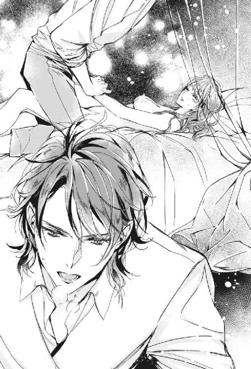
「あっ、あ......っ」
ヴィアーナは思わず腰を動かして指の動きを追った。
「処女のくせに、もうそんな動きをするのか」
「お兄様......片方の脚も放して。おとなしく...しているから......」
兄にそこを弄られる中、ヴィアーナはそろりと両手を広げてシーツを握り締め、ベッドの上に自らを縫い付けた。
静かな室内に淫猥な音が忙しく響く。
「あっ、ふあぁ、あ──」
ヴィアーナの小さな胸が彼女自身の腰の動きで弾む。ハディールは上下する妹の胸先に愛おしい眼差しを注いだ。
夢心地で、ヴィアーナは快感を訴える。意識を手放す寸前、衣擦れの音がした。
「ヴィアーナ」
兄が囁く。ヴィアーナの片方の手がそっと取られた。
「これがお前に対する私の気持ちだ。時おり理性の所在がわからなくなるんだ」
ヴィアーナは誘われるまま、それに手を絡めた。手に余るほど大きく、熱く、硬い何か。時おり蠢いている。
それの奇妙な動きに、驚いて手を離そうとしたが、兄の手に上からしっかりと握り締められる。
ヴィアーナの意識はそこで途切れた。
ハディールは妹が達したのを見届けたあと、硬度を最大にした自身の熱塊に、愛する妹の手を添えて扱き上げる。
彼のそれは、先端すらもヴィアーナの入口には到底収まりきれぬほどの物であった。
先走りが、重なり合ったふたりの兄妹の手を濡らす。あってはならないことだ。
「本当にキスマークではないのかもな。だが最近急にきれいになって......お前の微笑は誰が独占する？ まだ見ぬ男に嫉妬で気が狂いそうだ......お前が愛しい......」
低い呻きのあと、すまん、と呟いてハディールは情熱を放った。
始末を終えた彼は、しどけない姿で安らかに眠る妹に布団をそっと掛けてやると、逃げるように妹の部屋をあとにした。
第六章囚われの夜
ヴィアーナはハディールが地上へ出立したのを見届けると、早速、母ヴィアネーラの部屋へ向かい、彼女にロアーン子爵の屋敷で行われる交霊会への参加を許可して欲しいと言った。
母は最初は難色を示していたが、例の双子も一緒だと聞くと、渋々承諾したのだった。
「貴女がどんどん、わたくしの手から離れていってしまうような気がして、少し寂しいわ」
刺繡にいそしんでいたヴィアネーラは手を止め、紅い睫毛にわずかな憂いを載せて娘を見上げた。
第一、正式に公の場に出るわけではない。友人の家で知り合った者に招かれて遊びに行くだけのことだ。
「とはいえ、私と違って若い娘ですから、家の中に閉じこもっているのは退屈だろうとは思っていました。貴女の年だと、もう正式な形で公の場に出ている者もいますしね」
「お母様、私にその資格があるかしら」
「まだまだですけど......貴女の幸せを考えるなら、完璧を求めて時期を逸するのは愚の骨頂というもの。ハディールは何と言うかわかりませんが、頃合ですね」
はぁ、とヴィアネーラは息を吐く。彼女が手を広げるのとヴィアーナがその胸に飛び込むのは同時だった。
「良い殿方の元へ嫁げるように、わたくしは貴女のために手を尽くします」
母の言葉に、ヴィアーナの胸は切なく締めつけられた。
私がいなくなって、お母様が夜に悪い夢を見たりしたら。
母の部屋からの帰り、ヴィアーナは廊下の窓から階下の真紅の庭を見渡す。
今朝ヴィアーナが庭先で兄を見送っていた時、側にあった石膏像が倒れかかってきた。とっさに兄が庇ったために事なきを得たが。
駆け寄って抱き締めてくれたハディールの緊張に張り詰めた顔が、まだヴィアーナの脳裏に焼きついていた。
あの瞬間、世界にはヴィアーナと兄だけになり、形容し難い高揚感に包まれた。兄とふたり、はばたく鳥と共に、雲の高みまで飛んで行きそうだった。
ハディールはヴィアーナに何か語りかけようとして止め、今まで腕の中にいた妹を突き放すと、踵を返して地上世界へ発っていったのだった。
（お兄様が赤の他人だったら良かったのに）
ヴィアーナの兄に対する感情は、他人から見れば奇異なものだ。
この身体を奪ってくれても構わないとまで思うようになった。
だがハディールは伯爵家の当主。ヴィアーナは父親を亡くしている──ヴァリドゥー家の先代当主であるヴィアーナの父は、地上世界で強力な力を持つ魔法使いと対決して相討ちとなり命を落とした。ヴィアーナには父親の記憶がなかったが、応接室に彼の肖像画があり、たまに心で語りかけることがあった。父の──赤子ならば泣き出すような──厳格な顔は、ハディールが受け継いでいた。
ハディールには家名の存続という重い責任がある。家格の釣り合った者との結婚を宿命づけられている。
令嬢のヴィアーナも、そうだ。用意された道へ進み始めた時、兄と妹の暮らしには終止符が打たれる。嫁ぐ身のヴィアーナは、真紅の薔薇咲くこの屋敷とお別れしなければならない。
振り返り、ヴィアーナは鬼ごっこで廊下を走り回る幼い頃の自分と兄の姿を視た。
※ ※ ※
午後になり、ヴィアーナはロアーン子爵の屋敷を訪れた。約束の時刻よりも少し早く到着すると、ロアーンは仕度に追われている最中だった。
仕方なくヴィアーナは庭先に出てベンチに腰掛けた。庭ではロアーンの弟達がテニスをして遊んでいる。ロアーンに似て猫背だ。彼らがコートの中を動き回る度に、蜂蜜色の髪が人工の陽の光を受けてきらきらと輝いていた。
「おや、そこにいるのはヴィアーナじゃありませんか？」
背中に声がかかり、ヴィアーナは振り返る。庭に面した屋敷の木陰の窓から顔を覗かせた、宮廷魔術師モスリーの姿があった。急に視界に入ると、心臓に悪いほどの超常的な美貌だ。見る者を夢幻の境地に誘う絶妙な目鼻の配置とその陰影。やはり美し過ぎる。存在自体が神代の密儀だ。
「モスリー」
ベンチから立ち上がり、ヴィアーナは窓辺にいる彼の側へ近寄る。モスリーはレースの白いブラウスに黒のベストを着ていた。
そして先日彼から無理やりキスされたことを、はたと思い出した。淫らな夢は彼のせいではないにしても、警戒すべきだ。
ヴィアーナは務めて表情を固くして彼を睨みつけた。
「ごきげんよう」
「どうしたんですか？ 急に表情を険しくして」
モスリーにはまったく悪びれた様子がなかった。彼の口元はいつものように、得体の知れない微笑を湛えている。
ヴィアーナは、もっと、責めるように彼を強く睨みつけようと思ったが、長々と直視できずに彼から目を反らしてしまった。悪いのは自分ではないのに。
「......もしや、私のことが気になり始めているのですか？」
「そ、そんなわけ......っ」
ヴィアーナの頰がどんどん赤く染まる。
声が動揺してしまう。夢に出てきたモスリー。ふしだらな夢が自分の胸の奥底にある願望だとしたら......。
「だとしたら、光栄ですよ、ヴィアーナ」
モスリーは、彼女の心を読んだかのように答える。
その時、飛んで来たテニスボールを探しに、使用人がやって来たのにヴィアーナは気づかなかった。
歳若い男の使用人は、室内にいる青年と窓辺で語らうヴィアーナの後ろ姿を見ると、好色そうな表情で舌なめずりをした。彼は赤い髪とドレスの示すヴィアーナの身分を知らない。ロアーンの家には貴婦人のごとく着飾った高級娼婦も出入りしていたので、彼は目の前にいる娘もその類だと勝手に決めつけた。
使用人はボールを探すふりをしながらヴィアーナに近づくと、通りすがりに尻を撫で回した。
いきなりの蛮行に、ヴィアーナは叫ぶことも忘れて真っ青になった。
「ヴィアーナ？ 真っ青ですよ」
「だ、大丈夫」
ヴィアーナが、睫毛をおののかせながら必死に否定すると、モスリーの瞳は俄かに鋭くなった。
モスリーに助けなんか求めたりしない。あとで待機部屋にいる従者から気つけをもらってリフレッシュしよう。
※ ※ ※
いよいよ交霊会の時刻となった。
ロンドデリルの双子を含む十数人の出席者は、主催者のロアーンの説明を受け、部屋の中央に置かれた大きな丸テーブルに用意された椅子にそれぞれ着席した。
ロアーンの説明によると、円卓を囲む出席者の中に混じって座る霊媒師の女性の問いかけに、霊が答えるらしい。
ロアーンの隣の席を勧められたヴィアーナは、すっかり青ざめてしまった顔を頰紅で無理やり明るくし、心の重さを辛うじて隠していた。
使用人の躾がなっていないのは主人のせいだ、とロアーンを詰ればいいのだが、身内以外に対してはそれほど気が強くないヴィアーナだった。
楽しい気分が一転して憂鬱なものになった。ヴィアーナが心の中で溜息を吐いたその時。
遅れてモスリーが部屋に入って来た。彼の神秘的な美貌と、圧倒的な存在感に、一同が騒然となる。
「遅くなりました」
ヴィアーナは不思議に思った。さっきまで一緒にいたのに、なぜ今到着したようなことを言うのだろう。
「遅れて来た奴の椅子などないぞ」
第一招くつもりもなかった、とロアーンが不快を露わにする。
「結構です。ここで拝見させていただきます」
モスリーは壁に歩み寄り、長身を壁に預けて腕を組んだ。ロアーンはテーブルの出席者を観察し、どうあっても人目を引く魔術師の所作に鼻を鳴らした。
「では全員揃ったところでご一同、始めますよ！」
こちらに注目しろ、とばかりに開始を宣言するロアーンの声は神経質に裏返った。
ロアーンの合図で使用人が一斉に暗幕を引き、部屋のいたるところで蠟燭に火が点された。たちまち怪しげな雰囲気ができあがる。
ヴィアーナは胸の鼓動が早くなるのを感じた。やはり、兄の言うことを聞いていればよかった。来る場所を間違ったようだ。
「では皆さん、テーブルの上に手を置いてください──もう来てます。来ている感じがします」
「霊ですか？ 霊がもう来ているのですか？ 子爵」
ヴィアーナの右隣に座る、神秘愛好家の白髪の老人が好奇心に満ちた眼差しでロアーンに訊く。
「はい。たくさんの霊が集っています。もうしばらくしたら騒霊現象が起こるかもしれません──あ、今」
突如、爆竹が爆ぜるような音が鳴り響いた。
「きゃああっ！」
ヴィアーナは驚いて耳を塞いだ。斜め向かいの席にいるミランとユランは抱き合って震えている。
「大丈夫です、ヴィアーナ嬢。ただの騒霊現象です」
ヴィアーナの左隣に座っていたロアーンが宥めるように言う。
「騒霊......？」
「霊感の強い私がいますので安心してください」
暗闇の中、ロアーンの糸目はいつの間にか見開かれ、瞳は猫のそれのように縦長になった。
暗闇の中でヴィアーナは隣に座るロアーンを頼もしく感じた。
「さあ、手を置いて」
彼に促され、テーブルの端にヴィアーナは手を置く。その横に手を置くロアーンの手が少しだけヴィアーナの手に重なった。
「小さな手だ」
ロアーンは感動したように呟いた。
離れた場所で見守るモスリーが何かを呟いた。
ロアーンの手は見えない何かによって弾かれ、ヴィアーナの手から離れた。
「うおあっ！」
「バチっときましたわね。これも騒霊現象ですの？」
「いえ、ただの静電気でしょう。それでは霊媒師殿。用意はいいかっ？」
細かい模様の入った大きな布を頭から被り、たくさんの首飾りをつけた女性がうなずく。
霊媒師の女性は手を擦り合わせてぶつぶつと何か唱えると、やがて顔を上げた。
「何か霊に質問がある方はどうぞおっしゃってください。〝はい〟なら一度、〝いいえ〟なら二度、テーブルが揺れます」
霊媒師は一同に語りかけた。では私が、と先ほどの白髪の老人が手を挙げる。
「出席者と関わりのある霊は今、来ていますかな？」
霊媒師は再び手を擦り合わせて、ぶつぶつと何かを唱える。
がたり、と一度テーブルが傾き、床に音を立てた。
「誰かと関わりのある霊が来ているらしい──誰だ？」
ロアーンはやや引き攣った顔で霊媒師に問う。
突如、霊媒師は脱力したようにうなだれた。が、次の瞬間。
霊媒師はかっとその目を見開き、ヴィアーナを睨むと指差して叫んだ。
「──こんな出来損ないの娘......貴女はヴァリドゥーの真紅の姫じゃない！ ヴィアーナじゃない！」
先刻までの霊媒師の声とは明らかに違う。積年の恨みを吐き出す呪詛のような声の響きに、ヴィアーナは怯えた。
ロアーンが腰を浮かせてうろたえる。
「おい、台本と違うぞ」
うっかり口走ったロアーンの言葉に一同が騒ぎ出す。
ヴィアーナは意識が遠のくのを感じた。椅子から転がり落ちてしまう。
「ヴィアーナ嬢！」
ロアーンの声。
ふいに優しい手が支えてくれた。誰？ そのままふわりと抱き上げられる。
「汚らわしい手で触れるな」
モスリーの声が降って来た。語調に怒りが含まれている。
「もう我慢も限界ですよ」
彼の強い口調を聞くのは初めてだ。ヴィアーナはそこで意識を手放す。
「無礼だぞ、貴様！ たかだか宮廷に仕える魔術師の分際でこの私に──世間がちやほやするからといって勘違いするな！ 身分をわきまえろ！」
「何か言ったか、子爵。今、非常に耳障りな言葉が聞こえたような気がするが」
ヴィアーナを腕に抱えたモスリーは静かに恫喝した。紫の瞳は氷の刃のように怖ろしく鋭利な輝きを放っていた。
モスリーの瞳を見たロアーンはひっと声を漏らし、次の瞬間、威圧に負けた自らを恥じるように怒気を露わにした。
「き、貴様、気障もいい加減に──この私に向かって！」
ロアーンが椅子から立ち上がったその時。
「いい加減になさるべきは、子爵の方でしょうに」
白髭の老人が口を挟んだ。
「先ほどから聞いていれば、何という無礼な口のききよう──身のほどをわきまえられよ。椅子もお勧めせぬとは」
「異なことを。男爵、こいつはただの宮廷魔術師ですよ、魔法使いに毛が生えただけの。世間が騒いでいるだけで、実のところ、地位も名誉も何もない。これ以上こいつをつけ上がらせるようなことは言わぬがよろしいですぞ！」
ロアーンの暴言に、老男爵の顔はみるみるうちに蒼白になった。
「怖い者知らずな──宮廷魔術師は単なるご酔狂。今をときめく『黒の魔導卿』が、実は国王陛下の御従兄にしてシメンドゥール公爵家の当主であらせられる、ということは、貴族ならばどのように愚昧な者であってもほんの少し考えればわかることですぞ」
「な、何......!? シメン......ドゥール......だと......あの青薔薇の...メデューサの一族......とうの昔に絶えた家だと思っていたが......確かに、紫の瞳は王族とその縁戚筋しか持ち得ぬ。まさか、そんな！」
ロアーンは腰を抜かして床に崩れ、狼狽しつつ叫んだ。
「『青ざめし薔薇の紋章。かの家の逆鱗に触れし者はその身たちまち石に成り果てる』──愚かな」
「男爵、もうその辺りで勘弁してください。魔法の研究に没頭して本来の身分を忘れる私も私なので」
「差し出がましい真似をお許しください、閣下。ああ、貴方様は本当に御母上にそっくりで......私の心が再び──いっそ石に」
モスリーの美貌に当てられたのか、老男爵はそこで絶句して俯き、がたがたと身体を震わせた。
「彼女は私が家まで送る」
モスリーはロアーンを傲然と見下ろして言った。
「し、しかし──」
「邪魔だてするならば容赦せぬ」
不穏な発言にロアーンが凍りつく中、ヴィアーナを抱いたモスリーは会場をあとにした。
「貴女ときたら──やはり来て良かった。可哀想に、こんなに青ざめて......頰紅で隠しているようですが、私にはわかりますよ。愛していますから。兄上は出席をよく許しましたね......猫目の不埒な思惑が見え見えで、私は終始はらわた煮えたぎり、すぐにでも貴女を会場からさらって行きたい思いでいっぱいでした。気になることがひとつあります。窓辺で貴女はこの家の使用人から一体、何をされていたのでしょう......あとできちんと説明してもらいますよ。どうして私に助けを求めなかったのですか？ それが何より口惜しい。とりあえず、敵は討ちましたよ。あの下郎、とうとう口を割りませんでしたが......」
私の花嫁によくも、不快千万、とぶつぶつ怒りを吐き出しながら、モスリーは黒塗りの馬車に乗り込んだ。
「もちろん私の家に寄り道して行きますよ。何といっても『生身』の貴女なのですから、この機を逃さぬ手はありません」
ロアーンの屋敷の庭先、人のいない静かなテニスコートに、何かに怯えて叫んでいるような石像が一体、取り残されたように佇んでいた。
ヴィアーナは夢を見ていた。
気づくと、目の前に少女の後姿があった。
闇の中でもわかる、つやつやとした赤い髪は、まるで溶けたルビーがどろりと流れ出したようだ。
少女はひと目見てそれとわかるほどの極上の絹の真紅のドレスを着ている。背丈はヴィアーナの胸の辺りほどだ。貴女は誰。
「こちらへ来て」
少女は振り返らずに、ヴィアーナを促す。
少女に続き歩きながら見渡すと、ここはヴァリドゥー家の庭先だった。月は出ていないが、夜だろうか。樹に吊るされたカンテラが所々で和やかな明かりを点している。
弾む足取りの少女は、左右を真紅の薔薇の植え込みに挟まれた石畳の小道を通り抜け、噴水を過ぎて東屋へ向かう。ヴィアーナは歩調を速めて彼女の後を追った。
「ここ、ほら。見てごらんなさいな」
得意げに囁いて、少女は東屋の木製のベンチの背の部分に刻まれた文字を示す。魔法の呪文に使われる古代文字でヴィアーナと書かれていた。
いつからそこに刻まれてあったのだろうか。ヴィアーナは憶えていなかった。
「学ばれたばかりの古代文字で、お兄様が彫ってくださったの。薔薇のアーチも、国王様がおられるきらきらと光るとんがった屋根のお城もよく見える、わたくしの特等席だからとおっしゃって」
「お兄様？」
「わたくしのお兄様よ」
当然のように少女は告げる。しかし、ヴァリドゥー家には兄も妹もひとりだけ。
「貴女は誰なの？」
「ヴィアーナよ」
「えっ？ ヴィアーナは私よ」
「貴女がヴィアーナですって？ 笑わせないで。よくそれでヴァリドゥーの真紅の姫を名乗れるものだわ」
少女は幼いながらも大人びた嫌味を織り交ぜて軽やかに笑う。
「わたくしはもうこの歳で、お母様からどこへ出しても恥ずかしくない娘だとお墨付きをいただいたわよ──それに比べて、貴女ときたら、品格から何からまるで駄目じゃない。真紅の薔薇の貴婦人とうたわれたお母様から、何ひとつ学んでいやしない。まあ、こういったものは一朝一夕に仕上がるものではないから、仕方ないにしても」
悔しいとは思いつつ、ヴィアーナは反論できなかった。少女の凛とした声、美しい発音、空気を瞬時にして洗練させる峻烈な気品は、確かにただちに仕上がるようなものではない。少女はもはや、幼いながらもヴィアーナにお前は至らないと説教ができるほどの、見事に花開いた淑女だ。
「これでも頑張っているつもりよ」
「無駄よ。魔法も使えない、何をやっても駄目な貴女になんか。ヴィアーナになれないのなら、いっそヴィアーナでいることをやめておしまいなさいよ。貴女が中途半端でいるものだから、お兄様の苦悩は増すばかり。お可哀想で、見ていられないわ。だから、出てくるつもりはなかったけれど、こうして......」
「私でいることをやめる？ どういうこと？」
「──扉を開く『鍵』はお兄様が持っているわ。貴女が強く、本当に強く望めばきっと......」
少女はやっと振り向いた。
ヴィアネーラを彷彿とさせる鼻筋のすんなり通った高雅な顔立ち。中でも目尻の上がった切れ長の真紅の瞳はハディールのそれによく似ている。そして形の良い小さな紅い唇。完成された少女。
少女はヴィアーナがこのようにありたいと願う真紅の姫君そのものの姿をしていた。
「お願い。公爵様のところへは行かないで」
少女の揺れる瞳は切なる思いを秘めてヴィアーナを見上げる。さっきはごめんなさい、と微かに呟いて。
「お母様とお兄様に、わたくしのことはもう忘れるように、夢の中でお願いするから。だから」
──お願いよ。
※ ※ ※
「ここは......」
徐々に視界がはっきりしていく。
見慣れない格子天井に、ヴィアーナはここが自分の家でないことに気づく。
「気がつきましたか？」
優しい声は、しかし兄のものではない。覗き込んで来た顔を見て、ああ、これは夢から覚めた夢かとぼんやり思う。
ひょっとしたら悪夢なのかもしれない。不吉な予感さえ抱かせる、完璧な美貌。
「モス...リー......」
名を呼ぶと、彼は痺れたように目を細め、身体を起こして覗き込むのを止めた。
彼はヴィアーナが横たわるカウチの脇に腰掛けていた。長い脚を組み、手を膝の上に重ねて。見守ってくれていたようだ。
ヴィアーナは心の中で驚きの声を上げる。彼は王侯の持ち物かと思われるような豪華な調度類の中に身を置きながら、全く気負いがない。
まだ殿方には数えるほどしか会っていないヴィアーナだったが、兄という素晴らしい貴公子を知っているだけに、モスリーのまとう気品がどれほどのものか、推測できた。
「貴女は子爵の家で気を失ったのです。騒がしい屋敷から連れ出してご自宅に送るつもりでしたが、私の家の方が近かったものですから......すぐに休ませてあげたかったので」
モスリーは周到に用意されていた台詞のように淀みなく告げた。
「あ、ありがとう、あの、私の家に連絡をしたいんだけど」
「貴女の従者に、私の家で休憩している旨をご自宅に伝えに行かせました」
「何から何まで、お気遣いありがとう......」
「いえ」
ヴィアーナは身を起こしながら、はっと昨日の彼の無礼──無理やりのキスを思い出して身を硬くする。
「まだ怒っていますか？」
彼は眉をわずかに寄せて後悔を滲ませる。
「当たり前──いえ、もういいわ。お世話になったのだから忘れてあげる」
「簡単に忘れないで欲しいですね。やはり貴女はつれない」
彼のぼやきが聞こえないふりをして、ヴィアーナは今ここに至るまでの出来事を思い出す。
子爵の屋敷の庭で不埒者から尻を撫でられて、そのあとに始まった交霊会で気を失ってしまったのだ。
交霊会は霊媒師の立会いの下に、見えざる霊に質問などをする遊戯だった。
途中で霊媒師の様子がおかしくなり、形相も口調も打って変わってヴィアーナに向けて酷い言葉を叩きつけたのだ。
『──こんな出来損ないの娘......貴女はヴァリドゥーの真紅の姫じゃない！ ヴィアーナじゃない！』
あの時の恐怖が再び蘇る。鳥肌が立ち、鼓動が早くなる。
「ヴィアーナ、しっかりしてください」
放心したように一点を見つめたままのヴィアーナに、モスリーが声を掛ける。
ヴィアーナは脳裏に迫ってくる霊媒師の形相から逃れたいあまり、つい傍らのモスリーの胸に飛び込んでしまった。彼は驚いたように小さな声を上げつつも優しく抱き止めた。
彼の懐の中で良い香りが鼻腔を突くと、ヴィアーナの発作的な恐怖は瞬く間に鎮まった。
「怖い思いをしましたね」
「私、呪われているのかしら。祈祷師を呼ばなくていいかしら」
まだ言葉をうまく紡げず、舌を嚙みそうなほどに声が震えている。ヴァール・ドゥナの民が死ぬと、その霊魂はやがて永劫的な別の世界に向かうというが、中には現世に留まりさまよい続ける霊魂もいて、人にとり憑いて様々な悪さをするらしい。
「霊媒師が台本を無視して不可視の存在から干渉を受けていましたね。少女みたいでしたが」
「貴女、霊が視えるの？」
「城仕えは人疲れするぶん感覚が研ぎ澄まされますからね、感じる程度ですけど。しかしロアーンが、いかにも自然の成り行きのように貴女に触れる機会を作ったのは、敵ながら見事だと思いましたよ。私には真似できませんね」
「自然の成り行きのようにって......？」
「つまり、今日の催しは、少々珍しい趣向のカップリングパーティーでしょう？」
モスリーの言葉は子守唄のように優しい口調だが、よくよく聞くと様々な箇所に棘を含んでいて、言っていることは容赦がない。
彼は少し、兄に似ている。
「お兄様も同じことを言うかも知れないわ」
「またお兄様ですか......」
モスリーは嘆息と共に声を落とし、少し間を置いて口調を穏やかにして言った。
「親しくはありませんでしたが、そういえば、兄君とは認識という点では意見が一致していたように記憶しています」
言葉を発するたびに震動する彼の胸元。そこに頰を寄せている自分。異性の腕の中、良い香りに包まれて安堵しているのが信じられない。
彼と兄とは反りが合わなかったようだ。昔、大喧嘩をしたという話も聞いた。彼の前で兄のことを口の端に乗せるのはよした方が良いようだ。
「今日は何て日なのかしら」
「少なくとも私にとっては良き日ですよ。どうか、あともう少しだけこのままでいさせてください」
モスリーに髪を撫でられながら、ヴィアーナは仕方なくそのままでいた。
紫色の瞳は和んでいた。
「ヴィアーナ、お日様って知っていますか？」
「貴方が造った空で輝いているあれでしょ？」
ふふ、と笑いながらモスリーは瞳に柔らかな光を溢れさせた。
「エリンの髪の色もお日様のようでしたよ。大好きでした。どんなに冷たくされても」
問うような瞳で見つめられ、ヴィアーナは困惑した。私はエリンじゃないと言っているのに。
沈黙が通り過ぎる。
その時、ふいにヴィアーナの腹が鳴り、静かな室内に思いのほか響いた。
ヴィアーナは俯いて頰を染め、腹の音が鳴り止むのを待つ。昼はちゃんと食べたはずなのに。
しかし、ヴィアーナの心配は杞憂だった。モスリーはヴィアーナの腹の音など聞こえていないのか、何事もなかったかのように全く笑わない。これが兄なら遠くにいようが耳ざとく聞きつけて、瞬時にぶっと吹き出すところだが、彼は心得ているようだ。
「少し遅いですがお茶の時間にしましょう。うちの使い魔がさっき買って来たケーキがありますから持って来ますね」
えっ、とヴィアーナはつい顔を輝かせてしまった。そして、食い意地の張った自分を恥じた。
社交界にデビューしたレディーたちは、皆、日々壮絶なダイエットにいそしんでいるというのに、先が思いやられる。
「待っていてください」
しばらくすると茶器が載った黄金のワゴンを押したモスリーが現れた。肩にはカラスが乗っている。髪と羽の色がお揃いだ。
「ごきげんよう、真紅のお姫様。歓迎はまったくしてないわよ、わよ」
「これ、エリン。虐めるのはやめなさい」
「カラスのエリンは貴方のことが、とっても好きなのね」
ヴィアーナが言うと、わかればいいの、とエリンは主の肩から慌しく飛び立って部屋をあとにした。
モスリーは、ヴィアーナの目の前に小さなテーブルを運んで来て、ワゴンの上のケーキとお茶をその上に置く。動作はぎこちなかった。
「安心してください。お茶の葉は新しいものです」
「わあ」
切り分けられたケーキには、つやつやと輝く大きな苺がひと粒載っていた。
「いただくわ」
堪らずにヴィアーナはフォークを振りかざし、容赦なく苺を一突きにして口に運ぶ。
甘みと酸味が渾然一体となって口の中に広がる。
そして無言の時が過ぎた。
「......美味しいですか？」
振り向くと、モスリーはヴィアーナの傍らに立って、亡霊のごとくじっとこちらを見つめていた。
いつからだろうか。一心不乱にケーキに向かう無防備な顔を見られていたとは、何やら気恥ずかしい。しかもここは他人の家だ。
「え、ええっ、おいしいわっ。あ、貴方は食べないの？」
口元を気にしつつヴィアーナは訊く。
「食べ物にはとんと興味がありませんので」
やや無機的な声で彼は答えた。
「美食家のように見えるけど、意外ね。いつも何を食べているの？」
「さあ──」
「昨日は？」
「忘れました──そんなことはどうでもよろしい」
早くお食べなさい、とモスリーが脅迫するように急かす。人が食べている仕草がそんなに面白いのだろうか。それとも早く食器を片付けたいのか。
ヴィアーナはそれじゃあ、と半分ほど残っているケーキをフォークで突き崩すと、刺したひと欠片を彼の目の前に掲げる。
モスリーはヴィアーナの突然の行動にぎょっとした顔で身を引いた。
「貴方も見ているだけじゃなくってお食べなさいよ。美味しいわよ」
言いつつも、ヴィアーナは少し戸惑っていた。たまに兄にするような他愛もないことなのに、空気が張り詰める。
「甘いの嫌いなの？」
「いえ、甘い...というのが、よく」
「さあ、とにかく」
ヴィアーナがさらにフォークを突き出すと、モスリーは当惑しつつも屈んで彼女の手を握り、そっと口に運んだ。
いきなり手を重ねられて、ヴィアーナの鼓動が脈打つ。冷たい感触。なんて長い指先。
モスリーは考え込むような面持ちで二、三度、咀嚼した。
「やっぱり甘いの嫌いなんじゃないの？」
「いえ、いろいろ感覚が鈍いというだけで。でも、ああ、これは確かに──とても甘いですね。私は明日になってもこれを食べたことをきっと憶えているでしょう」
「モスリーって、おかしな人。貴方、生きているの？」
ヴィアーナは思い切り破顔した。本当に、風変わりな殿方だ。
ヴィアーナは笑っている自分の周囲で無数の光の粒子が煌いているのに気づかなかった。
次の瞬間、モスリーが細めていた目をふいに見開く。
「どうかした？」
笑いを止めてもまだなお輝きを放っている、金色の髪と緑の瞳の姫君がそこにいた。
「いいえ、別に。まったく失礼な人だ」
先ほどよりも幾分かよそよそしく言うと、黄昏の窓辺へ歩んで行った。
ヴィアーナは彼の手が、身体が、感慨に震えているような気がした。それがなぜなのかはわからない。
そしてヴィアーナの髪は再び真紅に戻った。
※ ※ ※
モスリーが部屋を出て行くと、ヴィアーナは衣服を脱ぎ、続きにあるシャワー室に向かう。
モスリーが勧めてくれたのだ。気を失っている間、酷い汗をかいていたというから。
先刻、ヴィアーナはロアーンの屋敷の庭先で痴漢に遭った。尻を触られたので身を清めたいと思い、ヴィアーナはモスリーの好意に甘えることにしたのだった。
痴漢のやりように憤慨したり打ちひしがれたりしながら中へ入ると、真新しい様子の広々とした空間が広がっていた。
壁には花模様の入ったタイル、床には水色のタイルが敷き詰められ、白い目地と相まって、室内全体が窓から差し込む外の光に輝いていた。
「まるで一度も使われたことがないような浴室......使わせてもらっていいのかしら」
ヴィアーナはバスタブに入るとシャワーの蛇口をひねった。
腰まで覆う真紅の髪が完全に濡れ、象牙の肌に張りついたその時。
「お邪魔いたします」
ヴィアーナがぎょっとして振り返ると、濛々とした湯気の中に、モスリーが立っていた。
衣服を着ているので間違えて入室したわけではなさそうだ。
「やっ......ちょっと！」
ヴィアーナはとりあえず胸と秘所を隠して非難の声を上げる。
石鹸でも届けに来たのだろうか。モスリーは無表情なので意図が読めない。
「せ、石鹸なら間に合ってるわよ」
モスリーははにかむようにヴィアーナから視線を反らしつつ、余裕の笑みを浮かべた。
「出て行ってっ！」
「ここは私の家ですよ」
モスリーは距離を縮めてくる。
「それ以上近づかないで......っ」
ヴィアーナは懇願した。レディーたるもの、生まれたままの姿を男に見られるなど、あってはならないことだ。それが嫁入り前ならなおさら。
「一糸纏わぬ姿を見られる。貴族の令嬢としては嫁にいけぬほどの一大事でしょうね」
「わかっているのならどうして──頭がおかしいの？ このことは......ここで見たことは黙っていてね。信じてるわよ」
取りあえず、釘を刺しておこう。本当に今日は何て日なのだ。
しかし出て行ってくれるものと思っていたモスリーはこちらに向かってずんずん歩を進め、ますます距離を縮め始めたではないか。
「ちょ......っ！」
モスリーは慌てふためくヴィアーナを無表情で正視しつつ、バスタブに黒いズボンの布地が触れるほどまで近づくと、ようやく立ち止まった。
シャワーの雨を頭上から受けながら、浴槽の中に立つヴィアーナを、遙かに高いところから見つめるモスリー。
「私の言ってること、わかるわよね？」
モスリーは黙ったまま、ふいに両手を壁についてヴィアーナを挟み込んだ。彼の漆黒の髪やブラウスが瞬く間に濡れる。
「生憎──私は善良な男ではありませんので」
水も滴るいい男とはよく言う。美しいがどこか無機質であった彼が、突如として情熱と欲望を宿した男となってヴィアーナに迫る。
完全に追い詰められたヴィアーナは、彼が昨日無理やり自分の唇を奪った男だということを思い出した。警戒を解くべきではなかった。
「貴女を得るためなら、手段は選びません」
初恋の少女に似ているといってもそれは子供時代のことだろうに、出会ったばかりで、どうしてここまで情熱の炎が燃え盛るのか。
貴族の娘であるヴィアーナはとある答えにたどり着いた。
「貴方、まさか身分を手に入れたくて......？」
すると紫の双眸は俄かに剣吞な光を宿した。しまった、とヴィアーナは即座に後悔した。状況が不利過ぎる。これでは火に油を注ぐようなものだ。
「私がそのような浅ましい男に見えますか？ 地位や名誉ならもう十二分に間に合っていますよ。肩書きなんて掃いて捨てるほど......伯爵位などたいしたものではない」
モスリーは鼻先で一笑に附す。彼の品格は本物の香りがした。
彼は宮廷魔術師というだけではないのか。伯爵位を一蹴できるほどの地位といえば他にどのようなものがあるだろう。
「──貴女に結婚を申し込みます。貴女は〝はい〟と言うしかない。そうでしょう？ どちらにしてもこのような状況下では。再度言いますが、私は手段を選びません」
言外に脅迫を添えて、モスリーは力強く言い放つ。逆らえば即座の実力行使あるのみ、と。
不覚にも涙が零れた。人生が、こんなにも早く詰んでしまうとは。
「......は...い...お受け...しま...す...」
しかも、こんな最悪の形で。ヴィアーナは泣きながら、壁を伝ってずるずるとバスタブに腰を沈めていった。
モスリーは壁に手をついたまま彼女を見下ろし、片方の口の端でやや意地の悪い笑みを浮かべる。
「よろしい。後で正式に申し込みをします」
ところでヴィアーナ、とモスリーは腰を落として彼女の顎をそっと捕らえる。
「ロアーンの家の庭先でどのような狼藉に遭っていたのですか？」
不意を突いた問いにヴィアーナはっと気色ばむ。気づかれていたのか。平静を装っていたのに。
「私が気づかぬとでも？」
紫の強大な魔力を秘めた瞳が煌き、力の一端を垣間見せる。ヴィアーナはその瞳に怯え、視線を逸らす。兄の瞳も直視されると怖ろしいが、モスリーのそれは質が異なる眼力だ。魔眼と言ってもいい。
庭先では、その瞳は和やかであったためにヴィアーナは怖ろしさがわからなかった。しかし今は兄と同じで、どんな小さな事でも見逃さないような目をしている。
「おっしゃい」
厳しい口調で促されるが、あんなことを口にするのは苦痛だ。新たに涙が溢れてくる。
言わなければ解放してくれないのなら。
「......られて」
「何ですって」
「お尻を触られて......っ」
それ以上は耐えられず、ヴィアーナの肩は大いに震えた。
「──屋敷ごと石にするべきでしたね」
おのれ、とモスリーは彼女の顎を解放すると、拳をきつく握り締めた。
「もはや我が家に唾したのも同じことだ。一族郎党ただでは置かぬ」
「もういいの......これ以上、恥ずかしい目に遭うのは耐えられない......うえっ、ひっくっ」
ヴィアーナが顔を覆い、しゃくりあげながら本格的に泣き始めると、モスリーはなぐさめるように彼女の手を取った。
「泣くのはあとで。痴漢に触られたお尻を洗浄しましょうね」
「えっ!?」
「そこに手をついてください」
バスタブの縁に手を掛けるように指図され、ヴィアーナはかぶりをふり激しく抵抗を示す。
「やっ、やだっ、命令しないでよっ！」
「夫となる者の命令が聞けないのですか？ さあ、無理やり押さえつけられたくなければ」
有無を言わせぬ口調で、モスリーは腕まくりを始める。
うずくまっていたヴィアーナは身体を起こし、バスタブの縁に手を掛けた。
「これで......いいかしら」
横にいるモスリーに問うと、彼は鼻歌混じりにスポンジを泡立てているところであった。楽しげな様子とは裏腹に、その目は据わっている。
ヴィアーナが怯えつつも濡れた髪の間からぼんやりと彼の様子を見つめていると、シャワーが止められスポンジが肌に触れた。予期せぬ感触に、びくり、と身体がしなる。
「毛穴まで徹底的に洗浄します。おとなしくしていてください」
スポンジと泡の柔らかい感触が、全身を撫でていく。ただそれだけのことなのに、他人の手によるとなぜか体中の肌がざわめく。
「あっ......」
泡をまとったスポンジはヴィアーナの滑らかに反る白い背から徐々に降下して、やがて腰のあたりに到達すると、執拗に撫で回した。
「ん、あっ、あ......やっぱり私がっ、自分でやるから......っ」
「駄目です。生ぬるい洗い上がりになります」
背中に、この上なく優しいが容赦のない声が降ってくる。
「私はどうやら、独占欲というものが並みの者よりも強いようです──さあ脚を開いて」
「い、嫌」
こんな明るい場所で。何もかも見られてしまう。
「聞き分けのない」
囁くような声がした。直後。
「あ、あぁっ、嫌ぁあっ」
ヴィアーナは顔を振り上げた。身体が勝手に動き、腰を高く突き出す。同時に脚を開き、秘所を露わにする。
あまりの羞恥に、ヴィアーナは絶叫を放った。
「可愛いですよ、ヴィアーナ」
モスリーは弾んだ声に嗜虐を滲ませた。そしてヴィアーナが露わにした部分を丁寧に洗い始めた。
ヴィアーナはもう、気が遠くなりそうだった。スポンジの細やかな目が敏感な部分を擦ると、石鹸の泡が卑猥な水音を立てる。
「ん、んぁ......や、ぁ」
甘く淫靡な声が喉を突いて出る。お兄様。
「あ、あぁっ、あぁ......」
「感じやすいのは知っていますが......前を洗っているのにお尻までひくついて...ふふ...貴女ったら本当に......可愛い......」
そこにスポンジが割り入り、往復する。刺激される度に太腿がわななく。
繰り返されるうち、ヴィアーナは息も絶え絶えの忘我の境地になった。
「あ、あはぁ──」
手をついていたバスタブの縁に頭を預ける。口の端から伝うものを拭うこともできない。破廉恥極まりない姿を晒している。もう彼の元へ嫁に行くしかない。
そんな折、ふいに、彼の指がヴィアーナの内奥へと侵入して来た。
「あ......駄目......ぇっ、も、やめ......っ、そこはお兄様が......っ」
振り絞るような最後の主張の声を上げると、ぴたり、とモスリーの手が止まる。彼の髪も服も、すっかり濡れて肌に張りついていた。
「今、何と言いました？ ヴィアーナ」
「そこは...お兄様が......可愛がってくれる場所......」
「......それは、もしや『近親相姦』というのでは──ありませんか？」
広々とした浴室に、モスリーの静かな声が不穏に響き渡った。
「きんしん...そうか...ん...？」
身体の自由を拘束する魔法がふいに解け、ヴィアーナは頭を上げて涙に濡れた顔をモスリーに向ける。
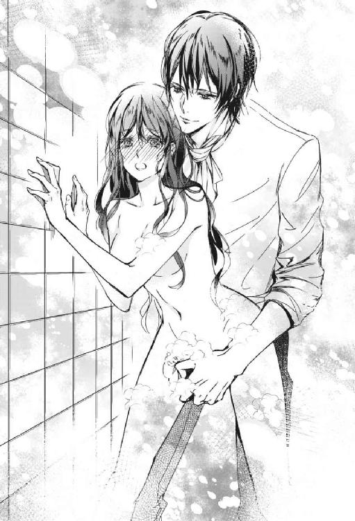
驚愕に色を失った顔がそこにあった。
「いけないことだとわかっていますか？ ヴィアーナ」
「いけなくは...ないわ。私はお兄様のことが好きで、お兄様も私を愛してくださっていて──子供の頃からの延長よ」
悪びれた風もなく言うヴィアーナは自覚がなかった。自身の肌に張りついた真紅の髪が金色のそれに、無垢な真紅の瞳が緑色に再び変わりつつあることに。
モスリーはヴィアーナの変化を目の当たりにすると、はっと目を見開き眉根を震わせ、次の瞬間、乱暴に彼女を抱き寄せた。
「合点がいきましたよ......貴女はたぶんヴァリドゥー家の......いいえ、言わないでおきましょう。何という『兄上』だ」
万死に値する、と憤りながら呟いた彼の言葉の意味を、ヴィアーナは理解できなかった。
モスリーはヴィアーナの髪をそっと撫でて色を元の真紅に戻した。
「お馬鹿さん。いいですか、ヴィアーナ。それはいけないことなのですよ。お兄様が許しても、世間が許さない。貴女は毅然として拒まなければならないことだったのですよ」
モスリーは勘違いをしている。兄が悪いのではない。私はそれを願った。私の方から押しかけた時もある。
そもそも、なぜいけないのだ。絶対の安心をくれる兄の腕の中、彼の愛撫を受ける高揚感。幸せを感じること。その延長にあたる行為が。
「どうして？」
問うものの、答えは自分でもわかっている。
「兄と妹だからですよ。子供の頃は私の方が世間知らずでしたのに、今は貴女のほうが幼いようです」
それを聞いて、ヴィアーナの心の内に罪の意識が芽生えた。
（私、お兄様にいけないことをさせていた？）
兄の抱擁は心をときめかせ、ベッドの上でなされたことは、ふたりの心の繫がりを一層強くしたような気がする。
しかし。これらはきっと、他人には知られてはいけないことなのだとは思っていた。兄のためにもモスリーに言い訳しなければならない。
「......あの......でも、あの本のような...『甘い果実』のようなことはしていないのよ」
その答えにモスリーは、安堵の吐息を漏らす。
「それを聞いて安心しましたが──もっと洗浄しなければいけませんね」
再びモスリーはスポンジでヴィアーナの背を擦り始める。
「私のヴィアーナ。ヴィアーナ、ヴィアーナ、ヴィアーナ、ヴィアーナ、ヴィアーナ、ヴィアーナ、ヴィアーナ......」
瞳に狂気を宿し、うわ言のように呟きながら。
「モスリー？ ちょ、い、痛いわ、痛いっ」
皮膚が摩擦され過ぎて痛い。赤剝けになってしまいそうだ。
「痛い痛いっ」
「ヴィアーナ、ヴィアーナ、ヴィアーナ、ヴィアーナ、ヴィアーナ、ヴィアーナ、私の、私のヴィアーナ──」
モスリーはヴィアーナの全身を再び擦り上げる。顎を、首を、肩を、腕を、太腿を、膝を、脛を。
「痛いっ！ やめてやめてっ、いやぁ」
「許しません許しません許しません、ヴィアーナ、ヴィアーナ、ヴィアーナ洗浄します洗浄します洗浄します洗浄します洗浄洗浄」
浴槽の中、泡に塗れながらヴィアーナは彼の腕から逃れようと幾度も試みた。しかしその度に執着の腕に捕らえ直される。
髪を引き摑まれた時、初めて怖い、とヴィアーナは思った。モスリーの腕は存外に力強いのだ。
（お兄様、助けて！）
「千回でも一万回でも言います。もう私を忘れないで」
しかし抱き締める彼の腕が微動しているのを見た時、ヴィアーナはわかった。
彼の絶望的な孤独とたったひとつの願いを。
私がいないと、彼は......。
「モスリー」
「──愛しています、ヴィアーナ。私が貴女を守ります」
真っ直ぐに彼女を見据え、はっきりとした声でモスリーは告白した。
これほどの純粋な思いに逆らえる者などこの世にいるだろうか。いささか卑怯な方法を取られたものの、彼は呆れるほど無垢な男だ。
兄を忘れなければならない時がきたのだ。
彼が運命の相手──。
キスを乞われて、ヴィアーナは目を閉じて顎を心持ち上げた。
冷たく柔らかな唇が重なる。幾度か押しつけられ、やがて舌が割り入って来た。
「んっ、ふ......」
抵抗せずにヴィアーナはそれを受け入れた。口の中を蠢く彼の舌の感触。
「んん......」
口蓋を舌先で刺激され、ヴィアーナの身体がびくりびくりと反応する。その動きを拘束するように、モスリーの腕に力がこもる。
身動きが阻まれ、反応は局所に集中していく。
「ん、んふ......っ」
（あ、いや......っ）
自身の微細なわななきで彼のブラウスに胸先が擦れて敏感になり、奥処が次第に潤ってくるのを感じた。
唇が離れる。名残惜しげな光る線が唇と唇を繫ぎ止める中、ふたりはしばし、見つめ合った。
「もう貴女を帰すわけには行かなくなりましたよ。『犯罪者』の元へなどね」
「お兄様のことを犯罪者だなんて......いくら貴方でも」
反駁する間を与えず、モスリーはヴィアーナを腕から解放して、すくっと立ち上がると、戸口の方へ向かう。
「エリン──エリン。こちらへ来なさい」
彼は使い魔のカラスに何事か命じると、再びヴィアーナの方へ舞い戻る。
彼のにこやかな顔が気になった。
「どうしたの？」
「エリンに貴女の姿になってもらい、代わりに帰宅させることにしました。名案でしょう？」
「そんな！」
「やがて妻となる大切な貴女を、危険な兄上のいる家になど帰せるものですか」
「すぐにばれてしまうわよ！ お兄様ならすぐに──そしたら貴方、ただでは済まないわ」
第一、カラスが化けた程度の粗雑な身代わりに伯爵令嬢のヴィアーナの役など務まるはずがない。
「一応私、当代一級の魔術師ですので。どんなに不自然なヴィアーナであろうと、兄上が変化を見破るのは容易ではない──つまり、兄上の目には、少し言動がおかしいだけの本物の貴女という風にしか映らないでしょう。なに、結婚式までごまかすことができればいいのですから、ほんの短い間ですよ。問題ありません」
「そんな......！」
モスリーは少しも譲る気などなさそうだ。
様子がおかしいだけなら、きっと兄は看破できない。なぜなら最近のヴィアーナは悩みが多く不安定で、ただでさえ周囲を困惑させていたから。
そしてヴィアーナは思い直した。自分は元から何をやっても駄目なのだ。カラスでも十分代わりは務まる。兄にひたすら怒られていればいいのだから。
もう家には帰れないのか......、とバスタブの中でヴィアーナが実家に決別しようとしていた時。
「あの、私もちょっとシャワーを浴びさせてください。泡がついてしまっていますので」
ヴィアーナが顔を上げると、モスリーが濡れたブラウスのボタンを外し始めているではないか。ヴィアーナは慌てた。
「貴女だって裸のくせに。なんでしたら後ろを向いていてくださっても結構ですよ。私もちょっと照れ臭いですし」
モスリーのペースに巻き込まれっぱなしだ。しかしヴィアーナは言われた通りに後ろを向いた。いきなり見慣れない男の裸など目の前に突きつけられたら、卒倒してしまう。
浴槽に自分以外の人間が入ってくる物音。
ヴィアーナの心臓が乱れ打ち、全身が緊張で強張る。
「ヴィアーナも泡を流しましょう」
蛇口をひねる音がして、背中に湯がかかる。
「肌、白いですね。赤と白の対比が素晴らしい」
背後からかかった声に、かあっと、ヴィアーナの頰は薔薇色に染まった。
「あ、晩御飯はちゃんと厨房に人を雇い入れていますので心配には及びません。あとで庭でも散歩しませんか？ 青い薔薇のアーチをお見せしますよ」
ヴィアーナは黙ってうなずいた。
どうして彼はこんなにも吞気なのだ。手段を選ばずに強引に貴族の令嬢を手に入れて、危険を感じないのか。
そういえば彼の通称である『黒の魔導卿』は、どう考えても一介の宮廷魔術師につけられるような通り名ではない。
魔術における革命児、大魔導師ハリアドルは別格として、魔法王国ヴァール・ドゥナにおいて、魔法使い自体はそれほど地位が高くはないのだ。貴族などは日常生活において、魔法を使うことはあまりない。
「え、ええ......あの...もう、上がっていいかしら」
このままでいると危険な行為に移行していく気がしてならない。彼は夫となる男だが、その前に心の準備が必要だ。
それに、結婚に当たっては、家庭による事前の性教育というものもあるはずだ。やはり家に帰らなくてはならないのではないか。
「なぜ？ 一緒に上がりましょうよ」
「いいえ、先に上がるわ。後ろを向いていて」
言って、バスタブから上がろうと立ち上がったその時。
「お待ちなさい、まだ泡が」
彼に二の腕を摑まれヴィアーナは驚いて心臓が口から飛び出そうになった。そして動揺して慌てふためいた際、見てしまったのだ。
象牙の彫刻のように、腹筋やその他の筋肉の線がうっすらと陰影を作る、芸術品のような肉体のその中心で、夢想を破壊するほど強力に自己を主張するもの──ヴィアーナは思った。まるで破城槌だ。
これにかかればどんな城門もあっという間に打ち破られて、城は陥落してしまうだろう。それほどの硬度に見えた。今なお、脈打つ度に質量が増している。
（怖ろしい......武器......）
「あの......ヴィアーナ？」
凝視するヴィアーナに、モスリーは少々息を荒げながら困惑気味に声を掛ける。
はっ、とヴィアーナは目を反らす。しかし遅かった。
「処女の癖に視姦なんて高度なことしないでくれますか......」
モスリーは言葉を途切らせて、う、と小さく呻いた。
気まずい沈黙が流れる。
「どうぞ、先に上がっていてください。ひと仕事してから参ります──目を閉じてますから」
頭から浴びるシャワーを冷水に切り替え、モスリーはふぅ、と艶やかに息を吐き、壁に背を預けて目を閉じ、顔を上げて冷水を顔面に受けた。
「男の人の事情はよくわからないけど──それじゃ」
バスタブを跨ぎ、立ち込める湯気の中、ヴィアーナは浴室を出て行った。
※ ※ ※
その間、ヴァリドゥーの屋敷では、ヴィアーナに扮したカラスのエリンがハディールたちと晩餐を囲んでいるところであった。
続々と料理が運ばれてくる中、エリンは食器を上手に使いこなし、次から次へと皿の上の食べ物を平らげていく。
「お前がまた倒れたと聞いて、びっくりしましたよ。誰かを迎えにやらせるところでした」
ヴァリドゥー家の夫人、ヴィアネーラは案ずるように向かいの娘に声を掛ける。
他の追随を許さない弓なりの眉。赤い睫毛に縁取られたルビーの瞳は周囲を睥睨し、口角の上がった優艶な唇からは堂々とした言葉が紡がれる。総じて大輪の真紅の薔薇のように豪華な貴婦人だ、とエリンは心の中で思った。
（これは......ご主人様の母君といい勝負だわね）
「もう平気よ。今をときめく宮廷魔術師様が、ご自分のお屋敷で休憩させてくださって、それはそれは優しく介抱してくださいました」
「先生の甥御様の......お礼は申し上げましたか？」
ヴィアネーラは執事に尋ねた。
ハディールは無言であった。無言のまま、威圧するようにエリンを睨んでいる。
それにしても凄まじい眼力だ。彼の筋肉質で威風堂々たる体格にも圧倒されて、エリンの心臓は先ほどから縮み上がっていた。睨まれてさえいなければ、彫り深く、男ぶり華やかな顔立ちに主君への忠誠も忘れてよろめきそうなのだが。
（さすがは猛禽類のご一家。ご主人様の石化の魔眼に匹敵する眼力だわね。おふたりともお美しいですけれど、エリン、そろそろ家に帰りとう存じますわよ）
「ハディールや、どうしました。妹を睨んだりして。少しは労わってあげたらどうですか。貴方ったら、ヴィアーナが倒れたという知らせを聞いた途端、カルフィークを出せと騒いで、その後すぐにヴィアーナが帰ってきたけれど、そうしたらむすっと黙り込んで」
カルフィークとは伝説の炎の竜の名だが。おそらく目の前にいる当主の愛馬の名だろうとエリンは推察した。
「母上、私は交霊会に行くのを反対していたんですよ。それなのにこいつときたら。しかも、よりによってあいつの世話になるなんて」
「わたくしが許可したのです。正直気が進みませんでしたけど、ヴィアーナが外へ出る機会を阻んではいけないと思って。ですから、責めるならわたくしをお責めなさい、ハディール」
「母上には敵いませんね。しかし私は、この家の当主です。以後は私の決断を尊重していただきたい」
「わかりましたよ。貴方最近、お父様に似てきましたね」
ヴィアネーラはうっとりとした眼差しで息子を見つめた。
（ここは美男美女の家系なのね。あの令嬢は十人並みだったけどガァア、伯爵令嬢じゃなかったら、とてもご主人様の隣に立つような女じゃないわぁガァア）
やがて、ヴィアネーラが貧血かもしれない娘のために厨房に提案したという、野うさぎのレバーのソテーも食べ終え、出て来た料理を全てを平らげたエリンは自分の部屋へと向かう。エリンは先ほどまで休憩していた、リボンや薔薇の模様の壁紙の、可愛い家具の並ぶ令嬢の部屋がいたく気に入っていた。
「これからしばらくの間、お姫様暮らしができるってわけねガァア。収拾つかなくなる前にご主人様が何とかしてくれるでしょうから、気楽に楽しみましょ」
階段を上り切り、廊下を歩いていたエリンがふと顔を上げると、行く手に仁王立ちで待ち受けている人影があった。ヴァリドゥー伯爵だ。先回りしたのか。相変わらず険悪な表情だ。
「まあっ、どうなさいましたの、お兄様っ！ 怖ろしいお顔っ。もしかして、わたくしを叱るおつもりかしら」
身振り手振りを加えたが、少し棒読みの台詞になってしまった。とどめにくるりと一回転して愛嬌を振りまくくらいするべきだろうか。
「たいがいにしろ」
小声で恫喝するようにハディールは言った。
「えっ？」
耳を疑いつつも嫌な予感がしてエリンの体は無意識のうちに回れ右をしていた。
「待て」
次の瞬間、エリンの足が床に貼りつけられた。
（ご主人様、猛禽類の目はごまかせないみたいですよっ！）
冷や汗をかくエリンの背後から、つかつかと恐怖の足音が近づく。
「お前は何者だ。ピーマンを美味そうに食べる妹など私にはいないぞ」
肉料理に添えられた付け合わせのピーマン。出された物は食べる主義だったエリンは、全てを満面の笑みで食べてしまったのだ。
「帰って来た妹の様子が何やら妙なのでな、試しに入れてみるように厨房に言いつけたのだ」
「なんて嫌な感じに頭のいい人でしょうね、ガァア」
エリンははっと口を塞ぐ。しかし遅かった。
ハディールはエリンに摑みかかると、喉元を絞めて大いに揺さぶった。
「ぐへ」
「私の妹をどうした！ ここをヴァリドゥー家と知っての狼藉か!?」
白目を剝いて気を失いかけているエリンに向かって怒鳴ると、エリンは魔法の炎に包まれ、あっさりと変化が解けた。
弱ったカラスがハディールの足元へぽとりと落ちる。
「カラスだと？」
彼はカラスを拾い上げると検分し始めた。
「カラスにしては相当の魔力だ。怒りに任せなければ私でも変化を解くのには苦労しただろう。このカラスは見覚えがあるぞ。シメンドゥール......ヴィアーナはまだ奴の家にいるのか！」
おのれ大切な妹を、とハディールはカラスを床に乱暴に打ち捨て、使用人に馬を引くように命じた。勇ましい声は怒号のように廊下に響き渡った。
一命を取り留めて死んだふりをしていたカラスのエリンはハディールの姿が消えると窓から飛び立った。
※ ※ ※
「あ......っ」
枕元の明かりのみの薄暗い寝室のベッドの上、モスリーの膝の上に跨って向かい合わせで座ったヴィアーナは背を仰け反らせる。はだけた彼女の夜着の胸元に、彼が顔を埋めている。冷たい唇の感触。
ヴィアーナは身体の至るところにモスリーから執拗なキスを受けていた。浴室から出ても彼の暴走は結局止まらず、ふたりで果実酒を飲んだ後、スポンジで擦り過ぎた肌を落ち着かせるためにと乳香を配合したクリームを塗り込まれ、それがやがて愛撫となり、今に至る。
いつの間にか露わにされた胸先が尖り、彼の荒い息がかかると、ヴィアーナは身をよじらせた。それだけで、感じる。体が熱くて、堪らない。
「ヴィアーナ......敏感過ぎですよ」
蕩けた目で、モスリーは尖ったそれを口に含む。
「ん、あぁ、あ」
彼の首に手を回し、髪を振り乱して切ない声を漏らしていると、ふいに夜着の下で自分に触れた何かに、ヴィアーナは身を固くする。
先ほど浴室で見たものだ。ヴィアーナは彼のバスローブの合わせから屹立したそれの、熱く猛った生の感触に身震いする。ふたりとも衣服の下には何も着けていない。
「最後までいきたいのは山々ですが、正式な妻となるまでとっておきましょう」
苦しげにモスリーは囁く。しかしヴィアーナはそれが耳に入らないのか、自らの身体を揺り動かしていた。
「あ、これ、ヴィアーナ、何を」
目覚めさせられたヴィアーナの欲望は積極的になり、彼の身体にしがみつくと、ねだるように腰を動かした。モスリーもまた彼女の腰を摑む。
「ぁああ、ぁああっ」
敏感な部分に触れる生の刺激が、堪らない。
「──呪殺と毒殺がお家芸のシメンドゥール家です。媚薬の一滴くらいご愛嬌でしょう。しかし、よく効いていますね」
室内にふたりの立てる淫靡な音が響き渡る。
「ああ──」
ヴィアーナは夢中で彼のそれを味わっていた。この刺激をずっとずっと味わっていたい。
もっと、さらなる悦楽を。しかし自分の体はとどのつまり何を求めているのかわからず、もどかしい。体の奥で熱狂的なひと時が待ち受けているような気がする。まだ、はっきりとはわからない。
「もう、何とかして......ぇっ」
自分でも信じられないような淫らな声で、モスリーに懇願する。
擦る度に質量を増していくそれを、ヴィアーナは腰をうねらせ、自身でさらに愛撫した。肌に突き刺さる、彼の意外に野生的な茂みの感触が羞恥を煽り立てる。
「モスリー、お願い......お願いっ」
そんなヴィアーナの痴態を、モスリーは情愛の瞳で見つめていた。
「そんなに欲しいのですか？」
「んん、んふ......」
「何が欲しいのか、はっきりおっしゃい。そうすれば今日この日を私達の初夜にしてもいいですよ」
嗜虐的な声がヴィアーナの奥処を刺激し、蜜を溢れさせる。
「んふっ、ぅう......っ」
ヴィアーナの花弁が、彼の熱塊を挟み込んで、咀嚼するようにうねる。
「い、いや......あっ」
（ごめんなさい、お兄様......）
「はしたない処女もいたものですね。おっしゃい、何が欲しいか」
モスリーの意地の悪い言いように、ヴィアーナの瞳が俄かに潤む。
冷静さを装っているが、彼の額には汗が滲んでいた。
「......なに......って、ぁあ、あ、名前、わからない、わからない......っ」
『甘い果実』には何と書いてあったろうか。思い出せないのが口惜しい。
「意地悪なモスリー......っ」
欲しいのよ、と咽び泣きながらヴィアーナは腰を揺すった。必死に訴えているというのに、どうして彼はこんなに意地悪なのだろう。
モスリーの瞳がふいに和らぐ。
「......しょうのない駄々っ子ですね......」
眉を寄せ、弾けそうな衝動に耐えながら、モスリーはヴィアーナをシーツの上にそっと押し倒す。
「私の方も我慢の限界......お望み通り、今宵を初夜としましょう」
「わかった......それ......破城槌......」
朦朧とした声でヴィアーナは訊く。意識が靄の中に包まれているようだ。つい思っていたことを口走ってしまう。
「破城槌って、貴女。例えがべら棒ですね」
彼は闇に溶けるような声でくすくすと笑う。投げ出されたヴィアーナの手を取り、キスする。縋るように頰擦りする。
「まあ、確かに処女を奪うのは城攻めに似ていますね。無血で攻略するよう努めますのでご協力ください」
シーツの上にしどけなく横たわったヴィアーナは、自分を組み伏すモスリーを濡れた瞳で見上げている。誘うような唇。はだけた白い胸元からは薄紅の小さな乳暈を覗かせて。
モスリーは彼女の手に頰を寄せながら、横目でその様子を見て、息を飲んだ。
「貴女を殺したいくらい愛しい。覚悟はできていますか？」
モスリーが頰擦りしていた手を解放すると、ヴィアーナは小さくうなずき、覚悟を決めた。出会ってからまだ数日だが、とうとう彼の物になってしまう時が来た。
朦朧とした意識の中で、彼の面影を遠い記憶の中に見出した。
「ヴィアーナ、明日は百貨店を貸切にして、一緒に指輪を選びましょうね」
愛しています、と囁き、モスリーが彼女の夜着を剝ぎ取ろうとしたその時。
屋敷の外で男の声が響いた。
「騒がしいですね」
モスリーは眉を顰めつつ起き上がるとベッドから降り、急ぎ椅子に掛けていた黒いガウンを羽織る。
「待っていてください。部屋から出ないように」
※ ※ ※
月が照らす夜の道を、真紅のマントを翻し、炎の鬣を持つ愛馬カルフィークに乗って疾駆したハディールは、瞬く間にシメンドゥール公爵邸へ到着した。
「押し通るぞ！」
叫びながら勢いに任せて錬鉄の装飾的な門扉を蹴破り、仕掛けられた魔術の網などものともせずに、荒ぶる真紅の美丈夫は世にも恐ろしい形相で中へと突き進む。炎の鬣、炎の吐息のカルフィークの蹄鉄は、屋敷まで続く石畳に次々と亀裂を生じさせた。
「何ごとですか、騒がしい──おや」
屋敷の玄関前に黒い霧が出現し、次第に人の形を取り、やがてこの屋敷の主人の比類なき麗姿となった。彼は突進して来る馬に全く慌てる様子もなく、微塵も動かずに待った。
馬はモスリーを跳ねる寸前で主人に手綱で御されて大きく傾ぎ、いななきと共に前脚が宙を搔いて止まる。
「これはこれは、ヴァリドゥーの真紅の伯爵ではありませんか。お久し振りです」
馬上のハディールに、モスリーは鷹揚に語りかけた。
第七章死の求婚
ヴィアーナはほんの一時、夢を見ていた。
ヴィアーナが目を覚ますと、そこはヴァリドゥー家の自分の部屋だった。ゆっくりと身を起こす。
長い夢だった。夢の中で宮廷魔術師モスリーから婚約を申し込まれた。彼との甘やかな夜がまさに始まろうとしていた。
（なんだ、夢だったのね）
ヴィアーナはほっと胸を撫で下ろす。
ロンドデリル男爵の茶会でモスリーと再会してから、彼の夢ばかり見る。紫色の魔眼に心を奪われてしまったのかもしれない。
（今、何時かしら）
ベッドの傍らのテーブルを見るが、いつもの場所に置時計がない。部屋の中を見回して探したが、やはり見当たらない。
その時、ドアがノックもなしに開いた。
銀色の滝のような髪に、純白のローブを纏った魔導師ハリアドルが無言のまま入って来る。
いつもの彼とはどこか様子が違う。
紫水晶の瞳は何の感情も湛えておらず、少しも笑っていない。超越した冷たい美しさだ。
彼の手には冴え冴えとした抜き身の剣があった。
ただならぬ様子に、思わずヴィアーナはベッドの上で後退さる。
「先生......？」
ハリアドルは少しの音も立てず悠然と、ヴィアーナのいるベッドに歩み寄る。
「どうなさったんですか、先生。何の御用で......」
ヴィアーナは彼を信じていた。その瞬間が訪れるまで。
ハリアドルは何も言わず、手にしたその剣でヴィアーナの胸を、心臓を刺し貫いたのだった。深々と刺し貫いた直後、一気に引き抜く。凍てついた男が一瞬見せた、残忍な顔。
仰け反ったヴィアーナの胸から華々しく中空に舞ったのは、赤い薔薇だった。薔薇の花びら。
「せ......ん、せい」
ヴィアーナはとっさに胸を押さえる。しかし花びらは次から次に溢れて、ベッドの上を覆い始める。ベッドが一杯になると床に散乱する。
傷口は痛くなかった
「この赤い薔薇の花びらの、ひとひらひとひらは、この家での君の記憶。ヴァリドゥー家のヴィアーナとしてのね」
傲然とヴィアーナを見下ろしながら、低く、ぞっとするほど優しく、しかし慈悲などひと欠片もない声でハリアドルは言う。
「先生、このままじゃ、部屋が薔薇で溢れ返ってしまいます」
見ると、溢れ出した花びらは徐々にかさを増し、もうドレッサーの椅子の、赤いビロード張りの背もたれの辺りまできている。いや、もう入り口のドアの半分あたりまで。ベッドはすでに、花びらの下に沈んでしまった。
「君には美しい思い出がいっぱいなんだね」
銀色の睫毛の奥の瞳が、ほんの一瞬、慈しみを見せる。
「......せんせ......い？」
このままじゃ、溺れてしまう。赤い薔薇の花びらに。
「ごらん。憶えているだろう？」
──真紅のひとひらに過ぎし日の幻影が浮かぶ。屋敷の中、少年時代の兄との隠れんぼ。ああ、すぐに見つけられてしまって。
もう薔薇が、腰の辺りまで。
──また、ひとひらに想い出が浮かぶ。庭で傷ついて飛べなくなった雀を保護した。けれども世話の甲斐なく死んでしまったのだ。哀しみにくれる私を抱き締めてくれた母の温もり。
──母と兄と屋敷の者達から祝ってもらった誕生日。テーブルには母が腕によりをかけた手料理がたくさん。
薔薇の、しっとりとした香気が部屋に満ちる。
──休日に学院から帰って来た兄が愛馬カルフィークに私を乗せて、花咲く野辺を駆けた時の光景。ふたりとも、共に笑顔だ。野原の向こうには川が淀みなく流れている。
──兄がダンスの稽古の相手をしてくれた時のこと。執事の奏でるピアノの旋律に乗せて、兄のリードに甘えて、私はただただ悪ふざけばかりしていた。妹を見つめる兄の瞳の限りない優しさ。
──光射す午後の窓辺に立つ、物思いに耽る兄の横顔。初めて感じたときめき。
──薔薇の棘に傷ついた指先を、兄がそっと口に含んでくれた甘美なあのひと時。
もう花びらが胸の辺りまで。首まで。
（いけない）
部屋から出なければならない。このままでは危険だ。
けれど、ひとつひとつの思い出に囚われて、立ち上がる機会を逸してしまった。もう、身動きが取れない。
「せんせい、このまま、じゃ、溺れて、窒息してしまいます......助けて」
ヴィアーナは顔を上げて、薔薇の海から必死に助けを求める。むせ返る香気で苦しい。助けて。
「死なないよ。もとい、死なないはずだよ、君が本物のヴィアーナならね。鮮やかで美しい自分の思い出なのだから」
「あ......苦しい」
「今、苦しいと言っているのは誰だい？ いい加減、気づきたまえよ」
薔薇に埋もれながらも、ハリアドルはまったく動じず、冷ややかに問い掛ける。
「あ......私は、私は──」
苦しいと思うのは誰だ。
この花びらはヴィアーナの記憶であって、ちっとも苦しくないはずなのに。
花びらの海に無理やりに押さえ込まれてしまうもの。
ヴィアーナの心の奥底で、確かにここにいるのだと主張する者がいる。
「私は......グレリット村の......娘......」
（グレリット村？ 聞いたこともないわ）
どうしてそんな思いも寄らない言葉が口を突いて出るのか。
「いいえ、いいえ、私はヴァリドゥー家の......」
抵抗するが、溺れかけている心の中にいるもうひとりの自分がヴィアーナを押さえ込んで赤い海から出て呼吸しようとする。
「君の名前は？」
「エリン......私の名は...エリン......ヴィアーナじゃ......ないわ......地上に住んでいた......私は、にんげん、にんげん、よ」
※ ※ ※
ヴィアーナは目を覚ました。暗い部屋の中、まず、青い布張りの、ボタン締めが幾つも施されたベッドの天蓋が目に入る。天蓋の四方は青い絹が襞をなして垂れていて、支える四本の柱には金箔が施されている。ヴィアーナのベッドは、こんなに豪華ではない。ここはどこ。
「私......」
身を起こして、ヴィアーナは辺りを見回す。美しい曲線を描く黄金の飾り棚には時計から取り外された秒針のみがぽつりと置かれていた。
黄金に縁取られた楕円の鏡、黒大理石の暖炉、その他、マホガニーや紫檀の豪華な調度類。
「ここは、モスリーのお家だわ」
では、やはり結婚を申し込まれたのは夢ではなかったのだ。
体の至るところに彼の痕跡を感じて、ヴィアーナは羞恥心が突如湧き起こって我が身を抱き締めた。
（どうして私、あんなことを）
泣きそうになりながらふと脇を見ると、ベッドの傍らの黄金のテーブルに酒瓶とグラスがふたつ置かれていた。確か、モスリーに勧められて一口飲んだ。
ひょっとすると、もうこの身は奪われてしまったのかもしれない。眠っている間に。目覚める寸前に何か物音がして、モスリーが出て行ったような気もするが、その辺りの記憶が定かではない。
シーツに一滴落ちている赤い染みが、酒を零したものなのか、ヴィアーナの零したものなのか、薄闇の中で判然としない。だがおそらく。
ヴィアーナの胸に喪失感が押し寄せた。
（さようなら、お兄様。ヴィアーナはもう......）
諦めにも似た気持ちで兄に別れを告げた時、ふいに人の声が聞こえてきて、ヴィアーナは耳を澄ました。
兄ハディールの声だ。
心がざわめきだす。
「お兄様？」
もしかすると、もうカラスのエリンが化けたヴィアーナを見破ったのだろうか。それでここへ怒鳴り込みに来たのではあるまいか。
怒っているような声が聞こえる。
ヴィアーナは夜着の乱れを直しつつ、急いで部屋を飛び出した。
※ ※ ※
玄関のドアを開けたヴィアーナの目に飛び込んで来たのは、月明かりの下、真紅のマントをまとった怖ろしい形相の兄が、愛馬カルフィークから降りる姿だった。手前には兄と対峙する黒いガウンを羽織ったモスリーの背が見える。
「何のことです？」
「しらばっくれるな！」
怒声と共に、ハディールがモスリーに摑みかかろうとしたその時だった。ヴィアーナは叫んだ。
「お兄様！」
玄関の扉から走り出て石段を降りて来たヴィアーナを見て、モスリーは軽く舌打ちする。
「出てきてはいけないと言ったはずです」
「ヴィアーナ、無事か」
ハディールは安堵の表情で妹を抱き止めようと両手を広げる。しかし、モスリーがその胸に飛び込もうとするヴィアーナの肩を摑んで阻止した。
「いけません、ヴィアーナ」
モスリーはハディールに白い目を向けながら、ヴィアーナを保護するように抱き締める。
「何だ、そのあからさまな態度は」
ハディールはいぶかしむ目つきでモスリーに問う。そして、ヴィアーナが夜着姿であることに愕然とする。
「事情はヴィアーナから聞きました。貴方のことはひと目置いていましたのに。本当に、なんて汚らわしい『兄上』だ......」
非難めいたモスリーの台詞に、ハディールは色を失った。
ヴィアーナは自分の行動を激しく後悔した。兄とのことをモスリーに話すのではなかった。ずっと胸の内に秘めておけば良かった。
「モスリー、お兄様のこと、悪く言わないで。それは私が悪いのであって──」
ヴィアーナは震える声で息を継ぐ。言わなければ。別れの言葉を。
決意を固めてヴィアーナは兄をしっかりと見据えた。嫌な予感がしたのか、ハディールは息を飲む。
「──お兄様。ヴィアーナは、宮廷魔術師様にプロポーズされました。それをお受けしなければならない理由もできました」
モスリーの腕の中、ヴィアーナが透き通った可憐な声で罪を告白するように述べる。その衝撃に、ハディールの目が大きく見開かれた。
「マジか......」
放心したようにハディールは言った。
（ごめんなさい、お兄様。こんな形でご報告しなければいけないなんて）
けれども、もはや夫となると決まった者と兄が衝突などして欲しくないのだ。
「あ、あの、説明が遅れましたがヴィアーナ、兄上はご存知でしょうが、私、趣味で宮廷魔術師をやっていますが、正式な地位は公爵です。趣味に没頭するあまり、忘れていたのです。決して馬の骨などではありませんので、悲観せずに安心してください。その......つまり、貴女はシメンドゥール公爵夫人になるということです。胸を張って、良いのです」
モスリーは頰を赤らめて照れくさそうに言った。
「えっ......あ......訂正します、お兄様。公爵様にプロポーズされました......」
公爵とは伯爵よりも位が上だったろうか。どうだっただろうか。
「もう、よそへは嫁げないようなことも......しました...捧げました。もう、ヴィアーナはこの方のものです」
「貴女との将来のために身分を思い出したんですけど、何だか、貴女にはどうでもいいみたいですね。ますます好きになってしまいますよ。それにしてもヴィアーナ......貴女ひょっとしてさっきまでの記憶が......まだ途中......」
モスリーが弱ったような顔をした刹那、誰にも悟られぬように老獪に笑んで、ならばいっそ好都合、と口だけ動かして呟いた。
「だから、お兄様。ヴィアーナはこの方の元へ嫁ぎます。もう他には行けません」
言いながら、ヴィアーナははらはらと涙を流す。母や兄から、あんなに大切にしてもらったのに、裏切るような行いをしてしまった。
モスリーは、自分の腕の中で俯くヴィアーナの真紅の髪を、愛おしむように撫でる。
「ヴィアーナ、ごめんなさい。やはり、ちゃんと結婚まで待つべきでしたね。貴女があんまり魅力的なものですから......結婚前に私のものにしてしまいましたが、きっと大切にします。誓いますよ──というわけで」
直後にモスリーが紡いだ呪文により、俄かに空気が揺れ動き、ハディールは突如、身を翻した。
「お兄様と呼ばせてください」
間一髪。風に翻ったハディールの真紅のマントの一部が石化してぱらぱらと地面に落ちる。
「攻撃しながら言う台詞か!?」
「反射神経の良さはさすがですね。私、たまに言動が一致しなくなるんです」
モスリーが不満げに鼻を鳴らす。
「ヴィアーナの夫に貴様なんぞ絶対に認めん！ 第一、順序が逆だ！」
怒りの叫びが屋敷にこだました。
「そう言うと思いましたよ。ならば致し方ない。先祖伝来の方法を取らせてもらいます──ヴィアーナ、ごめんなさい。これだけはするまいと思っていましたが」
モスリーは身を屈ませると、ヴィアーナの白い首筋に歯を立てた。
あまりにも突然のことで、ヴィアーナは自分の身に何が起こったか理解できなかった。
「きゃあああっ！」
天へ向けて垂直に上がる、絹を裂くような悲鳴。
「ヴィアーナ！」
ハディールが叫ぶ。
モスリーの唇がヴィアーナの首筋から離れた直後、その嚙み跡からごお、とおびただしい量の青い薔薇の花弁が吹き上がる。月夜に美しく。妖しく。
モスリーの狂おしい眼差しと、彼の腕の中にいる真紅の令嬢ヴィアーナの驚愕におののく瞳が向かい合う。永遠のような一瞬。
「──ヴィアーナをお返ししますよ」
モスリーがしばしのお別れです、と茫然自失状態のヴィアーナの背中をそっと押す。躓きそうになりながらもよろよろと兄の元へ歩む妹を、慌ててハディールは抱き止めた。依然として、彼女の首筋からは、色こそ違えど血の飛沫のように青い花弁が溢れ続けている。
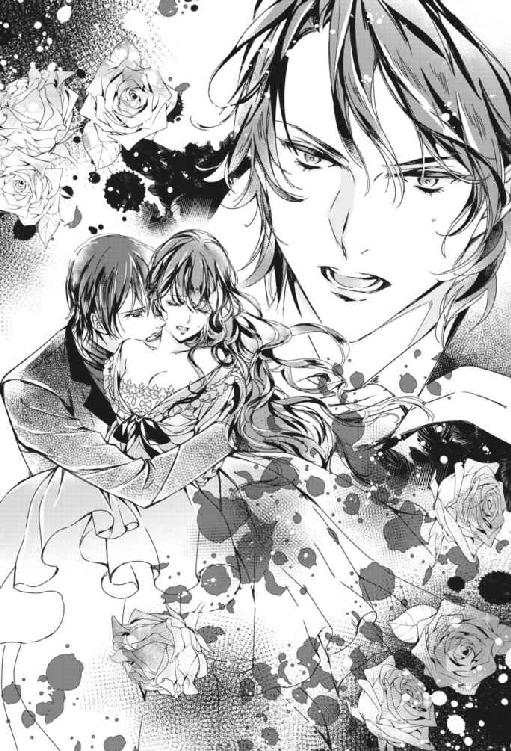
「我が家のプロポーズのしきたりをご存知ですか？ お兄様。死への刻限付きです。青い花弁が体から吹き出すたび、徐々に体から温もりを奪っていくのです」
「......噂で聞いたことがある。誰もお前の家に娘を嫁がせたいと思う者がいなかったから、無理矢理こんな強硬手段を取っていたらしいな」
妹の背を撫でて宥めるハディールの腕は、震えていた。
「──おっしゃる通りです。ですので、どんなに娘御が愛おしくてずっと手元に置いておきたかろうと、お身内は娘を死なせたくなければ引き渡さねばなりません。猶予は体内に宿る魔力に比例しますので──そうですね、ヴァリドゥー家ほどの大貴族の令嬢ならば一ヶ月は持ちこたえるでしょう。ご安心ください、本人が魔法を使える使えぬに関わらずです」
「ヴィアーナは......ヴィアーナは......なんだぞ......」
悲痛な面持ちでハディールは呟く。瀕死の小鳥を抱くように、その腕に力を込める。
モスリーは片方の口の端を上げた。
「ご事情でも？」
「いや......」
ハディールは寒さに震え始めた妹に自分のマントを脱いで着せてやると、再び強く抱き締めた。その様子に、苛立ったようにモスリーは眉を寄せる。
「妹君が大切なのなら、どうか早めに私にお引き渡しください。一生大切に致します──ヴァール・ドゥナで最も華やかな結婚式を挙げてみせますとも。無論、国王の挙式に準じたね。それまでの間、もし彼女に無体な真似をすれば──私はお兄様を一生お怨み申し上げますよ」
おわかりでしょうね、とモスリーは魔眼で彼をきつく睨む。
馬鹿馬鹿しい、と毒づきながらハディールは妹を先に馬に乗せると、次いで自分も飛び乗って手綱を取った。
「貴様を殴りたい気持ちで一杯だが、今日のところは引き上げる」
「良いお返事をお待ちしておりますよ」
返事をせずにハディールは馬首を翻す。
次の瞬間、モスリーの呪文でヴィアーナの全身に膜がかかった。
「やはり信用なりませんのでヴィアーナに保護膜を施しました。不可視の全身貞操帯です。よこしまな気持ちで彼女に触れたら、たちまちにして石化しますからご注意ください」
もげるくらい何して落ち着け、と罵声を浴びせ、ハディールは屋敷をあとにした。
炎の馬は兄と妹を乗せてヴァール・ドゥナの夜の街中を疾駆する。
一向に眠る気配を見せない街の賑わいの中、ハディールは凄愴な表情で腕の中の青白い顔をした妹を案じていた。
ヴィアーナは兄の腕の中で、自分の真紅の髪が風にたなびき、首筋から次々と吹き零れる青い花弁がさらりと後方に流れていくのをぼんやりと見つめながら、身体が徐々に冷たくなってきているのを感じた。
「お兄様......寒い......」
もう、身体の芯から凍えてしまいそうなほどに寒い。歯の根が合わずかちかちと音を立てる。
先刻、モスリーは一ヶ月は持ちこたえられると言っていたが、ヴィアーナにはとても信じられなかった。定期的に心の臓が不吉な冷感を帯びて、その度にどきどきとしては命を削るように鼓動を早める。
「寒い......」
妹の悲壮な訴えに、ハディールは顔を歪ませ今にも泣きそうな顔をした。どんな哀しみもものともしなかった、強い兄が。
「お前は死なせない。絶対に。帰ったら暖炉で温まるんだ。そして、母上にちゃんとご報告するんだ。さぞ驚かれるだろうがな。さっきはついかっとなってしまったが、公爵なら相手にとって不足はない」
多少問題のある奴だが、と無理に笑う兄を見て、ヴィアーナの胸に哀しみが広がった。
「だが、これだけは言わせてもらう。母上と私は、お前を国王陛下のお妃として差し上げられるくらい、大切にしてきたつもりだ。忘れるな」
返事の代わりにハディールの胸に頰を寄せたヴィアーナの瞳から涙がひと粒、流れ落ちた。
※ ※ ※
兄に抱かれてヴァリドゥー家に帰還したヴィアーナは、出迎えた母ヴィアネーラの驚いた表情に胸が痛んだ。母は娘の首筋から零れ落ちる青い薔薇の花びらを見るなり、死の求婚、と叫んで気を失ったところを執事に支えられた。
ヴィアーナはすでに暖炉に火がくべてある応接室のソファに降ろされた。その間にヴィアーナの部屋を暖めるとのことだ。厳しい顔つきのハディールは無言のまま部屋を後にすると、意識を取り戻した母を気遣いながら連れて来る。彼女の顔は青ざめ、足取りも覚つかない様子である。
やがてふたりはヴィアーナが座る向かいの椅子に腰掛けた。
「──お気を確かに、母上。もう、言わずともおわかりでしょうが、聞いてください。突然ですが、ヴィアーナはシメンドゥール公爵に求婚されました」
「さっきまでヴィアーナは私達と一緒に食事をしていたではないですか......それがなぜ......一体何がどうなっているのかしら。もちろん、シメンドゥール家は存じています。あの青薔薇の...絶世の佳人と謳われた婦人がおられたお家ですね......」
「ちなみに、そのシメンドゥール公爵というのは、魔法学院で私と共に学んだ......ハリアドル先生の甥です」
んまあ、とヴィアネーラは驚きに体を仰け反らせる。
「紫の瞳は偉大なる魔力の証といいますから、大魔導師様くらいの方なら当然そんな瞳をお持ちなのだろうと思っていましたが、やはり先生は王家のお血筋でいらっしゃったのね。そんな方にヴィアーナのお勉強を見ていただいていたなんて......なぜ言わなかったの、ハディール。公爵家の当主からの求婚は素晴らしいことではあるけれど、こんなに早く娘を手放すことになるなんて......」
ヴィアネーラはさめざめと泣きながらかぶりを振る。動揺が収まらないようだ。しかし数秒後、彼女は背筋を正し、口元に母親らしい気丈な笑みを湛えて娘を見つめた。見つめられたヴィアーナも、寒さに震えながらも姿勢を正す。
「怖ろしい噂は名家にありがちなこと、公爵様からの求婚は一も二もなくお受けしなくてはなりません。呪いは貴女がそれだけ強く望まれたということなのでしょうから、光栄に思うべきです」
「呪いは呪いですよ、母上。卑劣な手段だ」
ハディールが母の言葉をさえぎる。
「早くお返事をすればいいことです。お返事さえすれば呪いを解除され、ちゃんとした婚約期間をいただけるかもしれませんし......でも期待してはいけませんね。そうと決まれば、花嫁学校の講師を呼んで、至らないところを短期間で仕上げてもらわなければ。花嫁衣裳は──」
「何を吞気な」
ハディールがどん、とテーブルを拳で叩く。
「どうしたのです、ハディール。妹に先を越されて慌てているのですか？」
いつもの彼女に戻った母が息子を揶揄する。ハディールは言葉に詰まり、瞳をおののかせた。
母と兄のやり取りを聞きながら、ヴィアーナは兄のマントの中で身体をちぢこまらせた。室内は暖かいが、ヴィアーナの芯まで冷えた体は依然として冷たい。指先や爪先はすでに感覚を失っている。
妹の唇が紫色になっているのに気づいたハディールは、開かれたドアの方を見やり、すでに戸口に立っていた使用人と合図を交わした。
「ヴィアーナ。部屋の暖炉の準備が整ったようだ」
ハディールは立ち上がると歩み寄って、再びヴィアーナを抱き上げた。
自室に運ばれてベッドに降ろされると、ヴィアーナはそこでようやく安堵の吐息を漏らした。応接室よりも温かい。見るとストーブも置かれ、その上で湯が沸き、加湿もされていた。
ハディールはヴィアーナからマントをはぎ取り、夜着一枚にした。すると、彼女の白い胸元に、モスリーが付けたらしい幾つもの接吻の跡があった。ヴィアーナはとっさにそれを隠そうとしたが間に合わなかった。激高したハディールは妹の頰を打った。
鋭い痛みに、ヴィアーナは頰を押さえた。今ならわかる。以前、兄がヴィアーナの衣服をはぎ取って身体を確認した意味が。兄が危惧していたことが。
ハディールはよそよそしくヴィアーナに布団に入るように促した。
「お兄様......」
ごめんなさい、という言葉が出ない。言えば、さらに兄を傷つけてしまいそうな気がする。
ハディールは妹の涙に揺れる瞳から逃げるように背を向けた。そしてそのまま部屋を出て行く。
「お兄様！」
その背に呼びかけるが、無情にもドアは閉められた。
兄との間に厚い壁ができてしまった。それは、もう永久に取り払われることがないかもしれない。
ずっとあの温かい胸の中にいたかった。
恋していた。
「そうよ。私はお兄様に恋していた」
恋い慕う気持ちは消えないけれど、諦めなくてはいけない。
（こんな気持ちのままお嫁に行かなくてはならないなんて）
寒い。寒い。心の中の寒さと同調するように、身体がしんしんと冷えてくる。布団の中にいてもまったく温まる気配がない。凍りつきそうな寒さだ。
枕元を見ると、自分の首筋から勢いも衰えることなくこぼれ続ける青い薔薇で覆い尽くされている。ベッドに収まりきらずに、床にも零れ始めている。そのうち部屋中が花びらで埋め尽くされてしまうだろう。
「寒い......もっと......部屋を暖めて......」
人を呼ぶためにヴィアーナが廊下に向かって声を掛けようとしたその時、ドアが開いた。
現れたのは、銀髪を長く背に垂らし、純白のローブを纏った大魔導師ハリアドルだった。金の杯を手にしている。ヴィアーナの脳裏に束の間の夢に見た光景がよぎり、身を起こした。
「せん......せい」
「大丈夫？ ヴィアーナちゃん」
その温かい声にヴィアーナは緊張をゆるめる。そう。あれはただの夢。
「この度はごめんね、うちの甥が。我儘な子だから。言うのを忘れたね、大魔導師として世俗を離れている僕の元々の地位は、モスリーが継承している。あの子は好き勝手やってるけど、実は権力者なんだ」
そうだった。モスリーは彼の甥なのだった。ヴィアーナはとんでもありませんと首を振る。デビュー前だが、分別は心得ているつもりだ。今ならうなずける。モスリーの上質な気品も、身勝手で強引な性格も、彼が極めて高貴だからだ。
「公爵様のお気持ち、もったいなくも嬉しく存じますわ」
「そう。それならいいんだけど......？」
意味深な余韻を残し、ハリアドルは部屋の中に入って来てヴィアーナに杯を差し出す。力強く厳格な手には、宝石をあしらった魔法の指輪が幾つも嵌められていた。
「ちょっと起きて、これを飲んでくれるかな」
「それは......？」
「いいから、早くお飲み」
言われるままヴィアーナは体を起こすと、杯を受け取った。見ると、中には暗赤色の液体が満たされている。ふいに不吉な匂いが鼻腔を突いて、ヴィアーナは彼を見上げる。ハリアドルはまったくの無表情だ。いつもの彼とは違う。
「先生これは──血ではないんですか？」
「つべこべ言わずお飲みよ」
いや、と嫌悪を露わにしてヴィアーナが杯を突き返そうとすると、ハリアドルは短い呪文を唱えて彼女の身体の自由を奪う。そしてそっとヴィアーナの顎を持ち上げる。
見開いた瞳を揺らして拒むヴィアーナの口に、杯の中の液体が容赦なく注ぎ込まれた。
（いやっ）
否が応でも、生温かい液体は身体の中に落ちていく。その様子をハリアドルの紫の冷たい瞳が見下ろしていた。
「それ、何だかわかる？」
「血......ですよね」
束縛が解かれても、ヴィアーナはすぐには動けなかった。身体が叫び出しそうにわななく。
「君の兄上の血さ。一瞬で温まったろう？」
「そういえば......」
指先に温もりが戻ってきている。布団から出ているのに平気だ。
「さすがは火の鳥の血だね」
ハリアドルの言葉で、ヴィアーナはあることに思い至った。かつて、ヴァリドゥー家の始祖である真紅の鷹は不死の身であったのだが、後にそれと引き換えに子孫を残す道を選んだのだ。ゆえにヴァリドゥー家の者は不死の身でこそないものの、皆、生命力が強く、体内を駆け巡る血にも魔力を有していた。
（お兄様がご自分の血を......一体どこを傷つけて杯一杯の血を!?）
いても立ってもいられずに兄の元へ行こうとヴィアーナが腰を浮かせたのを、ハリアドルがそっと手で制する。
「体温が戻っても一時的なもの──モスリーの呪いは、またすぐに君から温もりを奪っていくだろう。一時間に一度くらいの頻度で、ずっと兄上の血を飲んでいられれば一年でも二年でも持ちこたえるだろうけど」
「お兄様にそんなことはさせられません！ 早くモスリーに正式なお返事をしなくてはいけないわ！」
「ヴィアーナちゃん......」
ハリアドルは悲痛な顔をした。
「君は、心の底では何もかもわかっているみたいなのに......きっと、家族が大事だから自分でも無理矢理それを封印しているんだろうね。ハディールはハディールで、君が証拠を突きつけないと、君の心の奥深くに眠る秘密の扉の『鍵』は渡さないと思うし......困った人達だね」
「秘密の扉......？」
「君には凄い秘密があるんだよ。その手がかりを探しに行ってみないかい？」
「どこへ？」
「僕だけの秘密の場所へさ。僕が昔、長い放浪の旅を終えた後に得た物のひとつなんだ」
ハリアドルが後ろを振り返ると、そこには精緻な彫刻が施された重厚な木の扉が出現した。
扉がひとりでに開く。暗闇の奥に微かな光が見える。
（私、あの中へ行きたい。知りたい）
ヴィアーナは無意識のうちに行きます、と返事をしていた。
「じゃあ出発。さあ急いで」
ハリアドルは、首筋から溢れる薔薇を気にするヴィアーナの手を、少し苛立ったように引いて中へと歩んだ。
※ ※ ※
ヴィアーナは、ハリアドルに導かれながら暗いトンネルのような通路を進む。
「怖いかい？」
「少し......」
「ではもっと怖がらせてあげようかね」
くくく、とハリアドルは意地悪く喉で笑う。ヴィアーナの家庭教師の時とは少し様子が違う。
「おっといけない。ついいじめっ子の本性が出ちゃったよ。実は僕、生きている中で二番目にシメンドゥールの気質を引き継いでいる男でね。一番は国王陛下かな。僕の二番目の姉上の息子さ」
やがてふたりは、不気味にして薄暗く狭い部屋にたどり着いた。そこは中央にある黄金の丸テーブル上の燭台に灯された数十本の蠟燭の火だけが頼りで、目が慣れないと全容がつかみにくい。中に入ったヴィアーナは、内部を見渡して悲鳴を上げた。
天井はどこかもわからないほど高くそびえている壁一面に、オレンジ色の明かりに照らされた、骸骨が所狭しとひしめいている。人のものばかりか、角の生えた獣のようなものもある。額には文字が記されていた。
「怖い？ 驚いた？ 『知恵の間』へようこそ、ヴィアーナちゃん。まあ、そこに座ってよ」
勧められた椅子は黄金製の重厚な物だ。ヴィアーナは恐る恐るそれに腰掛けた。ハリアドルも向かいの椅子に座り脚を組む。
「先生......ここは何をするお部屋なんですか？」
ヴィアーナが訊くと突然、壁の骸骨達が一斉にかたかたと音を立て始めた。まるで笑っているようだ。ヴィアーナは怖ろしくて身が竦んだ。
「黙れ、骸骨ども」
ハリアドルのひと声で、骸骨が沈黙する。
「珍しく若いお嬢さんが来たものだからみんな浮かれているみたいだ──ここは知りたいことを何でも知ることができる、いわば図書館のようなものなんだ。これらの骸骨は、かつてこの世で並ならぬ頭脳を持って活躍した賢人や、魔道の奥義に達した者の成れの果てでね。死後の世界には行かずに、後に続く探求者のためにここで貢献してくれている。額の文字はそれぞれの得意分野を記号化したものさ」
「辞典みたい」
「そう。骸骨便利辞典。ひとつひとつが分厚い書物何万冊分のね。というわけでお前たち、今日の議題はこれだ」
ハリアドルは指で中空に光る文字を書き、そのまま浮遊させて、壁のはるか上の方にいる骸骨たちへと高速で飛ばす。
「この娘の秘密の扉を開くには、まずどうしたら良いと思う？ 皆で考えてくれ。僕は考えるのが面倒臭い。娘の正体はそこに記してある通りだ。どうして今の状態になったかなどの経緯がわからないんだ」
骸骨が再び騒ぎ始める。
「魔術で娘の記憶を呼び覚ますのが一番だ」
「術を用いての強行手段は、過去と現在の人生があまりにもかけ離れすぎているがために、この娘の頭の中が混乱をきたし、危険なことになるやも知れぬ。頭の中に考え方も生物としての種別も違う、ふたりの人物が住まうようなものだからだ」
「時の翁に相談してはどうだ？」
ふむふむ、良いね、それも一理あるとハリアドルは目を伏せて顎に手をやり、騒々しい骸骨達の声ひとつひとつに聞き入る。ヴィアーナにはいっぺんに喋っている骸骨たちの声を聞き分けることができない。
「時の翁か。過去を映像として客観的に見せてもらう方がいいかもしれないな」
言いながら、ハリアドルは脚を組み直し、何もない中空から葉巻を取り出して吸い始める。ヴィアーナを見つめる目が心なしか据わってきた。
ハリアドルが煙をふうっと吹き出しながら、ほんとに可愛いよね君、と呟くので、ヴィアーナはどう答えていいのやら迷った。向かってきた煙を吸い込んで、けほと咳込むと、彼は薄い笑みを浮かべて言った。
「僕だったら剝製にしちゃうな」
「先生ったら......どうしてそんなに荒んでらっしゃるんですか？」
「──モスリーん家で君の等身大フィギュアを見たよ。君、相当気に入られてるみたいだね」
「え？」
「何でもない」
ハリアドルが不機嫌なのは、甥が可愛いがゆえの嫉妬のようだ、とヴィアーナは直感した。
「翁を呼んでくれ。あの爺さん苦手だけど、しょうがない......」
ハリアドルが大きくはないが不思議と響き渡る声で言い放つ。
「まったく人遣いの荒い男だ」
骸骨のひとつが言う。
「骸骨は気疲れなんてしないだろ？」
ハリアドルの傲慢が頂点に達した時、骸骨のひとつが声を張り上げた。
「みんな聞け。この男の殿堂入りは確実だ。その時はみんなでこの新入りをいびってやろうじゃないか」
それはいい、それはいいと骸骨が一斉に歓声を上げる。ハリアドルは葉巻を取り落としそうになった。
「お願いします。先輩方」
ほどなくして、ごおん、という重い音と同時に黄金のテーブルに楕円形の小さな鏡が出現した。銀製の枠の簡素なものだった。暗黒の鏡面はヴィアーナの方に向いている。
「わしを呼んだか」
鏡からしわがれた声がした。ハリアドルは立ち上がり、テーブルを回ってヴィアーナの背後に立つ。
「処女のような骨盤だね」
「先生ったら」
鏡に向かい、ハリアドルが先ほどとは打って変わってへりくだった口調で話しかける。
「──お久し振りです、ネレイス・ラー。お忙しいところ大変恐縮ですが、この娘の過去に起こった出来事を少しで良いので見せていただきたいのですが」
「珍しい星のもとに生まれた娘じゃな。過去というのは、この娘の人生を大きく変えた『あの時』辺りでいいのじゃな」
翁は尊大な口調で言った。
「ハイ。お願いします」
楕円の鏡面に突如、油を落としたような七色の点が浮かび上がり、渦を巻いた。
やがて鏡面はこの部屋とは違う画像を結ぶ。
青い空、流れる雲。その下に広がる草原に少年と少女がいた。
金髪に緑の瞳の少女、黒髪に紫の瞳の美しい少年。少年は花冠を編んでいる。
ヴィアーナはこの光景に見覚えがあった。
（これは夢の中の光景......）
「君とモスリーじゃないか。ふうん、可愛いねふたりとも」
何気なく呟かれたハリアドルの言葉が耳に入り、ヴィアーナの胸に軽い衝撃が走る。
「私と......モスリー......？」
確かに。髪の色も瞳の色も違うけれど、この少女は見れば見るほど自分の特質を備えている。少女は自分だ。そして傍らの少年はモスリーに違いない。
『明日はきっと、母上に頼んで青い薔薇を持ってくるから』
『本当？ 約束ね。絶対に持ってきてね』
『約束するから。僕のこと、嫌いにならないで、エリン』
青い薔薇。ヴィアーナは今も自身の首筋から床に落ちて積もり続けている花びらに目を落とす。
そうだ。あの頃自分は、青い薔薇を探していた。夢にまで見た薔薇を、あの少年は知っていると言った。
──鏡の中の場面は変わる。
先ほどと同じ草原。午後の光の中、青い薔薇を手にした少年。確かに彼はモスリーだ。漆黒の髪、長くしとやかな黒い睫毛の中、健やかな輝きを放つ紫の双眸。眉をやや緊張に震わせながら、少女に薔薇を差し出す。
『君にあげる』
仏頂面だった少女は途端に破顔して、薔薇を受け取る。
『素敵。ありがとう』
ふたりは何となく顔を近づけて、そのまま口接けした。
──場面は変わる。
薔薇を家に持ち帰る少女。台所で料理していた母が友達からもらったという娘の手にした薔薇を見て驚き、思わず卵を取り落とすが、少女は気づかずに枕元の小さな花瓶にそれを生けた。
──場面は変わる。少女の母が血相を変えて村の聖職者の元へ走り、青い薔薇のことを相談する。
──場面は変わる。モスリーと母は、村人から魔物として退治されようとしていた。
「まさか......こんな目に遭っていようとは......僕だったら耐えられない。人間ごときに」
ハリアドルの声は怒りに震えていた。ヴィアーナは暗闇の中で森に住む親子に攻撃をしかける村人達をぼんやりと見た。
親子は静かに暮らしているだけだったのに。
──場面は変わる。
肉片と鮮血に塗れ、放心した少年モスリー。そこにいた者で、彼以外は誰ひとり原型を留めていなかった。少年の見開かれた紫の瞳が、突如怖ろしい光を宿した。絶叫が響き渡る。
──場面は変わる。
朝になり、ベッドの上で目を覚ました少女。やがて自分と枕元の薔薇以外の全てが石に変わっていることを知る。
「薔薇が守護の役割を果たしたんだ。だから君は石化を免れた」
（君......）
ヴィアーナは背後を振り返る。ではやはり、この少女は私なの？
ハリアドルは答えなかった。再び鏡に視線を戻す。
──場面は変わる。泣きながら石化の村をさまよい歩く少女。彼女の向かう先に人影が見える。
真紅のマントをまとった背の高い少年。貴公子然とした、秀麗な顔立ちの、赤い髪、瞳の。
「お兄様」
憂い顔の少年はゆっくりと歩んでいた。少女は泣きながらただ歩いていた。
白一色の世界で遭遇した色彩を持つ少女と少年は、やがて立ち止まり、言葉を交わす。
『やっと人を見つけたわ。良かった。私ひとりだけじゃなかった』
しゃくり上げながら、少女が言う。
『お前......ひとりなのか？ だから泣いているのか？』
『ひとりになっちゃったの。悲しくてさびしくて』
『それなら、私と行くか？ お前と同じ年頃の妹を亡くしたばかりなんだ。私のせいで。母上がそれはもう、大変なお悲しみようでな』
『行く、ここには誰もいないから。みんな石になってしまったから、連れて行って』
『よし。その代わり、これからは私の妹として生きてもらうぞ。今までの記憶は全部忘れるんだ』
『え？』
少女は泣き止んだ。何やら穏やかでないなりゆきに後退さる少女の肩を、逃すまいと少年が捕らえる。
『もう決めた。お前はヴィアーナの代わりだ。私が学院生活を送っている間、母上をお慰めするんだ』
少年は少女の髪に触れ、手を滑らせる。金色であった彼女の髪は、真紅に色を変えていった。
『お前は今日よりヴァリドゥー家のヴィアーナだ。髪も真紅。瞳も真紅。母上の娘、そして私の妹』
少年が呪力を伴うような強い口調で宣言すると、少女の瞳は真紅に変わった。
少年は改めて少女を見つめつつ、さもがっかりした様子で溜息を吐く。
『──髪や瞳の色を同じにしたところで、私の姫とは似ても似つかないが、背に腹は変えられない。これで少しでも母上が元気を取り戻されるのなら......』
鏡の中で繰り広げられる光景に、ヴィアーナの胸の鼓動が次第に強くなった。
（お兄様......これは私......私の過去......）
「私は......にんげん......地上で生まれ育った、人間......」
呟きと共に、ヴィアーナの真紅の髪は、瞳は、本来の色を取り戻した。
風が起こり、金色の髪がふわりと舞い上がる。
「思い出したわ。私はエリンよ」
第八章鐘が鳴る
ハディールは窓辺に佇み、ブラウスの袖を捲って、自身の腕に斜めに入った傷跡を見つめていた。物思いに耽る彼の横顔が夜の窓に映る。
その傷は、ヴィアーナに血を与えるために今しがた自らナイフを使ってできたものだ。
血が凝固したばかりで、まだ生々しいが、深い傷ではないのですぐに跡形もなくなるだろう。血を満たした杯は、屋敷に突然訪れたハリアドルが運んでいってくれた。
ヴァリドゥーはフェニックスの一族だ。不死でこそないものの、生命力は並の魔族よりもはるかに強い。
しかしヴァリドゥー家には幼い令嬢が死んでしまったという辛い過去がある。しかもハディールの不注意で。少女は全身に漲る生命の力を美しく輝かせて、ヴァリドゥー家に生を受けた者として、当然のごとく他の魔族よりも長い時を生きるはずだった。
『ヴィアーナ』。まるで母親の真紅の貴婦人、ヴィアネーラの雛形のような、もうひとりのヴァリドゥー家の真紅の姫君を、ハディールは今の今まで片時も忘れたことはなかった。
十年ほど前の話だ。ハディールの父、前ヴァリドゥー伯爵は、地上で強大な魔力を持った人間と相討ちになり、命を落とした。少年ハディールは当主の座を引き継ぎ、悲しみにくれる母と妹を支えなくてはならない立場に立たされた。
それまでは屋敷に家庭教師を呼んで勉強し、その合間には愛馬カルフィークで遠乗りなどして気ままに暮らしていたハディールだった。しかしこれからは一族の者達に少しでも早く実力の伴った伯爵家の当主だと認めてもらう必要がある。そのためにも、最も高度な魔術を体得できる、大魔導師ハリアドルが学長をつとめる全寮制の魔法学院で学ぶのが良いだろうと考えた。ハディールの提案に、最初、母ヴィアネーラは驚き、反対したが、やがて頼もしい息子の意思を尊重し、学院への入学を渋々ながらも許可したのだった。
魔法学院入学の前日。ヴァリドゥー家の三人の家族はピクニックに出かけた。
ヴィアネーラとヴィアーナは炎の馬の引く二頭立ての馬車に乗り、ハディールは愛馬カルフィークに乗って、大きな地底湖の岸辺に向かった。
当時のヴァール・ドゥナは地底にあるために、昼も夜も暗闇に包まれていた。
付近の並木道と湖の岸辺を美しいランタンが彩っていた。定期的に花火も打ち上がる。
「わあ、素敵。ねぇお母様、ごらんになって。前に来た時よりもランタンが増えていてよ」
一行がもうすぐ広大な湖と、それを囲む地底の山々を一望の下に見渡せる崖の上へ到着するという時、華やいだ声が馬車の中から聞こえてきた。後ろに続いていたハディールは馬足を速めて側へ寄る。
窓から少し身を乗り出している声の主は、年の頃は十ほどの、闇の中でも美しく輝く真紅の髪と意思の強そうな同色の瞳、深窓の令嬢らしい白い肌にたおやかな体つき、くっきりと紅い唇の目の覚めるような美少女、ハディールの最愛の妹、ヴィアーナだ。
「ここにして良かっただろう？ 姫君」
前日、別の候補地を挙げていたヴィアーナは兄と目が合うと気丈な眉にわずかに悔しさを滲ませたが、次の瞬間には満面の笑顔でうなずいた。
「ええ、本当に」
闇の中でも際立つ美少女に、すでに岸辺で場所取りを始めている者達が、口を揃えて何て美しい少女だ、と驚きの声を上げる。ハディールはそんな彼らを視界の隅で確認しつつ、内心大いに同意し、満足した。自慢の妹だった。ハディールは姫君の馬車を護衛する騎士のような気分になった。
先に訪れたヴァリドゥー家の使用人が陣取った絶好の場所に馬車を止めると、母娘は準備してきた昼食を持って馬車から降りる。ハディールもその側にある木にカルフィークを繫いだ。
愛馬の背を撫でながら、ハディールは今さらながら自分の決断を少し悔やんでいた。
赤毛、ルビーの瞳に炎の鬣、炎の吐息、血の汗を流し、たった一日で地の果てまで駆け抜ける愛馬カルフィークは、元々競走馬にするべく育てられた馬だったが、無理を言ってやっと手に入れたものだった。
カルフィークを得る代わりに、ハディールは父と、今以上に勉学に励むことを約束した。だからこそ、父亡きあと、魔法の最高学問所と言われるハリアドルの魔法学院に行く決心をしたのだ。
「お兄様ったら、さっき花火が打ち上がったのに」
咎めるような口ぶりで、ヴィアーナが歩み寄って来る。
「折角来たのに、カルフィークの側を離れようとしないんだから。花火を観にもっと岸に行きましょうよ」
ヴィアーナは兄の衣服を引っ張る。
「うるさいな。私は明日からただひたすら勉強の毎日なんだ。家にも週に一度帰れるかどうか......こいつももう、毎日走らせてやれない......」
「後悔してらっしゃるのね」
「後悔なんて......」
言いつつもハディールはまだ手綱を手放せずにいた。今の今まで愛情をたっぷり注いできたカルフィークの毛並みの美しさ。選ばれし馬の堂々たる気風、躍動する筋肉。王者といっても過言ではない。この馬にもうたまにしか触れられないなんて、辛過ぎる。
「見て。わたくし、今日は新しいドレスを着てきましたのよ。なのにお兄様ったら、何も言ってくださらないの？」
くるり、と小さな貴婦人は兄の視界の端で一回転した後にドレスの裾を摘んで広げて見せる。
「ダンスを申し込んでくださらないの？」
ハディールは、いつもならあまりの可愛さに駆け寄って抱き締めてしまう彼女のその行為が、今日は憎らしく思えた。
「いいな、お前は気楽で」
楽しいひと時であるべきなのに、ハディールはつい、愚痴のような言葉を吐いてしまった。それも、父を亡くした悲しみが、まだ癒えていないはずの少女に。
案の定、立ち止まったヴィアーナの真紅の瞳が零れ落ちそうに潤んだ。
「お兄様からダンスを申し込んでいただけるまで、わたくし、ずっとひとりで踊ることにしますわ」
出た。いつものヴィアーナの負けん気が。根競べの予感に、ハディールは溜息を吐く。
ふたりがそんなやり取りをしていると、馬車の近くでは、ヴィアネーラが家の者を采配して食事の用意をしていた。
「──勝手にしろ。まったく、母上の手伝いもしないで」
冷たく突き放すと、ヴィアーナは岸辺へ駆け出した。
その瞬間、闇の空に花火が打ち上がり、草の上で可憐に踊る少女の影を浮かび上がらせる。
「お兄様、お兄様」
その様子が、ハディールの視界の片隅に否が応でも入って来る。懇願の声と共に。
「早く、ヴィアーナと踊ってくださいませ」
ええい仕方がない、行ってやるか。ハディールはもう一度カルフィークの腹をひと撫でしてから身を翻す。
しかし、ハディールが振り向いた時、少女の姿はそこになかった。
何が起こった。一瞬のうちにヴィアーナはどこに？ いつもの隠れんぼか？
落ち着けと言う自分と、警鐘を鳴らす自分。どちらだ？
直後、岸辺で花火を見ていた者達の中から起こった幾つかの叫び声に、俄かにハディールの胸に焦燥が駆け抜ける。
岸辺は断崖絶壁。下は生物のいない強力な酸性の湖が広がっている。
馬車の側で準備をしていたヴィアネーラが騒ぎを聞きつけ、まさかうちの子では、と岸辺へ向かって駆け出す。老執事がそれを止める。
ハディールは走り、岸辺のすれすれまで行くと、しゃがみ込んではるか下の暗い湖面に目を凝らした。
無情にも美しい花火が照らす湖面。そこに溶けた紅いドレスの切れ端が。
声にならなかった。声にならない叫びを上げる自分。心の内で時よ巻き戻れ、悪夢なら覚めろともがきながら、静止したままの許容できない現実に、ハディールの魂は弾け飛んだ。
すぐ側で、髪を振り乱して半狂乱になったヴィアネーラが執事に押し止められながら喚いているのを、ハディールは呆然と、地の果てほどの遠くから見つめた。
※ ※ ※
ヴァリドゥー家の当主であるハディールは、執事に助けられつつ無事に二度目の葬儀をやり遂げた。
最愛の夫と娘を失ったヴィアネーラは葬儀の間中放心していた。表情をなくしてしまった彼女がごくたまに肩を震わせ虚ろに笑うのが、ハディールには痛々しく思えた。
そして、母と息子、ふたりだけとなった家族の生活が始まった。
時を経ても、ヴィアネーラの悲しみは癒えるどころかますます大きくなり、喪失感に沈んだり、唐突に蘇る残酷な記憶に苦しんでいた。かと思えば、時おり半狂乱になってハディールを滅多矢鱈に打った。
──どうして、どうしてちゃんと見ていてくれなかったの、わたくしの娘を返して、わたくしの可愛い真紅の姫を返しなさい！
──母上、申し訳ありません、ごめんなさい。私が悪いのです。
ハディールはひたすらに謝るしかなかった。自分のせいなのだ。暗くて足元が見えない岸辺に向かう妹を止めなかったから。
いつまでも耳の奥でこだまする、愛する妹の声。あの瞬間まで、まさかもう二度と聞けなくなるとは思いもよらずにいた愛くるしい声。
──ダンスを申し込んでくださらないの？
──お兄様からダンスを申し込んでいただけるまで、わたくし、ずっとひとりで踊ることにしますわ。
──早く、ヴィアーナと踊ってくださいませ。
早く行ってやらなかったから、彼女はあっという間に死神にさらわれてしまった。
美しく成長した妹をエスコートして、城の舞踏会に赴くはずだった。彼女に変な虫がつかないように守ってやるはずだった。
真紅の貴婦人の雛形のような妹だ。どんなに華やかで幸せな未来が待ち受けていたことだろう。どれほどの数の紳士達が、美しく成長した妹に愛を乞うはずであったのか。
ある週末、学院から家に帰ったハディールは見てしまったのだ。
そこにいないはずの娘に服を着せる母の姿を。いつものように娘に語りかける母の姿を。
いたたまれずに、ハディールは地上世界へ飛び出した。
どこにもやり場のない怒りで人間の村々を、森を焼き尽くし、破壊の限りを尽くした。しかしそれでも気分は晴れない。
数刻経ち、休息を取ろうと真紅の鷹の姿で舞い降りた場所は、他の人間の村とはどこか様子が違っていた。
全てが波に洗われた貝殻のように白い。
家々も、広がる畑も、野辺に咲く様々な種類の花も、草も、小川の水さえも流れを止め、村を囲む森の木々も、枝に止まっている鳥も、その辺を走る犬も、瞬間の時を留めたまま、全てが石膏のように固まっている。凄まじい魔力を一気に受けた跡のような雰囲気だ。
地上に訪れたヴァール・ドゥナの民の仕業だろうか。それにしても容赦のないことだ。ハディールは人の姿に戻り、石化の村をあてどなく歩いた。
明るい日差しの下、白く輝く無音の石化の村には深い絶望と壮絶な寂しさ、孤独感が満ちているような気がして、ハディールはひと時、この魔法の主に共感した。
しばらくここにいようか。母を置いて、家を忘れて。
ほんの束の間でも、母の哀れな姿を見なくてすむから。当主としての重責から逃げることができるから。
そんなことを考えていると、色彩のない世界の向こうに人影が見えた。
金色の長い髪の少女が、泣きながら歩いて来る。
ハディールは一瞬、少女が魔法の主かと警戒したが、少女からは魔法の匂いは感じられなかった。ただの人間だ。
（生き残りか？）
ハディールは訝しみながら近づく。少女もこちらへ向かって歩いて来る。
やがて、ふたりはすぐ側で向き合った。
「やっと人を見つけたわ。良かった。私ひとりだけじゃなかった」
しゃくり上げながら、少女が言う。美しい緑色の瞳からは涙が溢れていた。
「お前......ひとりなのか？ だから泣いているのか？」
生まれたての鳥の雛に話しかけるような声音でハディールは問う。
「ひとりになっちゃったの。悲しくてさびしくて」
「──それなら、私と行くか？」
どうしてそんなことを言ってしまったのか、何も考えないまま口を突いて出た言葉。
「お前と同じ年頃の妹を亡くしたばかりなんだ。私のせいで。母上がそれはもう、大変にお悲しみでな」
「行く、ここには誰もいないから。みんな石になってしまったから、連れて行って」
見えない娘に話しかける母はもう見ていられなかった。身代わり人形を相手にしている母の方がいくばくかましだ。
それに、邪魔になれば殺してしまえばいいだけのことだ。たかが人間の娘なのだから。
「よし。その代わり、これからは私の妹として生きてもらうぞ。今までの記憶は全部忘れるんだ」
「え？」
泣き止んで後退さる少女の肩を捕らえる。逃がさない。偶然見つけたひと筋の光。
おののく緑の瞳にも、この決意は揺るがない。
「もう決めた。お前はヴィアーナの代わりだ。私が学院生活を送っている間、母上をお慰めするんだ」
ハディールは少女の髪に触れ、手を滑らせる。金であった彼女の髪を真紅に変える。それくらいは朝飯前。
姿変えも、軽い記憶消去も、学院で習ったばかりの小動物を飼い慣らす程度の初歩的な魔法で充分なはずだった。
しかし、目の前のきらきら輝く真紅の髪が、ハディールの中に強烈な感情を湧き立たせた。
二度と触れることの叶わない失った宝を、もう一度、魔力の限りを尽くして再現できたら。
「お前は今日よりヴァリドゥー家のヴィアーナだ。髪も真紅。瞳も真紅。母上の娘、そして私の妹」
呪うように、祈るように、切なる思いを込めて宣言すると、それは呪文となり、少女はヴィアーナに変化した。
けれども、目の前の真紅の少女にハディールは落胆した。これは妹じゃない。
「──髪や瞳の色を同じにしたところで、私の姫君とは似ても似つかないが、背に腹は変えられない。これで少しでも母上が元気を取り戻されるのなら......」
そして、ハディールは少女をヴァリドゥー家に連れ帰った。
母ヴィアネーラは「貴女達、どこに行っていたの？」と死んだはずのヴィアーナに声をかけた。その夜、母娘はベッドで共に眠った。
ヴァリドゥー家に再び、あの日以来途絶えていた日常が戻った。
執事を始めとする使用人達には箝口令を敷き、今まで以上に厚遇した。訪れた親戚達はヴィアネーラを不憫に思うゆえに、新しいヴィアーナの存在を黙認したが、去り際にハディールに、あの娘は世間に公表できる娘ではない、とハディールに忠告することを忘れなかった。
ハディールが学院生活を送る間、愛娘と楽しい時間を過ごすヴィアネーラだったが、心のどこかでは自分の娘がとうに死んでいるのを認めているのか、あの日以来、屋敷の外へは一歩も出なかった。そして夜には時おりあの日の出来事を夢に見るのか、うなされて身も世もない悲鳴を上げる。しかし、ヴィアーナが添い寝すれば落ち着きを取り戻した。
※ ※ ※
ある日の週末。帰宅したハディールは幾つもランタンの吊るされた庭先でヴィアーナのまがい物を見つけ、その小さな背に罵声をぶつけた。それは、これまで幾度となく繰り返された。
「おいっ、ちゃんとやってるか、出来の悪い身代わり。母上も母上だ。お前なんかが私の真紅の姫であるものか」
じょうろで水やりをしていた小さなヴィアーナは、きょとんとした顔で振り向く。自分にぶつけられた言葉だと思わないのだ。何せ人間だった時の記憶がないのだから、自分は魔法王国の貴族であるヴァリドゥー家の令嬢、ヴィアーナだと信じ込んで疑わない。人間の分際で、ずうずうしくもあつかましく。
「お帰りなさい、お兄様」
満面の笑みで、駆け寄ってくるヴィアーナの偽者。
「──くそっ」
肩に掛けていた制服の上着を放り投げて、走って来た彼女を受け止め、抱き上げてしまう自分がいる。
（何がお兄様だ。お前なんか妹じゃない。お前なんか、出来の悪いただの慰み者、身代わり人形のくせにっ）
必死に抗う。しかしもう、彼女の無垢な笑顔にほだされて、いつしか共に笑っている自分がいた。
今度こそ大切にするから。絶対に守るから。そう心に決めて、妹と認めたあの日から数年経った。妹は美しく成長した。
伯爵家の娘として大切に育てられた彼女は無垢で、兄と信じて疑わない男に、残酷にも魅力を振りまく。それは、家族の幸せのために、これからも兄と名乗り続けねばならない男を狂おしい気持ちにさせた。
挙げ句の果てに、彼女はあっという間に公爵に求婚され、奪われた。
元はといえば自分で撒いた種。さらってきた少女に妹という役どころを与えたのは他ならぬ自分だ。大切にしてきた彼女の幸せと、母の幸せを考えるならば、これからも兄の役割に徹しなければならない。
自分はもう、死んだように生きよう。婚礼の衣装を着た妹を笑顔で送ろう。それでいい。
※ ※ ※
ふとハディールが背後を振り返ると、大理石の暖炉の側の椅子に、赤い髪の少女が座っているではないか。後ろ姿だが、ハディールにはわかる。
「お前──」
「お懐かしゅうございます、お兄様」
少女は振り向いた。忘れた日など一日もなかった、ヴァリドゥーの真紅の姫君の姿がそこにあった。その赤い瞳。深い赤のビロードのドレス。
少女──真のヴィアーナは、椅子から立ち上がると兄の元へ歩み寄り、真摯な瞳で彼を見上げる。
「お願いがございます。どうか、ご自分の本当のお気持ちに、素直におなりあそばして」
「自分の気持ち？」
「あの娘を手放したら、お兄様は絶対に後悔なさるわ。良いのですか？」
「だが......私は......兄として...当主として、この家の秩序を乱したくないんだ」
「ヴァリドゥーの当主が何をくすぶっておられるの？ 偉大なる始祖から受け継ぎ、心の内で永遠に燃え盛る、怖れることを知らぬ真紅の炎はどうなされましたの？」
「何を......」
ハディールは反駁しようとしたが、できなかった。完全に覇気を失っていた。
「わたくしのことはもうお忘れください。でなければ前に進めない。お母様にもわかっていただきます。わたくしは、お兄様とあの娘の幸せを願っています」
少女の声が遠くなる。優雅に頭を垂れた姿も次第に消え行く。
「ヴィアーナ！ 待ってくれ！」
ハディールは叫んだ。今一度、お前をこの腕に。
そこで夢は醒めた。
自室のソファで目を覚ましたハディールは、本棚に本立て代わりに置いている時計を見た。文字盤の長針と短針は真上で重なっていた。しかしハディールは寝間着も着ておらず、ベストとズボンのままだ。
「──そろそろまた血が要るかもしれん」
ブラウスを捲り上げたままの腕の傷はもう完全に癒えていた。
ハディールはテーブルの上で、冴え冴えと光るナイフを手に取る。血を満たす杯はどうした。
「ヴィアーナの部屋か」
ヴィアーナ、と口にして思い出す。たった今まで、切ない夢を見ていた。
「私の不甲斐なさを見かねて夢に出てきてくれた妹よ、お前には悪いが、私は死んだように生きる道を選ぶ。この家の当主としてな」
杯を取りにハディールが立ち上がったその時。
突如、部屋のドアが開いた。
「お兄様！」
輝く金色の髪をした娘が、首筋から青い薔薇の花弁を散らしながらハディールの胸に飛び込んで来た。
「ヴィアーナ？」
驚きつつもハディールは彼女を胸に受け止め、ついに来るべき時が来たことを悟り腕に抱く。
「その髪はどうした」
「全て思い出しました──私、私、お兄様の妹じゃないわ！」
泣きながら、彼女は兄の胸を拳で打つ。
「今まで騙していたのね。人間だった頃の記憶を封じて、妹の身代わりにして──酷い、何て酷いお兄様！ 憎いわ！」
「──すまん。だが、ずっと隠し通すつもりだった......今さら思い出しても辛いだけだろうに。お前の村は滅びたんだ。お前だけが生き残った」
ヴィアーナは兄の胸にすがりついて咽び泣いた。
「最初は死んだ妹の身代わりのつもりだったが、共に暮らしてきた今は違う。お前はふたつとない宝物だ。悲しいか？ 辛いのならば、再び記憶を封印してやる」
「いいえ──違うの、私が悲しいのは、辛いのはそういうことじゃないの」
ヴィアーナは、突如、彼を振り仰いだ。濡れた緑色の瞳を大きく見開いて、彼を力強く睨みつける。
「ヴィアーナは──エリンは、お兄様のことが好きだったの。ずっとずっと昔から。そして今も好きなの。はっきりとわかったの。愛しているの。お兄様としてではなく。子供のたわ言だなんておっしゃらないでね、私は本当の妹ではなく、これは最後の告白なのだから......モスリーは人間だった時の私の初恋の人なの。記憶が蘇ったら私、急にあの人が懐かしくなって、可哀想で、切なくて──どちらも好き。心がふたつあるみたいだけど、決めたの。私は彼の元へお嫁に行きます。お兄様にご迷惑はかけられません。すぐにお返事を出してください」
覚悟した声を聞いて、ハディールの心の内で雷鳴が轟いた。行くな。
次の瞬間、ハディールは彼女を壊れるほど強く抱き締めて、炎のような口接けをしていた。目が覚めた。死んだように生きる？ 笑止も笑止。ヴァリドゥー家の男たるもの、くすぶるような道など選んではならぬ。選択肢はふたつ、生か死か、それのみ。諦めきれずにくすぶり続けるくらいなら、誰にも渡さず、彼女を殺してこの愛を永遠にしろ──あるいは。
「エリン。お前を愛している。男としてだ」
唇が触れ合うほどの熱い距離で、告げる。
「もう遅いわ」
「遅くはない。私はお前を得たい。妻にしたい」
「どうすればいいの？」
「お前を想う男の、どちらかが死ねばいい」
※ ※ ※
ほどなくして青薔薇の屋敷にヴァリドゥー家の使い、炎の鳥が書簡をたずさえてやって来た。
屋敷の主が書面に目を通し、喉の奥で不敵に笑う。
「土壇場で兄の役を放棄するとは......やはり恋敵でしたか。彼女の兄への思慕のせいで、人形の呪いも効きが悪かった。叔父上が立ち回ってくれたお陰で、運命の歯車が回り始めました。決闘とは、私と彼女の災いの元を断つ良い機会です」
窓から稲妻が一閃、怜悧な美貌を照らし出す。その足元に跪き無心に欲望を貪る彼の叔父の姿もまた光の中に浮かび上がった。
「受けて立ちましょう。久し振りに腕が鳴りますよ──恋路を邪魔するあの男に、安らかな死を」
再びヴァール・ドゥナの空に雷鳴が響き渡った。
熱い。これが人の肌の温もり。愛する男の重さ。
暖炉の火が爆ぜる音に、ヴィアーナであったエリンは眠りから覚めた。間近で眠る男の寝顔を見て小さな吐息を漏らす。伏せた睫毛も赤い。
ハディールの部屋のベッドの上、死に近づきつつあるエリンの冷たい身体を、彼は全身で温めながら眠りに落ちた。エリンも温もりの中で眠ってしまっていたのだった。
数刻前、照明を消し、服を脱ぎ捨てた彼の、暖炉の火に浮かび上がる、鋼のような筋肉を備えた堂々たる身体を。胸の高鳴りを。歩んで来た彼に服を脱がされた。
繫がることはしなかった。エリンが今ひとりの男の種を宿しているかもしれないことを彼が危惧し、悲劇を招かないようにと耐え忍んだのだ。エリンの白い肌に貼り付く青い花弁に激しく嫉妬しながらも、彼は自分の温もりをエリンに分け与えた。
ハディールの身体中に漲るフェニックスの生命力は、エリンの首筋からこぼれ落ちる青い薔薇の出現を滞らせ、彼女の頰には赤味が差し始めた。
彼の温もりの中で、エリンは願いを口にせず、瞳で語りかけた。彼もまた、そうした。それは男女のまぐわいにも等しい語らいだった。
互いを男と女と認識したふたりの初めての肌と肌との触れ合いは、残酷にもこれが最後になるのかもしれなかった。
先刻、ハディールは今ひとりの男に決闘を申し込んだのだ。
モスリー。エリンが地上で過ごしていた時代の初恋の少年。
記憶の扉が開いた今、エリンははっきりと回想できる。自分はモスリーに恋していた。村の子供達は彼を怖れていたが。
自分が抱く思いと同じものを彼も抱いているのか、崖の上に咲くあの花を採ってきてくれと、気持ちを確かめたりもした。
モスリーは何でも望み通りにしてくれた。真摯な瞳でエリンに愛を乞うた。
一片の曇りもない美しい心と心で、笑みを交わした。キスもした。
自分にとってかけがえのない大切なふたりの男が命を堵して戦うなど、あってはならない。けれど止められない。男というのは、一度こうと決めたら決して後には引けないのだということが身に染みてわかった。流行りの恋愛小説に涙していたのが遙か遠い昔のように感じられる。
（そうだわ......！）
メロリアン。彼女の選んだ道は実に妙案と言えよう。どちらの男も死なせずに済む。眠っているハディールを起こさないように腕の中から抜け出して、ベッドから出よう。そして、テーブルの上にある短刀で自分の胸をひと突きすれば。
エリンが頭を動かし、テーブルの上の白刃を見つめながら考えを巡らせていたその時。
「......何を考えている」
ハディールが言った。
「......お兄様」
エリンはどきりとしたが、努めて平静を装った。身動きすらしていないのに、どうして。
「お前の身体が緊張して固くなった」
ハディールは両手をついて上体を少し浮かせると、鋭い目でちらりと暖炉の側のテーブルを見やる。彼の逞しい胸が目に入り、エリンは頰を薔薇色に染めた。
「お前の考えていることがわかった。そんな真似は絶対にさせん。屋敷中の刃物を片付けるように命じる」
「わ、私、そんなこと......考え過ぎよ、お兄様」
「もう兄じゃない」
名を呼べと瞳で乞われる。
「......ハ...ディ...ル」
ひとりの女性として初めて口にする彼の名。気恥ずかしさが邪魔をしてきちんと発音できなかった。
一瞬の静寂。次の瞬間、ハディールの瞳は大きく見開かれた。聞き届けられた願いに感謝するようにエリンの細い身体を力強く抱き締める。
「エリン。私が自分の名を呼ばれるのをどんなに望んでいたか──私の熱を感じろ。お前の心の臓まで届け。これが私の気持ちだ」
ハディールは彼女にキスした。
「私、もう赤い髪じゃないのよ？ ハディールの好きだった赤い瞳でもないのよ？」
彼は答える代わりに、愛しさ溢れる眼差しを注ぎつつ、エリンの額を優しく撫でつける。シーツに散る滑らかな金色の髪を梳く。
心地良い愛撫。けれどもエリンの心には不安が広がっていた。
今まで赤い髪、赤い瞳の自分が彼にどれだけ愛されていたか。それなのに、一度にふたつの要素を失ったのだ。
「......仕方ないって思ってる？」
不安に睫毛をおののかせるエリンの問いを、馬鹿な、とハディールは一笑に附した。
「お前の全てが愛しい。必ず生きて帰り、妻にする──お前にかけられたこの死の求婚の呪いは、術をかけた者を破り、私とひとつになることで解けるだろう」
言葉の最後は囁くような声になった。
エリンの脳裏を、死の呪いをかけた直後、狂おしい瞳でエリンを見つめたモスリーの姿がよぎった。彼にしてみれば、愛する者を守ろうとするがゆえの行為だ。
エリンの瞳から涙が溢れた。どちらも失いたくない。
※ ※ ※
数日が過ぎ、決闘の日となった。
良く晴れた正午前。ハディールは定められた時刻に間に合うように、カルフィークを駆ってヴァール・ドゥナの市街地の中心部、街の象徴である時計塔へ向かった。
魔界公爵から死の呪いをかけられた、ヴィアーナであったエリンには十分にハディールの血を与えている。しばらくは持ちこたえられるだろうが、早く決着を付けなければならない。エリンは人間の身なのだ。
街路を駆け抜けると、やがてハディールの目にレンガ造りの重厚な建物が見えてきた。それは会議場も兼ねている公共施設で、その端に一際高い六角錘の、文字盤のはめ込まれた緑の屋根の塔がそびえていた。かつて、少年であったハディールとモスリーが決闘を行った場所だ。
発端はささいな事だった。ハディールの子分が馬で疾駆していた折、道を歩いていたモスリーの顔に泥を撥ね、謝罪の代わりに彼を軽侮するような罵声を浴びせたのだ。その数刻後、モスリーはハディールに決闘を申し込んだ。稲妻を帯びたサーベルでの決闘は苛烈を極め、ふたりは崩壊した時計塔の瓦礫の中で倒れた。結果は、一秒早く立ち上がったモスリーが勝ちを収めた。
決闘を申し込まれた日まで、ハディールはモスリーの存在を、自分に対して少しも怯まない怖い者知らずの転校生だというくらいにしか認識していなかった。実にいけ好かない顔立ちだが、いつも本を読んでおとなしそうなので、自らけしかけて威を示す必要はあるまいと思っていた。
瓦礫の中で立ち上がった満身創痍の少年モスリーは、「真紅の貴公子がどれほどの者だ、私は誰の力にも屈しない」と雄々しく宣言すると再び気を失って倒れた。その時ハディールはモスリーを、少女のような風貌でありながら烈しい気性を持ち、自分に追従することなく孤高を保つ彼を実にあっぱれな奴だと思い、潔く負けを認めて彼を病院に運んだ。以来彼に一目置くようになった。
そんな彼と再び対決者として相まみえることになろうとは。しかも、死を賭しての。
時計塔に到着したハディールは馬を街路樹に繫ぎ、石段を上がって建物の中へと足を踏み入れる。しんと静まり返った玄関ホールには誰もいない。今日は貸切になっている。
ハディールはゆっくりと中央の階段を上り、二階の広間に入った。壁には金の額に入った幾つもの絵画が飾られていた。そして、隅にある螺旋階段を上り終える頃、その上に広がる六角形の小さな部屋に、ステンドグラスの逆光を背に佇む黒い影が見えた。
「待たせたな」
時計塔の歯車が単調な音を奏でる中、ハディールは細身の影に声を掛けた。
「私も先ほど来たところですよ」
影は答えつつわずかに身動きし、ハディールの眼前に不吉な美貌を現した。
「代闘士を雇わなかったとは、見上げた心がけです」
「お前の方こそ」
ふたりは同時に符丁めいた不敵な笑みを浮かべる。
「塔は新しくなりましたが、何やら懐かしいですね」
「ああ」
「ヴィアーナは──いいえ、エリンはどうしていますか？」
「私の血を飲ませたから、数刻は大丈夫だ」
「やはり彼女は人間だったのですね。強力な魔法がかかっていてよくわからなかった。恋の敵が貴方で良かった」
「しかしエリンの命が危ないことには変わりない。早く決着をつけねばならない」
ハディールは焦燥に駆られながら、時計の内部構造が見える吹き抜けの頭上を見上げ、今いる場所から三階層上にある時計の文字盤の裏を確認する。
「お兄様には一刻も早くこの世から消えてもらわなければなりませんね」
モスリーはうっとりとした面持ちで、懐から瀟洒なレースの白いハンカチを取り出した。
「この宝物にかけて、生きて戻らねば」
「何だそれは？」
モスリーがこれ見よがしに口接けしたハンカチには赤い染みがある。血だろうか。
「エリンが私との初めての夜に流した、処女の証です」
ハディールの頭に血が上ったその時。ふいに風が揺れた。
「はい、どうどう。ふたりとも静肅に」
声と共に、ふたりの男の前に純白のローブをまとったハリアドルが現れた。いつもの彼と違い、厳肅な面持ちである。
「エリン嬢のことは心配しなくていいよ。彼女は今、迎えの馬車に乗って国王陛下のおわす城に向かっている。決闘が行われている間、彼女は陛下に預かっていただくことにした。僕の一存でね」
「さすがは、叔父上。感謝します。これで心おきなく戦えます」
モスリーが安堵の吐息を漏らす。ハディールも師の妙案に感謝の意を示した。ありがたい。エリンの死の呪いが一時的に無効化される。
偉大な翼竜の子孫であるヴァール・ドゥナの国王、カーラントは魔法が使えないが、どのような魔法も彼の周囲では無効化されてしまう。魔法王国においてある意味最も怖ろしい力を持った存在だった。
「というわけでだ。前回の審判は君らの後輩のビフロン君だったけど、現在彼は魔法警察の任務が忙しいみたいだから、今回の審判は僕が務めさせてもらうね。彼、最近、警視に出世したんだって。見習いたまえよ。君達ったら本当にもう、大人げないんだから」
対峙するハディールもモスリーも無言だった。
「今回は子供の喧嘩じゃないから醜聞は覚悟したまえよ。それぞれの介添人はなしだよ。決闘の終了は、どちらかが死した時まで。いいかな？」
ふたりの男が同意してうなずくと、ハリアドルは何もない空間から白いワゴンを出現させた。ワゴンの上には黒に金箔の装飾が施された二丁の美しい拳銃が載っていた。決闘用拳銃だ。
「取りあえず銃からいこうか。君らがこんなんで死ぬわきゃないけど、開始のセレモニーさ。その後は君らの自由。得物も自由に出現させてくれ。僕は遠くから君ら弟子達の悲劇を見守ってるよ」
さあ手に取って、とハリアドルが促す。三人の頭上にある時計塔の文字盤は十二時ちょうどを指し、鐘が鳴り響いた。
「一応全弾装塡してるんだけど、必死の形相で何度も撃つのは紳士としてあるまじき蛮行だよ。さらりと一発のみで、双方生き延びたら次の得物に移行したまえ」
ハディールとモスリーは互いを睨みながら同時に拳銃を手にした。背中合わせに立ち、それぞれ銃の撃鉄を起こす。
「用意はいいかな。では、十歩進みたまえ」
同じ地点からふたりの男は進み始める。向かい合う死の時へ向けて。一歩、二歩。三、四、五。
「六、七、八、九──」
勝たねばならぬ。何としても。彼女を得るために。幸せを勝ち取るために。
この男を、殺さねばならぬ。どんな卑怯な手を使っても。人から罵られても。
「十！」
「さようならお兄様！」
「さらばだ変質者！」
振り向いた双方の銃口から立て続けに放たれた乾いた音と共に、決闘は開始された。
※ ※ ※
決闘の開始より少し前、ヴァリドゥー家に突然訪れた城からの使いに、エリンはわけがわからないまま、使いの者が手にした要請書に従い、金の装飾が施された黒塗りの壮麗な馬車に乗り込んだ。
国王の署名入りの書状は通常、特別なインクと紙で書かれており、火で炙っても燃えない。真偽を確認するため、エリンは執事に書状を炙らせた。結果、要請書は燃えなかった。虚偽の要請でないことは確かだ。
心配する母ヴィアネーラを残し──彼女はエリンの変化した髪と瞳を、またハディールか誰かが魔法で変えたのだと思っている──エリンは瞳と同じ緑色のドレスに着替えると、まだ訪れたことのない国王の城へと向かった。エリンの向かいの席に座る城からの使者は、書状を一度読み上げたきり、ひと言も口をきかない。無表情だ。
ヴァール・ドゥナの国王とは、一体どんな人物なのか。どうして王は突然自分などを呼んだのか。
ひょっとするとモスリー、またはハリアドルの差し金かもしれない。彼らは国王と血が繫がっている。意図がわからないが、国王の要請を拒むことはできない。
馬車の窓から、幾つもの尖塔がそびえる壮麗な王城が見え始めた。昼の光に白く輝いている。夜は小さな窓から様々な色の光が漏れるのが、ヴァリドゥー家の庭先からも見える。
エリンを乗せた馬車は跳ね橋を渡り門を通過し、幾つもの白亜のアーチの下を突き進んで建物の玄関口の広場でようやく止まった。
城の中へ入ったエリンは随行の使者の誘導で、磨き抜かれた大理石の回廊を進む。
緋色の絨毯が敷かれた階段を上り、五回ほど折り返したろうか。使者が重い扉を開き、エリンがたどり着いたそこは、吹き抜けの広間だった。
（美しい空間......）
エリンは圧倒された。空間全体が黄金に輝いているようだった。床は大理石のモザイクで草花が描かれ、壁という壁は一面、黄金を用いた絵画で埋め尽くされていた。見るとこの国の始まりについて述べる叙事詩が、色鮮やかに国王の始祖である紫色の目をした翼竜を主役に勇壮な物語を繰り広げている。
広間の奥には一段高い場所があった。そこには黄金で装飾された黒いビロード張りの、重厚かつ光輝く一脚の椅子がある。玉座だ。ヴィアーナの身体に緊張が走った。
（ここは、国王様がお見えになる場所だわっ）
こんな畏まった所に自分がいることが信じられない。
広間に並ぶ柱の向こうの窓からは溢れんばかりの光が差し込んでいる。はるか頭上の丸天井にはさらに黄金を背景とした絵画があり、その中心部からは数百本の蠟燭を点せる黄金の巨大シャンデリアが吊り下がっている。
エリンが広間の美しさに見惚れていると、使者は一礼してその場を去った。
「あ、あの......」
広間で待てということだろうか。
こうしている間にもエリンの首筋から青い花弁がはらはらと床に零れ続けている。無音の空間で心細くなり始めたその時。
「来たな、人間の娘」
声が響いた。
エリンは声の主を探して周囲をきょろきょろと見回す。声は少年のもののようだ。
中二階の階段から悠然と降りて来る人影があった。癖のある、輝く金色の髪。しかしエリンのものとは違う、豪奢な金。紫色のマント。
年の頃十五、六の、白磁の肌を持つ少年の燦然たる美貌はまぶしくて、エリンに目が潰れるのではないかという危機感を抱かせた。常に顎を心持ち上げて、傲岸不遜、そんな言葉がしっくりくる。
比類なき少年はモスリーと同じ紫水晶の瞳をしていた。
「あ、貴方は......？」
少年はエリンの前に進み出た。彼は問いにすぐには答えず、エリンの頭から足元までをあからさまに値踏みする。彼の背はまだ発展途上のようであり、エリンと同じくらいだ。
「余の魔術師が想いを寄せる娘にしては、凡庸だな」
むっときたが、エリンは絶対不可侵の人称を使っている相手なので、答えずにいた。
「ダンスは下手だと聞いている。これはそなたの兄から聞いたことだ。単に可愛い妹のデビューを先に延ばしたいだけだったのかもしれぬが」
少年は手を差し出す。繊細で、自信に満ちた手。
「試しに余の相手をせよ」
エリンは口をへの字にしながら彼の手を取った。先ほどから、遠慮のない少年だ。王なのだろうから仕方ないが。
「そなた、思ったことがすぐに顔に出る正直者だな」
ふ、と鼻先で笑いながら少年は言う。彼と手が触れ合った瞬間、エリンの首筋からの青い薔薇の花弁の流出がぴたりと止んだ。
「余の名はカーラント＝エヌマ＝エリシュ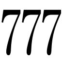世。我が始祖ヴァールからこの国を受け継いだ。余の前に魔法の一切は無効化する」
「や、やっぱり、国王様だったのですね。あの、お初におめもじつかまつります、私、ヴァリドゥー家の......あ」
言いかけてエリンは口をつぐんだ。自分はヴィアーナではない。本物の彼女は十年ほど前に死亡届を提出されているはずだ。エリンだということを自覚すると同時に、自分はこの世界において不審な娘となった。そして地上にも帰るべき場所はない。
「案ずるな。叔父上から話は聞いた。娘、余の足を踏まずに上手く踊れたら、そなたをこの世界の住人にしてやってもよいぞ」
「え？」
「肩の力を抜け。ここには余とそなた以外、誰もおらぬ」
少年が、満面に笑みを浮かべると同時に、正午の鐘が鳴った。
ステンドグラスが音を立てて街路に砕け散った。
銃口を向け合うふたりの男の赤と黒のマントには、銃撃による穴が数箇所開いていた。並みの者ならとうに命を落としているはずである。
審判の姿はすでにない。最初の銃声が聞こえると嘆息しながら姿を消失させた。
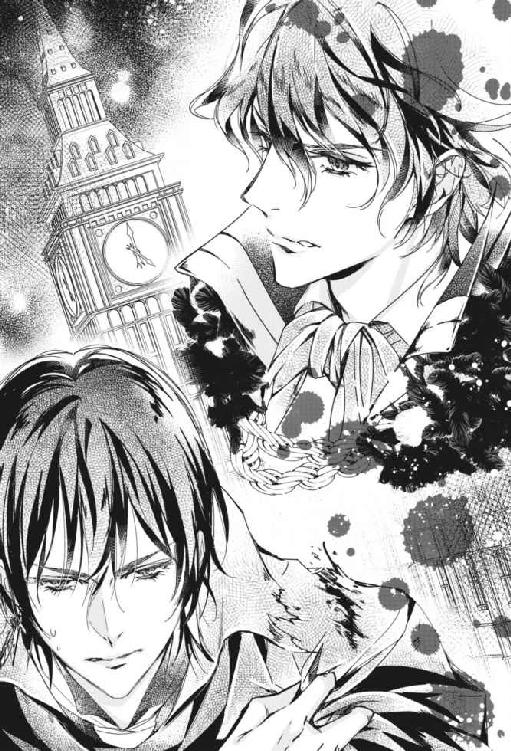
「往生際の悪いお兄様だ」
負傷して顔面を蒼白にさせたモスリーは、細い眉をわずかに震わせつつもハディールに微笑みかける。紫の瞳に宿る明らかな殺意。
「貴様もな、変質者」
ハディールも対抗し、真紅の双眸で宿敵を睨みながら太い笑みを作る。すでに数発の弾丸が、腕や腹を貫通している。回復呪文を唱えねば。
双方が同時に短い呪文を唱えると次の瞬間、ふたりの傷は完全に回復した。この程度ではびくともしない魔界公爵と伯爵であった。
「今度こそ容赦しませんよ」
「望むところだ」
ふたりの男は同時に拳銃を投げ捨てると、手の平から雷光を出現させた。やがてそれは雷を纏ったフェンシングのサーベルとなる。
サーベルは身体に触れれば並の者ならば致死に値する電撃を受ける。ふたりの少年時代の決闘はこの得物で勝敗が決まった。
「お兄様、私の特技で申し訳ありませんが、手っ取り早くいきたいので」
「今回は子供の喧嘩じゃないからな。私も本気を出させてもらう」
モスリーは力強く前方に腕を伸ばし攻撃を開始した。
モスリーの素早い突きをハディールは目にも留まらぬ速さで回避する。
剣が触れ合う度、閃光と共に雷鳴の如き大音響が響いた。
「一度は貴様に負けた。だが実力は互角だと自負している」
そうは言うものの、ハディールはモスリーの剣術に天賦の才を感じていた。攻撃に特化した怖れを知らぬ剣さばき。相手の血飛沫を求めて止まない。
途切れずに奏でられる華麗なる剣の旋律。緊迫した空気。翻る黒と赤のマント。死の舞踏。
「ヴァール・ドゥナの貴族然とした貴方が、人間の娘に執着するなど、らしくありませんよ。どうか彼女を私にお譲りください」
「お前から何と言われようと、世間から後ろ指を差されようと、私はエリンを妻にする！ 貴様にエリンは渡さん！」
「強情な方だ。可哀想に、エリンは貴方に騙されて！」
モスリーの目が眇められると同時に、攻撃が目にも留まらぬ猛攻に切り替わる。ひとつの突きに一秒の百分の一ほどしかかからない。しかしハディールはそれらを全て冷静に回避し、払い、防御する。
「騙されて、だと？ 聞き捨てならんな」
「貴方は地上から幼いエリンをさらい、魔法王国の住人となるように記憶を操作した......違いますか？ 兄だと信じさせておきながら彼女に不埒なふるまいをしたのは、年頃になったからですか？ 貴方という人は──見損ないましたよ！ 兄の皮をかぶった獣め！」
「突然現れた貴様に私の気持ちなどわかるものか！ ずっと愛していたんだ！」
モスリーの猛攻にハディールはいつしか壁まで追い詰められ、気づけばもうあとがなかった。ハディールは反撃を開始した。雄叫びを上げながらの気合の突きに、いち早く気配を察したモスリーが直前で漆黒のマントに風を孕ませ、巨大なカラスさながらに飛びのく。
今までずっと温室で大切にしてきた。彼女と血の繫がりなどないことを知るハディールは、愛しさを抑えて、蕾のほころぶのを見守ってきた。いつかは手放さねばならないという切ない思いをひた隠しにして。
「──彼女を一生大切にします。どうか私に彼女をください、お兄様」
モスリーの背後にある、銃弾によって打ち破られたステンドグラスから、怨嗟の声のような不気味な風音がした。
※ ※ ※
屋上に広がるのは壮絶な戦いの跡だった。
エリンは印を組んだまま硬直して佇む愛しい男の元へ駆け寄る。
ハディールはモスリーの持つメデューサの魔眼によって胸の辺りまで石化していた。全く身動きが取れない様子だ。
「ハディール......！」
エリンが見上げると、彼女を見下ろす真紅の瞳には己の最期を悟った者のすがすがしさがあった。言葉はもう出ないようだ。視線がエリンの首筋の呪いを案じている。
エリンは狂おしく彼を搔き抱いた。私に石化を解除する魔法の力があれば。
『お兄様。そして、エリン』
空から声が降って来た。聞き覚えのある、澄んだ声。少女のものだ。
エリンが振り向くと中空から真紅のドレスを着た可憐な少女が舞い降りて来た。半透明だ。
「貴女は......」
いつかの夢の中で出会った少女。ヴィアーナだ。ヴァリドゥー家の本物の真紅の姫君。ハディールと同じ凛とした眉。ヴィアネーラに似通った高雅な面差し。
「ヴィアーナね」
『ご機嫌よう』
少女は戦いで砕けた石畳にふわりと着地する。
「お願い、ヴィアーナ。ハディールを助けて！」
思わずエリンは叫んでいた。彼女なら何とかできるかもしれない。
『決闘は相討ちだった。公爵はお兄様の石化と引き換えに深淵に引きずり込まれ、しばらく戻ってこれない──石化を解く方法はないとされているわ。でも、貴女なら解くことができるかもしれなくてよ』
「どうやって？」
『持てる気持ち全てを注ぐの。貴女は国王様に認められて、もう魔法王国の住人になったのでしょう？ 大いなる魔法が発動するかもしれないわ。それに賭けるしか』
「ハディール」
エリンはハディールを再度見上げた。きっとこの魔法を解いてみせる。
「貴方を愛する気持ちは、誰にも負けないわ。どんな魔法にも」
エリンの唇から紡がれた強い言霊に、ハディールの真紅の瞳が揺れる。
「私を感じてハディール。冷たい石の魔法が解けますように──」
今ならわかる。石化の魔法の成り立ち。術者の壮絶な寂しさ。氷よりも冷たく凍てついた心。
エリンは本能でそれを解く術を悟ると、ありったけの力でハディールの身体を抱き締め、爪先立ちをして彼にキスした。
──お願い、彼を。
※ ※ ※
「ヴィアーナ」
ヴィアネーラは自分の発した声に目を覚ました。
ヴァリドゥー邸。一階の日当たりの良い窓辺で、真紅の貴婦人はゆり椅子に腰掛けて刺繡にいそしんでいた最中に、うとうとと眠ってしまっていたのだった。手には刺繡針を持ったままだ。
「奥様、針を持たれたままで危のうございますよ。お休みになられては」
いつの間にか部屋に訪れていた老執事が、刺繡用具を預かろうと歩み寄る。
「昨晩も十分に睡眠を取っておられないご様子でしたし」
「いいえ、休んでなどいられません」
何かをしていなければ、落ち着かない。
ハディールとモスリーの決闘は、ヴィアネーラを動揺させないように邸内に緘口令が敷かれていた。しかし、ヴィアネーラは決闘の日取りが決められたその日の内に、母親の勘で察したのだった。いつもの笑顔で手を振りながら、死地に赴く息子の後姿を窓辺から見送った。
そして、ゆるやかに彼女にかけられた優しい魔法は解けていったのだった。
「久し振りにあの子の夢を見ました」
「あの子と申しますと？」
「わたくしの小さな娘、ヴィアーナですよ。もう、あれからずいぶん経ちます」
ヴィアネーラはヴァリドゥー家の女主人らしい、毅然とした声で告げる。
「奥様......」
執事は彼女の心の内側で起こっていることを瞬時に察して絶句し、やがて感涙にむせた。
ヴィアネーラはふいに窓の外の真紅の庭に目を向ける。
「あら、お庭にいるのは誰かしら」
一点を見つめた彼女の瞳が驚愕に見開かれる。
赤い薔薇のアーチの側に、夢にまで見た愛しい娘が佇んでいる。今、こちらを振り向いて微笑を浮かべて。
「──まあ！」
ヴィアネーラは椅子から立ち上がった。刺繡の木枠が床に落ちたのも構わず、執事の制止の声も聞かずに庭先へ飛び出す。
「おお、ヴィアーナ！」
ヴィアネーラは地面にしゃがみ込んで両手を広げ、胸に飛び込んで来た少女を抱き止める。寄り添い咲き誇る薔薇のような真紅の母と娘だった。
『ずっとお会いしとうございましたわ、お母様』
「ごめんなさい、ヴィアーナ。貴女の死を受け入れるのに時間がかかってしまって」
母の腕の中に抱き止められた少女の姿は、光の粒となって空気中に霧散し、完全に消失した。
やがてヴィアネーラは立ち上がり、良く晴れた午後の空を仰いだ。そして大きく深呼吸して、真紅の薔薇咲く庭を見渡す。
息を切らして追って来た執事から、息子と嫁候補が共に帰還したとの知らせを受けると、ヴィアネーラの紅い唇に覇気が甦った。
「わたくしはこれから、この家の新しい女主人となる娘を一から育てねばならぬというわけですね」
後日談それから
世間を騒がせた決闘から三日ほど経った。
エリンの思いの力によって強力な石化魔法を解かれたハディールだったが、熾烈を極めた戦いで満身創痍となっていたため、医師から当分ベッドの上で生活するよう言い渡されていた。
エリンはというと、肩から落ちる花びらのひとひらごとに体温を奪う青薔薇の呪いは未だ解けず、死を免れるために熱を与えてくれるハディールから逃れられず、彼と共にベッドの上で過ごすことを強いられていた。
ふたりの正式な結婚はまだだったが、事実上の蜜月はもう始まっていた。
※ ※ ※
夜が更けた。
ふたりはベッドの上で仲良く並んで横たわっていた。
ハディールの隣で読書していたエリンは、ふと隣を見る。ハディールはもう眠っていた。
彼のはだけた胸から覗く傷跡や腕の包帯が痛々しい。不死鳥の血が流れる彼といえど、すぐに癒える傷ではなかった。魔界公爵との決闘がいかに凄まじいものであったか、容易に想像できる。
愛しさが込み上げて、エリンが彼にキスしようとしたその時だった。
扉をノックする音に、エリンはベッド脇のテーブルに置かれた時計をちらりと見る。そろそろ薬湯の時間だ。
ガウンを羽織り、ふたりだけの空間を閉ざす薄い幕を開いてベッドを抜け出し、メイドから盆を受け取り戻ると、いつの間にかハディールは目を開けていた。こちらを睨んでいる。
「側を離れるな。身体を冷やしてしまうぞ」
彼が言った直後、エリンの肩口からひらひらと青い花弁がこぼれ始めた。
「少しくらいならいいでしょう？ はい、お薬湯」
身体を起こし受け取りながら、駄目だ、とハディールは首を横に振る。
「中まで持って来るように言っておいたはずだが」
「私が嫌だから、取りに行ったのよ」
ベッドの上で彼と眠っているところに、他人に入って欲しくないのだ。今の今までこの家の令嬢だった娘だ。それが兄だった男と臥所を共にしている。今頃、使用人達の間でどんな噂が飛び交っているか。
エリンの沈鬱な表情を目にして、彼はすぐその原因に思い当たった。
「心配するな。実はこの家に仕える者は、お前が本当は私の妹ではないと元から知っている。詳しい説明は不要だ」
ハディールは決闘から帰還した折、迎えに出た母ヴィアネーラや使用人達の前で、エリンは自分の妻となる娘だと宣言したのだった。
その場で異論を唱える者はひとりもいなかった。
「そして、この家で私の決定は絶対なのだ」
ハディールは当主としての威厳を示す時、口調がそれらしく変わる。髭などたくわえたら鬼に金棒だろう。
「......じゃあ本当に、安心していいのね」
（貴方のものになっても）
全身が火照る。そんなエリンを彼が見ている。ガウンの下の夜着に透ける肌を。
「ヴァリドゥー伯爵夫人となる心の準備はできているか？」
ええ、と恥じらいながら答える。
「声が小さい」
ハディールは薬湯を飲み干すと目の前に立つエリンの腕を引いた。
「きゃっ」
ベッドの上になだれ込みハディールの腕の中へ引き寄せられる。
ふわりと金色の髪が舞い、瞬く間にエリンが枕に手をついてハディールの顔を挟み、彼を組み敷く体勢となった。
「傷に障るわ」
「構わん。お前を抱き締めたい」
腰に手を回され、熱い抱擁を受ける。そしてガウンを剝がされた。自分はこの男の妻となるのだ。体はまだ結ばれてこそいないが、気持ちはもう。
「さっきまで夢の中で妹とワルツを踊っていた。『ヴィアーナ』のダンスは完璧でな」
「私がまだ未熟だと言いたげね」
「そんなことは言っていないが」
ふふ、と笑みを漏らす。
「ヴィアーナには助けられたわ。彼女の助言がなければ、貴方は今頃......」
ハディールはエリンに荒々しくキスした。吐息と、舌を絡め合う湿った音が室内に響く。
「んっ......ん」
舌の感触に官能が刺激される。腹の近くで彼の物が息づくのを感じた。
彼の唇がエリンの胸元に移動する。
「ん、ん......ぁっ」
ふたりだけの空間で、エリンはしっとりとした声を放った。
唇から僅かに出されたハディールの舌が、エリンの白い肌を這う。鎖骨を滑り、中央の窪みを撫でる。
ハディールが両手でエリンのピンクの夜着を剝ぎ取ると、彼女の華奢な肩が現れた。続いて小ぶりなふたつの丘が。
ハディールはエリンの胸を揉み込みつつ、中央の柔らかな胸先を親指で擦り始める。刺激にエリンは両手で枕を押さえて背を仰け反らせた。
「あ、ぁあっ」
エリンは喘いだ。巧みな指に、胸先をあちらこちらに向かされながら、恥ずかしいほどに感じた。
ふいに爪を立てられて、エリンの胸先にびりびりと電撃が走る。
「んふっ、や、やぁあッ」
次に、完全に尖った胸先が彼の指の腹で上下に弾かれると、腰が勝手に跳ね踊った。
「やめ......っ、ぁああ、ぁあっ」
エリンの様子にハディールはにやりと笑った。
ハディールはさらにエリンの胸先を摘み、尖っていることを思い知らせる。
「も、やめ......ぁあっ」
「可愛い、誰にも聞かせたくない」
ハディールの声色は滴るような情欲に満ちていた。彼は体勢を反転させると、エリンを見つめた。
エリンは決意してぎゅっと目を閉じた。覚悟を決めよう。
ハディールは彼女の負担にならないように少しずつ奥処へ向けて身体を揺らしつつ進んだ。
決闘の際にモスリーがハディールに叩きつけた処女の証が赤インクだということは、戦いが終結した際にモスリーから白状されたハディールだった。
「あ、あん、んっ」
エリンの内奥でえも言われぬ感覚が生まれる。
自分の身体が彼を絡め取り、締めつけるのがわかる。奥へ、奥へと彼を引き込む。
内部で脈打つ物の質量が増し、痛みと共にエリンは満たされていった。
苦痛に顔を歪めるエリンを見て身を引こうとする彼を、駄目よ、と押さえ、エリンは背をずらし、自ら細腰に深く咥え込んだ。
「あ、こら！」
「はうぅうッ！」
耐え難い衝撃に身体が悲鳴を上げる。
涙が散る。けれども、痛みなんてこの際、問題ではない。彼とひとつになる喜びの方が。
慌ててハディールは繫がったまま痛みの衝撃にわななくエリンを抱き起こし、背を撫でる。
「気にしない、で」
でもすぐには動けない。下半身に占める圧倒的な質量に、息をするのも辛い。エリンは痛みが落ち着くまで、彼に身体を預けた。
「ようやくひとつになれた。どれだけこの時を望んでいたか」
ハディールは感無量な様子で呟く。
「本当にお前は、憎たらしい妹だった。兄である私を無闇に狂おしい気持ちにさせて......。しかも、何の悪意もないんだからな。お前が成長するにつれ、眠れない夜が多くなった」
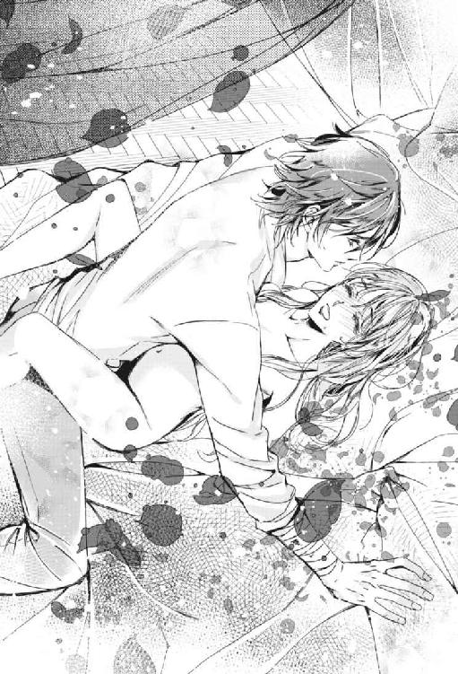
「ハディールったら」
「愛している。これまでも、この先もだ」
「私もよ。ハディール。ずっと一緒にいるわ」
エリンは彼の逞しい背に手を回す。
もう慣れた。大丈夫だ。エリンの思いが伝わってハディールが動き始める。あくまでも優しく、ゆるやかに。
「エリン。お前は私の妻だ。これからは我が不滅の炎がお前を守り続けるだろう」
ハディールの全身から魔的な炎が上がり、初夜の床を包む。
ハディールとエリンは不死鳥の炎の中で、世界中にたったふたりの存在となった。
紅蓮の炎の中、息も付けぬような口接けをし、ふたりは溶け合う。
「ハディ、ル......ハディー...ル......」
エリンは甘く腰を振ると、ハディールの動きはより情熱的になった。
「......お前が堪らなく愛しい......何度でも貫きたい......」
ハディールはエリンの金色の髪を優しく梳きながら、汗ばむ額にそっと口接けした。
「ハディール......この先、どんなことが起ころうとも、私は貴方の妻でいるわ」
見つめ合う真紅と緑の瞳。触れ合う唇。
エリンの内奥を擦る太い幹が大きく脈動する。
う、と彼が呻いた後、エリンの身体の中で熱が弾け、同時に呪いは消失した。
彼女が一際高い声を上げた後、ふたりは幸せな眠りに就いた。
※ ※ ※
同じ頃。青薔薇の屋敷の一室。棚に薬瓶の並ぶ倉庫で、純白のローブをまとったハリアドルは石床に描いた魔方陣の前に立ち、目を閉じ、ひたすら念じていた。彼のふたりの弟子の決闘から三日が経過していた。
ハリアドルは今の今まで一睡もせず、飲まず食わずだった。しかしその美しい顔に憔悴の色はない。驚くほど精力的な男だった。かつて、彼は魔道の極意を探求するために一年もの間、霞を食べて暮らしたこともあった。
彼は今、頭の中に深淵に落ちた甥のことを思い浮かべている。
深淵とは、ここ地底の魔法王国よりも深みにあって、上下もない果てしない暗黒空間だ。
広大無辺の虚無の世界の中で、モスリーは今、何を考えているのか。
外部からの刺激がないだろうから、傷心の身には存外に居心地がいい場所なのかもしれない。
けれども落ち込んだら最後、戻っては来られないとされる場所だ。自ら深淵に落ちた彼の行為は自殺行為と言っても過言ではない。
彼の方でこちら側の世界の誰かを頼り、その者と心が通じ合わない限り、彼を探し出すことも救い出すことも困難だ。
丸三日、呼びかけにもさっぱり応えない甥にハリアドルの不安は募る。
「私の呼びかけに応えてくれ、モスリー。絶望するにはまだ早い。僕を頼っておくれ。君のことを心の底から案じている私を。モスリー」
我々は心の糸で繫がっている。そう信じたい。
ふいに魔方陣が描かれた場所が暗い海面となった。
異界からの強風が水の上を吹き渡り、ハリアドルの長い銀髪と純白のローブが、風を孕んではためく。
ハリアドルは怯むことなく甥の名を唱えた。
彼の険しく寄せられた眉の下で、紫の瞳が見開かれた次の瞬間。
水面から白い手が伸びてきて、探るようにひらひらと手を振った。溺れた者が救いを求めているようにも見える。
ハリアドルは岸辺から身を乗り出してその手を取り、引き上げる。青ざめて死んだようにぐったりとした青年の身体を腕に抱き取り岸辺に上げると、暗い海は消失した。
「お帰り、モスリー。ありがとう、僕を頼ってくれて」
モスリーは無言だった。憔悴しきっている。
「しばらく僕の別荘で暮らさないか？ 湖の畔にあってね、いい所だよ。安心おし、手は出さないから。君には休養が必要だ」
「......いくら休養しても、とても立ち直れそうにありません。決闘では相討ちでしたが、この恋には最初から勝ち目がなかった。長い時が彼らの絆を深めていたから。絶望の真っただ中です。いっそ死んだ方が──拳銃で頭をぶち抜いて......一発で楽になれるでしょうね」
暗い笑いにモスリーの肩が揺れる。
「およし」
「だって叔父上」
モスリーは叔父の胸を拳で叩き、言葉にできぬ思いをぶつける。ハリアドルはその背を撫でた。
「君を捕まえたよモスリー。辛くて、苦しんでいるね。熱い涙だ」
「貴方って人は──人が失恋して苦しんでいるのがそんなに楽しいんですか？」
「いや、嬉しいんだ。ねえモスリー、生きていれば、辛いこともそのうち思い出になるさ。国王陛下が隣の部屋で待ってるよ。あの子、ずうっと君のことを心配していてね、お菓子も喉を通らないみたい」
暗幕の隙間から差し込んだ午後の光の中で、ふたりは再び触れ合えた喜びを嚙み締めた。
〈了〉
あとがき
こんにちは、初めまして、かほりと申します。
この物語は随分前に投稿サイトで連載して、その後電子書籍化されたものです。
今回、紙の本のお話をいただいて、盛り込みすぎの設定や暴走しまくったストーリーを見直した結果、すっきりとした物語に生まれ変わりました。
ヴィアーナやハディール、モスリー達はびっくりしたでしょうが、私は久しぶりに彼らと接することができて嬉しかったです（終幕後、再び幕が上がり、出演者たちが深々と頭を下げております）。
実はこの物語の舞台、色々な特徴を持った住人たちが住んでいる魔界は遙か昔にできあがっていました。本作品は、そんな世界にある一つの家庭の物語です。
いきなりですが、モスリーとハディールの少年時代の話をここで少し披露したいと思います。
『魔界の貴公子と宮廷魔術師は、真紅の姫君を奪い合う～私のために戦うのはやめて!!』
少年モスリーとハディール魔法学院編。
ハリアドルの魔法の授業中、密かにカラスのヒナ（エリン）に夢中で餌をやっているモスリー。
「モスリー、今の問いに答えたまえ」
「しょ、聖徳太子です」
突然ハリアドルからあてられて、モスリーは起立して素っ頓狂な声で言った。
「聞いていなかったね。ではハディール、代わりに答えたまえ」
隣の席のハディールが、ペンの柄で製作中であったトーテムポールを慌ててしまいながら立ち上がる。
「に、２πｒ もしくはマーラーです」
「内職中だったとはいえ、二人とも、もっとマシな答えはないのかい？」
─完─
──ゲラという紙の作業にはハートのメクリッコで取り組みました。親指にＳサイズを装着したので少々きつかったです。
電子から紙へと形態が変わったことで、お手に取っていただける方がいたら幸いです。
華麗なイラストを手掛けてくださった蜂不二子先生、その他書籍に関わってくださった皆さん、ありがとうございます。表紙とか挿絵が届くのがすごく楽しみでした。
そして私の初めての人で旦那様、ご協力ありがとう。子もご協力？ ありがとう。
それではー（厳かに幕が下りる）。
──再び幕が上がりました。ヴィアーナ、ハディール、モスリーが手を繋いでいます。ハリアドル、国王、双子や猫目、ヴィアネーラ、真紅の館に使える人々が手を振っています。皆さん、ご愛読ありがとうございました。
かほり
Story
かほり
Kahori
東京都在住。インドア派。
主婦であることを忘れて筆を執る。
皆さんの頭に絵が浮かぶような描写ができたらいいな、と思っています。
Illustration
蜂不二子
Hachi Fujiko
初めまして、イラスト・漫画制作をしております。
今回挿絵を担当させていただきました!
まさに赤色と黒色のように強い対比のヒーロー二人がとてもドラマチックで、そんなお話の魅力をイラストでお伝えできたら幸いです。
魔界の貴公子と宮廷魔術師は、真紅の姫君を奪い合う ～私のために戦うのはやめて!!［電子書籍版］
発行日 ２０１８年４月１日 発行
著 者 かほり
デザイン 百足屋ユウコ＋モンマ蚕（ムシカゴグラフィクス）
発行者 後藤明信
発行所 株式会社竹書房
〒１０２－００７２
東京都千代田区飯田橋２－７－３
ＴＥＬ ０３－３２６４－１５７６
ＵＲＬ http://www.takeshobo.co.jp
データ加工 株式会社暁印刷
 kahori 2018
kahori 2018
本書の一部あるいは全部を著作権者および株式会社竹書房に無断で複写・複製すること、および放送・上演・公衆送信（ホームページ上への掲載を含む）などは、法律で認められた場合を除き著作権の侵害となります。